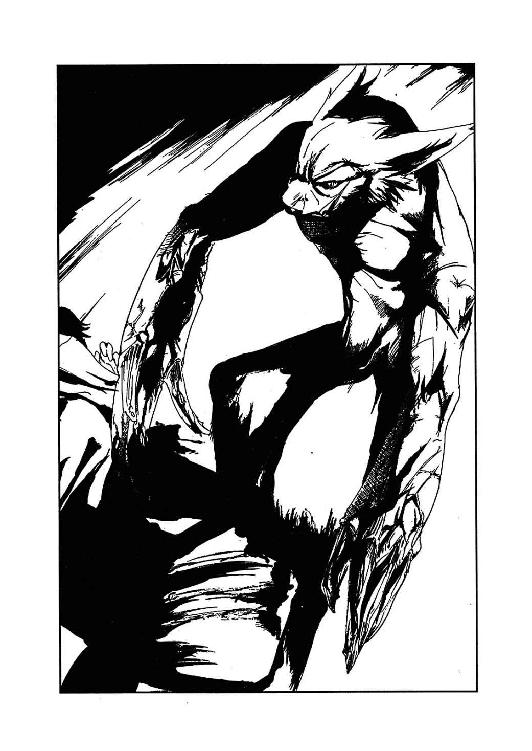

| ISON －イソン－ (富士見ファンタジア文庫) | |
| 一乃勢 まや | |
| (2014) | |
ＩＳＯＮ
─イソン─
一乃勢まや

富士見ファンタジア文庫
本作品の全部または一部を無断で複製、転載、配信、送信したり、ホームページ上に転載することを禁止します。また、本作品の内容を無断で改変、改ざん等を行うことも禁止します。
本作品購入時にご承諾いただいた規約により、有償・無償にかかわらず本作品を第三者に譲渡することはできません。
本作品を示すサムネイルなどのイメージ画像は、再ダウンロード時に予告なく変更される場合があります。
本作品は縦書きでレイアウトされています。
また、ご覧になるリーディングシステムにより、表示の差が認められることがあります。
口絵・本文イラスト 宮沢波宏
ＰＲＯＬＯＧＵＥ
「探せ！ そう遠くには逃げられないはずだ！」
「子供だからって油断するな、奴らは化け物だぞ！」
ＳＭＧで武装した男達の声に、無地のパジャマに身を包んだ少女はぎゅっと膝を抱え小さくなっていた。伸びっ放しで切り揃えられてすらいない黒髪に隠れた目は、恐怖一色に染まっている。
彼らは殺気立っている。見つかったら確実に殺される──追われるまま咄嗟に隠れたコンテナの陰は、命がけのかくれんぼの隠れ場所としてはあまりに簡単すぎる。複数の鬼の目を欺ききれるとは到底思えなかった。
「......しかし、本当に殺していいのか？ やっと安定した貴重な検体だろ？」
「上がいいって言ってんだからいいんだろうよ。いちいち詮索しないほうが利口だと俺ぁ思うがね」
こちらに向けられたライトがコンテナの影を濃く浮き出させる。走って逃げ出そうとする少女をここに留めているのは、同じ黒髪、同じ年頃の少年だ。まだ幼い身体つきの少年は、細い腕で少女を守るように抱きしめている。この小さなナイトこそが少女の唯一の心の支えだった。
（ねえ......早く逃げようよ......）
（しっ、静かに！ 見つかっちゃうよ......）
ひそひそと言葉を交わし、少年は少女の肩に両手を置いた。
（μ、あれ......あれを使えないかな）
μと呼ばれた少女は、少年の視線を涙で霞む目で追う。
二人の目に映ったのは、Ｈの文字の中心から大きく外れて停められた一機の小型ヘリだった。ヘリの周りには今のところ誰もいない。
（エルタブリス社製ＳＣ─２......データにある。飛ばせるよ......）
子供の会話にしては内容が異常だった。十二歳の子供がここから逃げ出すための手段としてヘリに目を付け、さらにそれを平然と『飛ばせる』と言う。二人とも見た目通りの子供ではないらしい。
（じゃあ、あれで一緒に逃げよう）
（でも動かしたら人が来るよ......）
（僕が引きつけるから、その間に、ね）
言うと、少年の姿は闇に溶けるように透けていく。光学迷彩──自分の身体の光の屈折率を限りなくゼロにする、つまり透明化する能力だ。完全に、とはいかないが、夜であればほぼ人の目には映らなくなる。
（α......！）
μは姿の見えないはずの少年を呼び止め、震える声で囁く。
（気をつけてね......）
泣きそうな顔をするμの頭をくしゃっ、と撫で、少年の気配が遠ざかっていく。姿を消したまま、こちらに向かって来る二人組に無造作に近づき──
「......ここにいるよ」
距離を置いた二人の間に入り、はっきり聞こえる声で告げると光学迷彩を解除した。
お互い意外な方向からの声を聞いた二人は、突然そこに現れた小さな人影に驚き反射的に銃口をそちらに向ける。
「いたぞ！」
目の前に転がり込んできた標的に、二人はどちらからともなく歓喜の声をあげた。標的を仕留めた者にはボーナスが支払われるのだ。組織から見れば微々たるものだが、下っ端の者達にとっては決して安くない額である。そして、そのことが二人の、いや、少年達を追ってきた男達から冷静な判断力を欠如させていた。
二人がもう少し冷静だったなら、或いはプロの傭兵だったなら絶対にありえない行動だったろう。
タタタッ
銃口の先には、標的の子供だけでなく、味方もいる。当たり前のことが頭からすっぽり抜け落ちたまま、二人の男は引き金を引いていた。
弾丸が疾った先に既にαの姿はない。二人は互いに撃ち合い、胸を撃ち抜かれ向かい合ったままその場に倒れた。
迷彩を行ったまま、αはむくりと身を起こした。一瞬姿を見せた後、逃げると見せかけてその場に伏せ再び姿を消していたのだ。狙ってはいたが、まさか同士討ちにまでなるとは思わなかった。
どちらか一人を残せば他の追っ手を呼び寄せてくれると思ったのだが、仕方ない。恐る恐る倒れた男の手から取ったマシンガンを両手に持ち、コンテナから大きく離れた場所まで走り一丁を漆黒の空に向けてフルオートで乱射した。
バラララララララッ！
一際派手な銃声があたりに響く。弾倉が空になったマシンガンを捨て迷彩を解除して、連射で痺れた手を握ったり閉じたりしながら呼吸を整える。
「こっちだ！」
「埠頭のほうに逃げやがったか！」
銃声を聞きつけ、散らばっていた男達が駆けつけ集まってくる。
「二人殺られてた！ 奴ら武器持ってやがるぞ！」
「けっ、ガキが撃つタマが当たるかよ！」
自分が同士討ちさせた二人のことだろうか。痺れた手をじっと眺めながら男達の声に耳を傾ける。確かに、銃など持ったこともない。構造のことなら学習済みなのであの男達より詳しい自信はあるが、実際撃つとなると話は別だ。怪我をしないように引き金を引くことぐらいしかできない。何かを狙って撃つなど論外である。
ずらっと積み上げ並べられたコンテナの陰から男達の様子を窺い、迷彩をかけて銃を構え、特に狙いもせず軽く引き金を引く。
タタッ
あらぬ方向へ飛んでいった弾丸がコンテナに当たり跳ねる。
「クソガキがっ！ ぶっ殺してやる！」
跳弾に身を屈めた男の一人が罵声と共に拳銃を乱射する。狙ってすらいなかったが、自分の隠れたコンテナの端を弾が掠め、αは震えた。
踵を返し、狭いコンテナの間をすり抜け場所を変えては数発空に向けて発砲する。逃げていながら自分の位置を銃声で暴露する矛盾を感じながら、αは必死で逃げ回る。
迷彩で姿を消しては男達の後ろに回り姿を見せ、わざと見つかってはまた姿を消す。大きな足音を立てたりコンテナの上に石を投げ上げて上にいるように思わせたり。単純な陽動だが、それで男達はここに複数標的がいると思い込んでいた。
「ガキ共！ 出てきやがれ！ もう逃げられねぇぞ！」
たった一人の少年に翻弄されているとも知らず。普通ではないと知っていながら、やはり子供だと思って甘く見ているのだ。
（そろそろいいかな......）
弾の切れたマシンガンを躊躇なく放り捨て、迷彩をかけて堂々と男の前に出る。気づかずきょろきょろと周囲を見回す鈍い男の目の前を静かに通り抜けようとしたその時──
何の前ぶれも無く振り向いた男の持っていた銃の先が、αのゆったりしたパジャマに軽く引っかかったのだ。
「..................!?」
それがどういったことなのかはわからなかっただろう。ただ、異変に対して敏感になっていた男は訳のわからないまま指に力を込めていた。
銃声──
「いた......いたぞ、見つけた！」
＊
人の気配を注意深く探りながら、μはコンテナの陰から陰へ少しずつ移動していた。激しく撃ち合うような銃声に誘われ、ほとんどの──何人いるのか知らないが──男達はそれを追っていったようだ。今なら見つからずにヘリに乗り込める──
（......よしっ......！）
がたがたと震える足に走れと胸中で言い聞かせ、ヘリまでの十数メートルを一気に走り抜ける。
機体の大きさを見ても躊躇はない。何の気負いもなくドアを開き、操縦席に身体を滑り込ませる。
「........................」
よく知っているタイプだ。目をつぶってでも操作できる。シートが身体に余るのは仕方ないが。
汗ばむ手をこすり合わせエンジンを始動する。いつでも飛び立てるが、エンジン音だけはどうしようもない。誰かが聞きつけて来るかもしれない。膝に肘をつき顔の前で祈るように手を組む。
（α、早く戻ってきてよぅ......）
身体が成熟していないので今まで実際に発揮されることはなかったにしても、自動車や飛行機、船、もちろんヘリにおいても並外れた操縦技能を持つとされる少女のこと、飛び立ちさえすればどんな追撃が来ても振り切る自信はある。だが今の状態はといえば単なる鉄の棺桶でしかない。
タタタッ！
間近での銃声に、μはしゃっくりのような悲鳴をあげてシートの下にしゃがみこんだ。無意識に足元に突いた手のひらに小さな痛み。見るとごく小さな四角いガラス片が数個、手に浅く刺さり血が滲んでいる。
頭上、ヘリのガラスに指が通るほどの穴が開けられ周囲が罅で曇っていた。
「そこから出てきなお嬢ちゃん！ もう逃げられねぇぜ！」
（見つかった......！）
絶望的な表情で頭を抱える。
足音が近づいてくる。うまく嚙み合わない歯がかちかちと鳴っている。
あと数秒で、男はこのヘリのドアを開け自分に銃弾を撃ち込むだろう。そう、あと五歩、四歩、三歩──
がっ！
「ぐっ！」
二歩、と数える前に、鈍い音と低い呻き声が耳に届く。それきり外はしんとなった。
どこっ。
再度の打撃音に、μはドア越しにそっと外を覗き見る。
マシンガンを持った男が倒れ、その側にレンチを持った半透明の子供が佇んでいた。
「うぐ......」
もそりと動く男の背にレンチを打ち下ろし、中途半端な迷彩を解除するとレンチの替わりにマシンガンを拾い上げ、μの覗くドアを引き開ける。
「α......」
少年のために操縦席の隣を空け、泣き笑いのような表情で呟く。
「お待たせ」
静かに答え、隣のシートにぽすりと沈み込む。
彼が戻ってきたなら長居は無用だ。素早く離陸操作に入る。
ローター、テイルローターが高速回転し、機体がゆっくりと浮き上がっていく。五十センチほど浮かせた状態ですぐ水平飛行に移る。高空を飛ぶより見つかりにくいということも承知の上だ。
やっとヘリポートに追いついた男達がヘリに向けて撃っているが、もう彼らの銃で狙って当たる距離ではない。μは闇夜に紛れさらに速度を上げる。
「やった、ね」
慣れた手つきで操縦しながら言うが、αは微笑んで小さく頷くだけ。
「............？」
何か言ってよ、と言おうとしたμの顔を見返し、αはぼそぼそと小声で呟いた。
「僕が、行かなきゃ......μはずっとあそこで、待って、ると思ったから」
不自然な息継ぎを繰り返すαにμは眉をひそめ、
「どうしたの？ どこか痛いの？」
心配げなμの問いに、αは青白い顔で答える。
「大丈夫だよ......大丈夫......だい......じょ......」
何度か同じ言葉を繰り返したαの手が、ぽとりと膝の上に落ちた。
「α？」
返事が返ってこない。
「αってば！」
嫌な予感は現実になっていた。彼の身体を受け止めていたシートが、赤黒く染まっていたのだ。
腕に隠れて見えなかった右の脇腹がぐっしょりと濡れている。撃たれた傷だということは見なくても想像がついた。それに、この出血が致命的なものだということも。
「α......返事してよ。ねえ、喋ってよ！ いつもみたいに面白い話してよ！」
μの泣き声は嗚咽に変わっていた。返ってくるはずのない声を求めて。
「うそつきっ......一緒に逃げようって言ったのに......」
一人では意味がない。一緒だったから、懸命になれたのに。ここまで来れたのに。
これ以上逃げる意味があるだろうか。たった一人、この世界で......
独りとり残された少女は、すぐ側にある海面に視線を移す。
──吸い込まれるような暗い静かな海が、そこに流れていた──
１．ＳＷＥＥＰＥＲＳ
タッ、タッ、タッ、タッ！
両手で構えられた銃が立て続けに火を噴き、一番遠い五十メートル先の標的を精確に射抜く。装塡された弾丸の半分を使ったところで左手一本に持ち替えて残弾の半分を、右手に持ち替えて残り全弾を撃ち尽くす。その間十秒とかからない。
「......っし」
スライドが下がったままの銃とイヤーカバーをテーブルに置き、手元のキーを操作して的を手元まで呼び寄せる。
「ん......ん～......」
ゴーグルを外しながら、眼鏡の奥の目を細めて感嘆とも不満とも取れる呻き声を漏らす。
的の中心の赤い円の中にほとんどの弾痕が集中し、二発だけ赤丸から十センチほど外れている。
「おうトーヤ。どうだった？」
図抜けた射撃センスを見せた眼鏡の青年に、背後から無骨そうな声がかけられる。
「照準調整もバランスもほぼ完璧。これで当たらない訳ねーんだけどな」
さっきまではそこにいなかった大男に振り返りもせず答え、鳶色の髪をかき上げた。
「だろうな。やっぱりベインの野郎がヘボなだけか」
無精髭を撫でながらけっ、と吐き捨てる男。
「いいんじゃねーか？ あんたにはそのほうが商売になるんだし」
ベインといえば、見るたび持っている銃が違うことで有名な男である。的に当たらないことを道具のせいにし、たびたび買い換えているからだと知っている者は意外に少ない。
「俺が不良品を売っているみたいで気分が悪い」
ぴっちりと張ったシャツの胸ポケットから葉巻を取り出し、口にくわえる。
「......ダン。そいつは？」
葉巻のことではない。男──ダンが無造作に傍らの丸テーブルの上に置いているつやの無いハンドガンのことだ。
横にも縦にも大きいダンを見た後だと小さく見えるが、一応標準的なサイズである。
「ああ、シグの新製品だ。今朝入荷したんだが」
「へぇ......」
血圧の低そうな──実際にはそうでもないが──声で生返事をし、手にとってしげしげと眺める。外観は従来品と変わらないようだが......
「......撃ってみていいか？」
弾倉は入っているが、空だろう。
「弾代だけサービスしといてやる。無茶すんじゃねぇぞ」
やはりぴっちりのジーンズから新しい弾倉を取り出し、放ってくる。
二十メートルの標的の前に入り、弾倉を新しいものに挿し替えると後ろのダンの視線を感じながら呟く。
「葉巻やめてくれ。集中力が落ちる」
「なら集中するな」
にべも無く言い放ち、マッチを擦って火を点けると美味そうに煙を吸い込む。
「連射するぞ」
「壊したら弁償な」
先の射撃もかなりの速射だったが、それでもかなり抑えていたのだ。本気でやると銃が壊れかねないので、手加減を心掛けているぐらいである。
イヤーカバーとゴーグルを身に着け、左手一本で構えて二十メートルの標的を狙う。
タタタタタタッ！
リコイルを最小の動きで吸収し、続けざまに引き金を絞った。
「無茶すんなって言っただろうが！」
聞こえないふりをして、マシン・ピストルもかくやという速さで全弾を撃ち尽くす。
ちりん......
最後の薬莢が床に落ちる。
「......おいこら......」
イヤーカバーを外すトーヤに押し殺した声でうめく。
「......イマイチ。グリップが角張ってて痛い。それに軽すぎて頼りない」
淡々と感想を述べて安全装置をかけると、険悪な形相で詰め寄ってきたダンがごつごつした拳をトーヤの顔面目掛けて放ってきた。
「うぉっと！」
身体を反らして紙一重でかわすと、脇を抜けるように大男の後ろに回りこむ。
「へっへー、はっずれ」
「こっのクソガキ......」
「このクソオヤジ」
こんなやりとりは日常茶飯事である。クソガキ、クソオヤジは二人の定番の台詞ともいえる。
ただ、ダンがトーヤの実の父親というわけではない。孤児だったトーヤに血縁者はいないし、父親と息子というには少し実年齢が近すぎる。小さな孤児院から独立したトーヤが一番初めに世話になった、そして現在進行形でも世話になっている──トーヤの言うオヤジとは『おやじさん』の意なのである。
今トーヤは彼の経営する『Ｄ・Ｓ銃砲店』の二階の空き部屋に間借りしている身だ。しかも相場の半分にも満たない額で。それはダンの厚意──ではなく、本業を休んでいる間は無報酬で店の手伝いをすることが条件なのだが。
トーヤの本業とは、簡単に言うと『賞金稼ぎ』、正式には『掃除人』と呼ばれるものである。
『司法組織外犯罪抑止力補助法』──各国政府か司法組織が定めた犯罪者に限り、民間人が独自に（司法組織の妨害にならない程度に）捜査、逮捕を行うことを認め、協力者に褒賞金を支払う──といった内容だが、実際には犯罪の抑止効果は薄く、検挙率だけが跳ね上がった。事実上の『賞金首制度』である。
後に何度も改定が為され、今では『民間人』ではなく『資格を所持する者』となり、特別なライセンスが必要になった。『掃除人』と呼ばれるその資格はそのまま職業名でもあり、現在では無資格で『掃除』を行うと懸賞金が支払われないどころか犯罪になる。
また、掃除人だからといって政府や司法組織から直接的な支援が受けられるわけではないので、リスクを考えればそう割の良い職業でもない。なにしろ、実費も全て個人持ちであるうえ、掃除人の追う相手は当局が認める凶悪犯に限られるのだから。個々の差は激しいが、平均して懸賞金の額が大きいのが救いだが。
トーヤはその『掃除人』の中でもそれなりに成功している部類に入るだろう。実力不足で食い詰めたり、標的に返り討ちにされ命を落とす者は多いのだ。
「ったく......店に並べる前に壊されてたまるか。返せ」
削るだの交換するだのとぶつぶつ呟くトーヤの手から銃をむしり取り、異常がないか慣れた手つきで簡単に確認する。
「お、そういえば......」
閑散とした射撃場から出ていこうとして、ダンははたと立ち止まった。
「Ｍ16が二丁整備に入ってる。やっとけ」
一方的に告げると階段を上がっていく。商売を手伝わせるのに遠慮する人間ではない。
あのダンも、元掃除人だったのだ。犯人追跡の最中、自分に恨みを持つ別の犯人に撃たれて引退を余儀なくされ、掃除で稼いだ金を元手にこの店を始めた。昔の話はあまり聞かないが、よほど腕利きだったのだろう、でなければ地下にこんな施設を作れる土地が確保できるわけがない。
「へいへい......」
めんどくさげに返事を返す。
レッグ・ホルスターから愛用の拳銃を抜き、眼鏡を外してまた二十メートルの的を狙う。単射、バースト、フルの切り替え可能な銃だが、今回は単射、右手で。
タンッ！
手に馴染んだ反動が返ってくる。
タン、タン、タンッ！
撃つたびにトーヤの端整な顔が険しくなっていく。別に不満があるわけでも怒っているわけでもないのだが......
「......はぁ......」
半分撃ったところで、溜息をつき撃つのを止める。
「......眼鏡なし、しかもウイークハンドで当たるわけないじゃない」
女性の、僅かに呆れのこもった声がかけられる。
「余計なお世話だ」
振り返り睨むが、相手の姿はぼんやりとして輪郭がはっきりしない。しかも二重、三重にブレて見える。超ド近眼の上乱視ありなので、実は二十メートル先の的など見えてすらいない。眼鏡を外す一瞬前に見た的だけを参考に、イメージのみで狙いをつけていたのだ。
「眼鏡眼鏡」
「わかってるよ」
かけ直して改めて相手を見る。
タイトミニの黒いスカートにハイネック、大きめのレザージャケットを羽織った、長い黒髪を頭の斜め後ろでまとめた美女の姿がはっきり目に映る。左こめかみのあたりに垂らしている、一房だけ薄い紫色に染められている髪は、他に飾り気のない彼女の唯一ともいえるアクセサリーだ。
「なんだ、ティファか」
「誰だと思ってたの？」
ダンと入れ替わりに入ってきたのだろう。とことこと歩み寄ると、ティファ・バートランドはトーヤを押し退けて的の操作キーをいじる。
「へたくそ」
的を見るなり、容赦なく言う。
「いや、一発当たってる。ほら。たいした進歩だぜ」
的には、旧地球で流行した『黄色い丸に点のような目とむやみに笑った形の口を書いたマーク』に似た図形が弾痕で大雑把に書いてある。人間技ではないが、トーヤが注目したのはそっちではなく的の隅の気持ち程度に削られた部分だった。
「これは当たったじゃなくてかすったっていうのよ」
「人が素直に喜んでいるところに水を差すなよ」
「そんな大袈裟なもんじゃないと思うけど......」
五十メートル先の的の中心に必中できる人間の言うことにしては悲しいほどレベルが低い。例えでもなんでもなく、眼鏡はトーヤの生命線なのだ。
「......で、何か用か？」
「あ、そうそう。トーヤにメール来てたわよ。仕事みたいな」
「みたいな？」
「うん」
自分の目で見て判断して、と言いたいらしい。
「つーか......人に届いたメール勝手に読むなよ」
「いいじゃない、他人じゃないんだし」
返答に窮するようなことを言い、無邪気に笑う。
実際には他人である。同じ孤児院で姉弟のように育ち、一歳年上の彼女が少し遅く、トーヤが少し早く、つまりほぼ同時期に独立した。同じように掃除人を志していた二人は程なくして再会し、その後はなんとなくチームを組んでいる。ようするに仲間だ。
トーヤが神業的な銃の腕を持つのに対して、彼女は肉体を駆使する格闘戦に長けている。生まれ持っての才能もあるだろうが、二人とも肉体能力が普通ではないのだ。
あくまで体質的なものなので意識して鍛えなければ意味がないし、当人が自覚しにくいということもあり一般にはあまり認知されていないが、専門家や裏社会の人間は彼らのように特殊な肉体を持つ人間をＩＳＯＮと呼んでいる。
自分達がそうだと知っても、トーヤはなんとも思わなかった。優越感もまったく無い。ティファのことはどうかといえば──仮にＩＳＯＮでなくても、彼女は充分強いはずだ。涼しい顔して車の後輪を浮かせたのにはさすがに辟易したが。
「ま......仕事なら仕方ねーよな」
他人云々の話題を避けるように、銃をホルスターに収め後頭部を搔く。
彼女とこの手の話をすると、一緒に風呂に入っただの一つのベッドにひっつき合って寝ただの、十年以上も昔のことを最近までそうだったかのように言うので恥ずかしいのだ。
「本業のほうが優先だもんな。うん、残念だけど」
言っていることとは裏腹に表情は輝いている。
「んじゃ行くか。さっさと」
軽快な足取りで階段を駆け上がるトーヤの後に音も無くティファが続く。
カウンターで葉巻をふかすダンに、
「ダン、オレ仕事入ったから。そゆことで、じゃっ！」
早口で告げ、二階の自室に向かう。ダンが何か文句を言っているようだが、そんなものは無視である。
（あー、そういうことね......）
整備を手伝うのが嫌だったのだ。ティファはなるほどと納得して微笑んだ。
「待ってよトーヤ！」
＊
『トーヤ・フェニックス様 掃除人のあなたにビジネスの話があります。詳しいことは直接会ってお話ししますので、興味がおありなら十二日、午後一時にカフェ『イマージュ』にお越しください。お待ちしています』
..........................................
「......これは、どう受け取ったらいいんだろうな」
ＤＭなどであればアポイントメント・セールスだと割り切って相手にもしなかっただろうが、Ｅメールでしかも受取人の名前入りとなると判断に困る。差出人の名前はないが、この送り主はトーヤをよく調べている。職業はもちろん、居住地まで。恐らく直接訪ねて来ることも可能だろう。セールス目的でそこまでやるとは考えにくい。なんらかの罠である可能性も低い。ここまでわかっているならわざわざ外に呼び出す理由がない。
「これ見てなんで仕事だと思ったんだ？」
「え、だって掃除人のビジネスっていったら......」
「あからさまに怪しいだろーが、こんなもん」
抜けたことを言うティファに半眼でうめく。
「......怪しいけど、とりあえず危険はなさそうよ、これ」
少し考えるような仕草をしてから、反論してくる。一応トーヤと同じことを考えているらしい。
しかし、同じことを考えていても言うことはそれぞれ違う。
「行くんでしょ？」
彼女はもう行くつもりになっている。
「気味が悪いから嫌だ」
本音とは少し違う。こういう不思議なことをする相手に興味はある。一言で否定するほどのことでもないと思ってはいる。
「じゃあイマージュにゴハン食べに行こ。ちょうどお昼だし、そのついでにメールの人と会う、とか」
「......ま、そんなとこかな」
「やったっ。実はイマージュの新ランチメニューまだチェックしてなかったのよね」
「ええと......指定は一時だったっけ」
壁掛け時計に視線を移す。
十二時四十五分。
ちなみにＤ・Ｓ銃砲店からイマージュまでは車で飛ばしても十分以上かかる。昼時で車通りが多いことを考えると──
「なんでもっと早く言わねーんだよ！」
「えぇっ、あたしのせいっ!?」
二人は慌ただしく部屋を飛び出した。
＊
十二時五十八分、カフェ『イマージュ』駐車場。
「来ませんねぇ、掃除人さんたち」
助手席の少女が、窓に張り付くようにして店の入り口を凝視している。のんびりというか、聞いていると欠伸が出そうな声だ。
外を見るにしても露骨すぎる──やめろと言えば少女は即座に止めるだろうが、敢えて止めさせるほどのことでもない。運転席に座する女は黙して煙草をくわえた。
「煙草は身体によくないですよぉ」
「......くわえてるだけよ」
くすんだ金髪に手櫛を入れてぼそぼそと答える。火を点けてもいいが、一度も煙草が美味いと思ったことはない。付き合いで吸うことはあったが、理解できない。隣の少女が言うように著しく健康を害してまで欲するほどの快感がこれのどこにあるのか。
「ならいいですっ」
何が楽しいのか、にこにこと笑って言う。
（......まあ......無理はないけど）
この時間にこの場所で掃除人を待っている──トーヤ達をメールで呼び出したのは、彼女達に間違いないようだ。
（やっぱり直接会うべきだったかしら）
「あ、来ましたよぉ」
「え？」
「ほらぁ、オンナの人も一緒一緒」
予想以上に大胆かつ不敵な男らしい。
（大事なのはこれからね......）
うまく乗せれば期待通りの働きをしてくれるに違いない。
「それじゃあ、言ってきま──」
「待ちなさい」
「えー？」
出番を待っていたらしく車から降りようとする少女を、言葉だけで引き止める。指示したことがこれだけテキパキとこなせるなら、普段から倍速で動いてほしいと思う──なぜ私が彼女のペースに合わせなければならないのだ。
「少し待たせましょ。こっちも待たされたんだし」
時計を見ながら思う。あの店の売上に少し貢献してやるのも悪くない。今朝食べたモーニングセットも美味しかったことだし。
「はぁ～」
返事も間延びしていてイライラする。
「あ」
少女が自分の手元を見て小さく声をあげ、顔色を窺うようにおどおどとこちらを見ている。半分だけ開けた目でちらと見やると、真白い封筒が少女の手の中でくしゃくしゃに潰されていた。思わず握りしめてしまったようだ。
「......いいわよ、別に」
その一言で少女の表情が輝く。どうでもいい、のいいだったのだが、赦免だと勝手に受け取ったらしい。それこそどうでもいいことだったが。彼女が自分の言葉をどう解釈しているかなど。
＊
「もう来て待ってっかな......」
店内に入るなり、トーヤはウェイトレスの声を聞き流しながら席を埋めている客をざっと見回した。時間帯的に男女共スーツ姿が多い。メールの丁寧な文面からスーツを着こなしたキャリアウーマンを漠然と想像したが、あんなものそのつもりがあれば誰にだって書ける。そういう目で見れば誰がそれらしいとも言えるし誰もらしくないとも言える。
「あ、あの......」
学生らしいバイトのウェイトレスがおろおろしている。
「あ、二人だけど席空いてる？」
「は、はい、こちらへどうぞ」
代わりに答えたティファにほっとした様子で案内するウェイトレス。窓際奥の日差しがきつい席だ。他の席はほとんど客がいるので仕方ないが。
「怒って帰っちゃってるかもねぇ」
「いや、それはねーだろ......待ってるって言った奴が相手が時間通り来なかったからってさっさと帰るか？」
席に座りメニューを取る。
「......トーヤ、標的が取引の場所に時間通り来なかったからって待ち伏せ放棄したことあったよね。あの後あたし取引相手に見つかって──」
泣きそうな顔をして口元を覆い、俯いて洟をすする。
「──仕方ないから出ていって取引に現れた奴ら全員半殺しにしたんだったな」
「病院送りって言ってよ、人聞き悪い」
けろっとした顔で訂正してくる。
「同じだ、同じ」
「標的の賞金が５万ＮＥドル、取引相手の賞金が総額20万ＮＥドル！ トーヤ何もしてないのに20万山分けしたじゃない！ ズルいわよ！」
「後で捕まえた標的のほうの賞金全部やったじゃんか」
「轢き逃げに遭って意識なかったの偶然見つけただけでしょ！ 結局楽して10万丸儲け。全部とは言わないけど、半分ぐらい返してよ！」
「ちょっと待て、話がズレてる」
「誤魔化さないで」
「メールの相手が待ってるかどうかって話だろ？」
「騙されないわよ」
騙すつもりなどない（誤魔化すつもりではあったが）のだが、食事ついでに、という気で来ているティファにはメールの相手などどうでもいいことらしい。
「あのー......」
会話の途切れた間を狙ってさっきのウェイトレスが注文を取りに来た。
「あ、注文ね。あたし新登場のヘルシーランチセット三人前、飲物はアイスティーね」
「ハーブ鶏胸肉の蒸し焼きとペペロンチーノ」
レストランではないのだが、かなり本格的な料理を出すので人気がある。トーヤ達も、ここに来たのは一度や二度ではないのだ。
にこやかに早口で復唱するウェイトレスを上目づかいに眺める。
（彼女がそうでも、別に意外じゃねーよな......）
ぼんやりとそんなことを考える。
「......なにやらしい目で見てんのよ」
ウェイトレスがいなくなった後、ティファが険のある声で呟く。
「ふーん、トーヤってあーゆー娘もアリなんだ。あたしん家の隣のエリーさんとか、角のペットショップの店長とか、年上が好きなんだと思ってたんだけど」
「なんの話だっ!?」
「共通点を挙げるとすると、みんな細身ってとこね。そっか、スレンダーなほうがいい、と。はいはい、よーくわかりました」
あながち間違った指摘でもなかったが、根本的なところで誤解されているようだった。
「オレは単に彼女が例の相手かと思ってただけだぜ？」
「そうかしら。それだけならあんなにじろじろ見る必要ないじゃない」
「じろじろって──あ、あれは顔がよく見えなかったから。ほら」
眼鏡を下にずらし、レンズ越しでない目でティファを見る。視力４・５の彼女はこちらの瞳孔の微妙な動きまで見えているのだろうが、生憎トーヤからは彼女の表情さえ見えていない。
「......まあどうでもいいけど......とりあえず彼女でないことは確かね」
「なんで？」
「知り合いだもん。ただの学生。あんなまどろっこしいことしないわよ」
「なら最初からそう言えよっ！」
手に持ったままだったメニューをばん、とテーブルに叩きつける。無駄な緊張による疲れがトゲのある言葉に転化していた。
「聞かなかったじゃない」
「『アレハアナタノトモダチデスカ～？』なんていちいち聞くかっ！」
「そーね、これからは聞いて。いちいち答えたげるから」
くすくす笑いながら席を立ち、雑誌を取りに入り口側へ向かう。
彼女のペースにはまり込んでいることに気づき、トーヤは頰杖をついて溜息をつく。落ち着け、と言われたような気がしたのだ。
「..............................」
何気なく窓の外を見る──色素の薄い瞳には日差しが強すぎた。
丈の短いジャケットの内ポケットからケースを取り出し、眼鏡を度付きのサングラスにかけ換える。かけていた眼鏡を丁寧にケースに収め、ポケットに戻そうとして──
コトンッ
手元が狂って床に落とす。
小さく鼻で息をし、テーブルの下に手を伸ばしてケースを拾い上げる。
「......お？」
す、と身を起こした瞬間、自然と外に向いた視線に不意に何かが絡み付いた。街中で見知らぬ人と目が合った時の気まずさ──感覚としてはそれに近い。普段ならば気のせいで片付けても構わないことだ。ただ、それが自分に向けられたものだとはっきりわかってしまった。今もまだ、視線の主はトーヤに注目している。トーヤが見ているのは一台の赤いスポーツカー、スモークで中は見えないようにされているが、その奥にいる彼か彼女か。
（フェアじゃねーな、くそ......）
あっちからはトーヤが見えているはずだ。ドア越しにしばらく見つめ合い、毒づきながら視線を逸らした。
「どしたの？」
ファッション雑誌を持って席に戻ったティファがトーヤの様子に疑問を漏らす。
「別に。オレのファンがいただけ」
「あっそ」
聞き流し、ページをぱらぱらとめくる。手を止めたのはアクセサリー、小物のページ。不思議なことに、服のところはまったく見ないでこういうところだけじっくり見るのだ。服よりそっちに金をかけていながら、なぜか身に着けているところは一度も見たことがない。買った物をどうしているのか訊いてみたところ、『買ったら着けるのもったいなくなっちゃって』と妙なことをのたまった。つまり全部家に置いてあるということだ。
「また買うのか？ 使いもしねーのに」
「うーん、どうしようかな......」
そこに載っている物なら値段を見ないで買えるはずだが、そこは選択の楽しみというやつだろう、真剣に悩んでいる。
とんとん。
軽く肩を叩かれ、トーヤは視線だけを横に移した。
「......なんだ？」
そこにいた人物は、座っているトーヤと目の高さが同じ、つまり子供だった。見るからに生意気そうな、だがどこにでもいそうな少年だ。トーヤに用事のありそうな人種ではなさそうなのだが......
「兄ちゃん、トーヤって名前か？」
声変わりもしてない高い声で、無遠慮に聞いてくる。
「ああ、そうだけど？」
「これ。渡したら小遣いもらえるって」
「は？」
差し出された封筒を受け取る。
「渡したよ」
どうやら封筒の中身とこの少年は無関係のようだ。少年の頭にあるのは、何者かの用事をこなしたことへの小遣いの要求か。
「そか。サンキュ」
20ＮＥドル硬貨を投げてやる。宙でそれを受け止め去っていこうとする少年に、
「......あ、ちょっと訊きたいんだけどな」
立ち止まって振り向く少年。
「どんな奴だった？ こいつ渡せって言ったの」
「え？ 知り合いじゃないの？」
「よく知らねーんだ。会ったことないしな」
「ふーん」
頷き、両の握り拳を頭の横に当てた。
「ええと、金髪の、ここらへんで髪くくったお姉ちゃん」
「姉ちゃんか......こいつよりどうだ？ 若いか同じか老けてるか」
ティファを親指で指し、尋ねる。
「うーん......若い......と思うよ。多分。中学生か高校生ぐらいかなぁ」
唸りながらじーっとティファの顔を眺め、自信なげにそう答えた。
ティファよりは若い──まだ十七、八に見られることもある彼女より若く見えるということは、ほとんど少女なのではないだろうか。やはり掃除人と縁があるような人物だとは思えない。
「むぅ......あ、いいぜ行っても」
軽い足取りで去っていく少年を見送り、封筒を日に透かしてみる。
「えらく皺になってんな......あのガキ......」
ぶつぶつと呟く。濡れ衣を着せられた少年の姿は既にない。
「ヤバい物は入ってなさそうだけど」
中には封筒より一回り小さい紙が入っているようだ。紙幣か何かだろうか。
封筒の端を破り、中を改める。
封筒と同じく皺になった紙切れ──一見して航空券だとわかった。最寄りのシーク・イミダ国際空港からイースト・イオニア国際空港まで、ビジネスクラスでの往復便。
「......二枚あるぜ。オレと......」
「あたしの分......かな？」
「ダンの分か」
「なんでっ!?」
「冗談だよ。......イオニアに来い、ってことなんだろうな、こいつは」
「親切ねぇ、飛行機の予約までしてくれるなんて」
「......てーか、その前におかしいと思えよ」
「思ってるわよ。けど、ただのイタズラでないことははっきりしたわね、これで」
こんな手の込んだ悪戯もなかろう。足代は全てあちら持ちならば、行っても損は無い。行くだけ行ってビジネスとやらの話を聞いて、気が乗らなかったら断ればいい。イオニアにはまだ賞金首がごろごろしているだろうし、あっちで稼いでくるのも悪くない。
「ますます興味あるね......オレの勘じゃ、デカいぜ、このヤマは」
掃除人にと持ち掛けられたビジネスなら、当然賞金首が絡むはずだ。それも、危険も賞金も安くない大物が。だからこそビジネスが関わる余地がある。
ただ、なぜわざわざ自分なのか──実績があるから、では理由として弱い気もする。まあそれは直接聞いてみればよかろう。
「......あのさ、ちょっといい？」
「なんだよ」
「その眼鏡で『このヤマはでかいぜ』とか言うとマフィアみたいよ」
......確かに、サングラスに半笑いで今の台詞は客観的にどう見えるか考えるべきだったかもしれない。
「オレの目はデリケートなんだよ」
強い光を受け続けると気分が悪くなるのだ。ひどい時は数秒ほどブラックアウトしてしまうこともある。昔罹患した病気の後遺症だとトーヤは思っているが、もしかしたらそれ以前から目は悪かったのかもしれない。
「んで......オレ達はこの誰かさんのお誘いに乗る、○か×か？」
二枚のチケットを指に挟み、ティファの前にかざす。
「もちろん○、でしょ？」
「決まりだな。行くぜ、イオニア」
２．ＴＨＩＥＦ＆ＤＥＡＴＨ
無味乾燥の白い部屋に、心拍計の音だけが規則正しく響く。
──今日は何月何日？
日付の感覚が薄れている。頼りは壁に掛けられたカレンダーだけ。
することも、されることも、いつもと同じ。単調な毎日。
望めば大抵のものは与えられるし、三食も保証されている。ただ生きていく分には整った環境だといえたが......その代わりに、ここには自由がなかった。
ベッドに寝かされ、いつもの検査と採血。少量ずつとはいえ毎日のこと、これまでに何リットル血を抜かれただろうか、と漠然と思う。
ここ数日投薬の量が増えたのは、先日暴れたせいだろう。情緒不安定だとか、錯乱状態だとか、そういう『いつも通り』から外れたことをしないように。
女医の気色悪い猫撫で声に素直に応じ、腕の力を抜く。
『おい、最近妙な噂が流れてるの知ってるか？』
『噂？』
雑音──外の声がだんだん鮮明に聞こえてくる。
『ああ。なんでも、例の病気に罹った患者は化け物になるって話だぜ』
『はぁ？ どこの三流誌の記事だよそりゃ。マンガの読みすぎだっつーの』
普段は聞こえないように──聞かないように常に大音量で音楽やテレビを聴いているのだが、今はそれがない。
（うるさい）
『まぁなぁ。けどよ、単なる与太でもねぇんじゃねぇか？ 見ろよこれ、こないだあのガキにいきなりボールペンで刺されたんだぜ？』
『マジかよ。けどいきなりなんて、お前何か言ったんじゃねーの？』
『何も言ってねぇって。痛って......クソっ、狂犬みてーなガキだぜ』
何も言っていない？ 噓だ。今言っている。自業自得だ。
（化け物）
自分に対して当たり前のように使われる表現。
こんな『声』が聞こえること自体が、普通の状態ではないのだろうか？
（化け物？）
化け物だから、こうして生かされているのか？ これからもずっと、そう思われながら生きていかなくちゃならないのか？
（うるさい、うるさい）
『ちょっと！ やめてくださいそんな言い方！ 聞こえてたらどうするんですかっ！』
なおも続く騒音に、新たな声が混じる。
『おやおやセンセイ。お早いお着きで』
『まさか。聞こえるはずないでしょう？』
『聞こえなくても！ あなたたちがそう思ってるっていうニュアンスは伝わるんです！ 今後二度と、あの子のことそんなふうに言わないでください！』
（うるさい、うるさい、うるさい）
消毒された皮膚に注射針が刺し込まれる。小さな注射器に吸い出されていく血液。いつもの単調な作業が、ひどく忌まわしいものに思えた。『自分』を否定されている気がした。
もう限界だ。いいかげんにしろ──お前らの実験動物になんかならない！
「......ぅるさい......！」
採血中の女医の腕を摑む。飛び起きた拍子に針が折れた。
「うるさい、うるさい、うるさい、うるさいっ！」
悲鳴をあげて倒れた女医の襟首を捻る。
ずっと静かだった部屋でいきなり『うるさい』と喚き始めたのだ。尋常ではない様子に何人もの医師が部屋に駆け込んでくる。
「──くん！ 一体どうし──」
真っ先に駆けつけた主治医を床に引き摺り倒し、落ちていたペンを拾い上げる。
意味不明なことを叫びながら、尖ったペン先を──自分の腕に突き刺した。
何度も、何度も。真白いシャツが朱に染まり、赤い雫が飛ぶ。
「錯乱してる！ 鎮静剤を──」
「よせ！ 薬で黙らせるのは駄目だ！」
主治医の腕の中で暴れ、疲れては大声で下品な言葉を叫び罵る。
──どれぐらいの時間そうしていただろうか──気がついた時には傷は丁寧に処置されていた。左手には、誰かの温かい手が添えられている。狂ったように暴れ、自身を傷つけた手を。
『──ヤ？ トーヤ？』
最悪の目覚めだった。
眠りが浅かったせいで夢を見た。頭にしつこく纏わりついてくる眠気は抜けておらず、眼鏡の奥の双眸を険しくしている。
「......おーい、大丈夫？」
隣の席からティファが顔を覗き込んでくる。
「恐い夢でも見た？」
「......ガキかよオレは。別にそんなんじゃ......オレ、何か言ってたか？」
「んーん、そうじゃないけど......なんか寝顔が苦しそうだったから」
悪夢ではない。あれは現実にあったことだ。あの手の感触がまだ残って......
「って、何してんだよっ!?」
実際に自分の手に重ねられていたティファの手を撥ね除ける。
「......悪い夢は人に話すと忘れられるんだってさ。あたしでよかったら、聞くよ」
「いや......いい。大したことじゃないから、すぐ忘れるさ」
泣き言は言いたくなかった。それに、もう自分の中で納得済みのことだ。忘れる必要もない。
半分だけ開いた目で飛行機の窓の外を見やる。雲一つない快晴で地上の風景が眼下に広がっている。といっても見えるのは荒野を平らに均しただけの更地がほとんどだが。
人間が死に瀕した母星に代わる新天地を求めて地球を離れてから約一五〇〇年（正確には一四九三年）、この惑星にたどり着き『ネオ・アース』と名付けて開拓を始めてから一〇七八年（この数字は旧地球で言うところの『西暦』のようなもので、『到星新暦』と呼ばれる）、地球生まれの生物は遍くネオ・アース各地に広がった。希望と絶望を抱えてひたすら宇宙を進み、僅か五〇〇年足らずで母星に酷似した惑星を発見できたことは大変な幸運といえよう。ネオ・アースの人間はその幸運な人間達の子孫ということになる。同じ思いで宇宙に飛び立った他の人間達がどうなったのか、それを確認する術はない。未だどこにも到達せず宇宙を飛び続けているかもしれないし、ネオ・アース人と同じようにどこか遠い星で文化圏を築いているかもしれない。地球がどうなったのかさえ、今のところ確認できてはいない。生きた人間はもうここにしか残っていないのかもしれないのだ。
生存することにさえ全人類が努力を強いられた時代はすぐ終わり、今では人間が地球を離れる数十年前──二〇ＸＸ年代と大差ない文明をここに再建している。トーヤらネオ・アース人にしてみれば、地球は古い映像記録の中にしか存在しない人類発祥の地、という以上の意味はない。
カーテンで日光を遮り、再び目を閉じる。
あと二時間はこの眠れない時間を過ごさなくてはならないのかと思うとうんざりだった。
「それじゃっ、あたし荷物取ってくるから。トーヤの分も取ってきたげるね」
寝たり起きたりを繰り返していたトーヤとは違い、ティファは目覚めすっきりの様子だ。乗り物に乗っていてあれだけぐっすり寝られるという神経がトーヤには理解できない。
そして普段にも増して活動的だ。
「いいって、オレも行く」
「まあまあ、目つきの悪い寝不足さんはおとなしくしてなさいって」
笑う気にもなれない。
男として悔しい時もあるが、どちらがより力仕事に向いているかといえば、それは間違いなく彼女である。単純な筋力の時点で、ティファのほうが遥かに優れているのだ。一度試させてみたが、アームレスラーと笑いながら互角以上に戦い、『えい。』などと冗談のような声をあげて勝利する。
腕だけではない。全身がそうなのだ。彼女の本気とはどれほどになるのか。
しかしそれでも、見た目は普通に人目を引く美女なので、彼女一人が荷物を持っていたりなどすると一緒にいるトーヤは居心地が悪い。
「そういうわけにいくか。お前一人に持たせられねーだろ」
「きゃ、嬉しっ。気遣ってくれてるんだ」
「いや、むしろお前がオレを気遣ってくれ」
ティファは子供っぽく小首を傾げるが、強硬に来なくていいというわけでもなく先行して荷物の搬出口に向かう。
「......メールの相手が接触取ってくるとしたらここだな」
「男か女か賭ける？ 今日の夕食オゴるの」
「ヤだね。お前タダ飯だと底無しに食うし」
「む～」
即答するトーヤに口を尖らせ、振り返った勢いそのままに前方に向き直る。
「あ、来てる来てる」
メールの相手ではなく自分達の荷物のことだ。巨大なジュラルミンケースとスポーツバッグが並んでターンテーブルを流れてくる。
「......あれ？ 一つ足りない......」
ちなみに、ジュラルミンケースがティファの、スポーツバッグがトーヤの荷物である。
「おかしいなぁ......？」
眉根を寄せて搬出口を覗き込むティファ。
「それは危ないと思うぞ」
「だいじょぶだってば」
いくら待っても目当てのものが出てこない。何かトラブルでもあったのだろうか。
「......係員に聞いてこいよ」
「うん、そうする」
「先に出るからな」
バッグを肩から背負い、出口に歩を進める。
「あれ？ メールの人待たないの？」
「待たない。ここまで呼びつけといて遅刻するようなヤツなら用はない」
「短気......」
呆れた口調で呟くティファ。
（さあ、早く来いよ......出てっちまうぞ、オレ達......）
誰にともなく心中で急かす。このまま空港から出たら、その後のトーヤ達の行動までは予想できまい。となると尾行るしかないはずだ。それはトーヤとしては気分が悪い。
出口から吹き込んできた強風に闇色のコートがばさばさと鳴る。
「こんにちはぁ」
と、外に出た途端背後からいきなり声をかけられる。
振り返るとそこにあったのは心底楽しそうな──というより、それ以外の感情を知らないかのような笑顔。ぴくりとも動かなかったので置物かと思った。
適当な返す言葉もなく、ただそちらに視線をやる。
つやつやした金髪を二つに分けてピンクのリボンで結んだ、碧眼の少女だった。明るい色のゆったりしたトレーナーに短いプリーツスカート、無意味に笑顔を垂れ流していることとなぜか生気が感じられない以外はいたって普通の女の子である。
航空券を届けに来た少年の言葉と合致するが、実際会ってもやはり自分に用がありそうには見えない。
「気づかないんじゃないかと思ってたんですけどぉ」
「アディア、もういいわ。ちょっと黙って」
「はぁい」
その後ろから現れた（といっても、突然現れたのではない。ずっとそこにいたのだがあまりに存在感が希薄だったので気に留まらなかったのだ）女性にぴしゃりと言われ、少女はぴたりと黙りこくった。
こちらは少女と対照的に黒一色。胸を強調するレザーベストにタイトパンツ、足を包むブーツまで黒だった。それだけにくすんだ金髪と白い肌が目立つ。ティファとはまったく正反対のタイプの美女だ。
「......来てくれたのね。嬉しいわ」
わかりにくいが、一応笑顔を見せたつもりなのだろう。これほど破顔して笑う姿が想像できないのも珍しい。
「オレを呼んだのはあんたか」
「そうよ」
溜息の延長のような気の抜けた返事を返す。
「......会ったら一番に言ってやろうと思ってたんだけどよ......」
「何？」
「オレに用があるならコソコソするな。気分悪いんだそういうの」
女性はくす、と息だけで笑い、右手で左腕を抱いた。
「ごめんなさい。こっちにも事情があってね」
言葉少なに謝罪し、静かな口調で答える彼女に、トーヤは漠然と感じた。憎んだり嫌悪したりといった感情を、彼女に対しては抱けないだろう、と。
「......で、ビジネスってのは？」
「せっかちね」
「そのためにわざわざ来たんだぜ」
「自己紹介もさせてくれないの？」
「あんたはオレのことを知ってる。なら今度はそっちの番だろ」
「......それもそうね」
耳の付け根をなぞって髪を除け、とろんとした眼差しで言う。
「......マリアよ。マリア・シェアレイン。こっちはアディア・Ｆθ・ＣＳimprovement。アンドロイドとか機械知性体とか呼ばれるものね」
「マリア......あんど......」
不思議なことを聞いたような気がして、トーヤは口の中でその言葉を反芻した。
「......アンドロイドだ？ この──ええと、その子が？」
人間型アンドロイドの実用はまだ数年先の話だと聞いていたが。とりあえずそれなら生気が感じられなかったのは頷けるが──
「ええ。そうよ」
「聞いたことないけどな、そんな話」
「まだ秘密だもの。サイバネックス社から試作品のモニターを兼ねてしばらく預かってるのよ。助手も欲しかったし......」
「人間にしか見えねーけど」
「ここの一部と皮膚だけよ、人間なのは」
頭を指差して言う彼女の声から一瞬、もともと乏しかった感情が完全に消える。お、とトーヤが思った次の瞬間には、彼女のトーンは元に戻っていた。
「......人間とは、比べられない」
「......で、マリア・シェアレイン......てのは、冗談か偶然か？」
「どっちでもないわ」
「死んだって話なんだがな」
トーヤの知っているマリア・シェアレインという人物は、『生け捕りに限り』２００万ＮＥドルの賞金をかけられた大泥棒だったが、約一年前に交通事故で死亡したはずだ。死体に不自然な点はなかったし、確認した者も多かろう。それで死を疑うほうが難しい。実際、それ以来マリア・シェアレインは確かに姿を消している。
「今までに三度は死んだことになっているわよ。そのたび復活だの不死身だのって騒ぎ立てて......」
「今度もそうだってのか？」
「そういうことになるわね」
にわかには信じにくい話だ。死んだ者の名を騙って、この女は何をしようというのだろうか？
「ま、疑っても結構......わたしが何者でも、ビジネスの話が消えてなくなるわけじゃないしね」
「そう、それだ......あんたが本当にマリア・シェアレインなら、あんたの言うビジネスってのは泥棒のことじゃねーのか？ これでもまっとうに掃除人やってんだ、犯罪に荷担しろって話なら聞けねーぜ」
「ご心配なく、れっきとした掃除の仕事よ。ある賞金首を標的にした、ね」
髪をかき上げる仕草がはまっている。自分を美しく見せる方法を熟知しているといった感じだ。
「トーヤっ、お待たせっ」
「おおっ！」
肩にのしかかってきた重みに、トーヤは危うくバランスを崩した。
「だからっ、気配消していきなり飛びつくのはやめろっ！」
「だってそーしないとトーヤ避けるし」
「当たり前だっ！」
首に巻きついた腕を乱暴に引き剝がす。
ティファはジュラルミンケースに加え、安っぽいエメラルドグリーンの長いバッグを肩に提げている。荷物は無事見つかったらしい。全国的に気候が安定しているネオ・アースでは雪が降る場所がごく限られているため、そのスポーツ自体がマイナー化していて需要が少ないが、旧地球であればスキーケースを連想しただろう。中身はスキー板などよりずっと危険な物だが。
「他の人の荷物と一緒に中で引っかかってたみたい」
「あっそ」
「......何、いきなりナンパ？」
自称マリアの姿をきっかり二秒観察し、形だけで本質的には笑っていない眼差しを向けてくる。
「するかっ！」
「トーヤの好きそうなタイプだもんねぇ、なんていうの、セクシー系？」
「しつこいっ！」
「......面白いわね、あなたたち」
「あ、いえそれほどでも......」
「照れるな、嫌味で言われてるんだ」
ティファの顔面を押し、横に除ける。
「悪い、こいつはティ......」
「知ってるわ。ティファ・バートランドさんね。マリア・シェアレインよ、よろしく」
「よろしく。ティファでいいよ」
恐るべき力でトーヤの腕を締めつけながら、マリアの手を握り返す。
「私も、マリアでいいわ」
和やかな自己紹介を終えた後、軽く血管の浮き始めたトーヤの腕を解放する。
「それで、差し支えなければすぐにでも話をさせてほしいけど......どう？ 何か他に用事あるかしら」
「いや、べ......」
「あるよ」
トーヤの言葉を遮り言うティファ。
「そう。じゃ一旦別れましょ。後でウェインストンホテルに来てくれる？ 話はそこで」
「あ、ああ」
「行くわよ、アディア」
ずっと直立不動だった少女はこくりと頷いてマリアの後をとてとてとついていく。
「......あれ？ マリア・シェアレイン？ あれ？」
今更になって首を捻るティファ。
「......死んだんじゃないの？」
「遅せーよ、気づくの。......で、なんだよ用事って」
「メイフォンさんに挨拶しとかなきゃまずいでしょ。それに、荷物も置きたいからアジトにも行かなきゃ」
「そうだな。こっち来てなんの連絡もしなかったらうるせーしな、あの人」
掃除人があちこちに活動の拠点となる場所を持つのは珍しいことではない。各地を転々とするため決まった住居を持たない者もいるぐらいだ。トーヤも『Ｄ・Ｓ銃砲店』以外に二つ、アジトと呼べるような場所を作っている。それぞれ信頼できる人間にいくばくかの維持費を払って管理してもらい、いつでも使えるようにしてあるのだ。この維持費というやつが実は結構馬鹿にならなかったりするのだが、その都度ホテルを使うよりはお得だし、常に仕事道具を用意しておけるというメリットを考えれば、高い買い物でもない。
イオニアのアジトを任せているメイフォンという人物は、実は孤児院にいた頃最年長組として年少のトーヤ達の面倒を見ていた、いわば彼らの姉のような存在である。今はこっちで花屋を営んでいる、一児の母だ。
「トーヤが薄情なのよ。メイフォンさんあれで結構寂しがりやなんだから」
「へーへー」
適当に頷き、バッグを肩に提げる。
「それじゃ、タクシー代はジャンケンね。負けたほうが払う、あいこなら割り勘」
嬉々として拳を突き出すティファ。
「ついでだ、晩メシも負けたやつ持ちな」
「上等！ いくよー、ジャーンケーン──」
＊
キュッ
かすかな高い摩擦音を鳴らし、フラワーショップ『ブランニュー』前にタクシーが停車した。ドアが開き先に出てきたのは、活発そうな黒髪の女のほうだ。
「それじゃっ、支払いよろしくね」
車内のトーヤに手を振って言うと、荷物を提げて軽い足取りで店内に入っていく。
運転手に紙幣を二枚渡し、
「つりはいらねっから。ご苦労さん」
サングラスを中指でくいと上げ、同じく小さな衣擦れの音を伴って下車する。
「いらっしゃいませー」
耳ざとく客の気配を感じ取ったか、花の陰から真白いエプロンの女性が笑顔を覗かせる。メイフォンではない──口に出すとびしびしどつかれるだろうが──メイフォンよりずっと若い。トーヤと同じくらいだろうか。
「どんな花をお探しですか～？」
笑顔まで作ってもらって申し訳ないが、今は花に用はない。
「花じゃなくて店長お探しなんだけど。メイフォンさん、いる？」
と言ったティファの声を聞きつけ、女性が呼ぶまでもなくナチュラルメイクの女が奥から現れる。化粧のおかげで二十代に見えなくもないが、実際は──これも言ったら蹴りが入るだろうが──三十をいくらか過ぎている。
「ん、あんたらか」
メイフォン・リンは指でトーヤ達を店の奥に招くと、
「ユカ、ちょっと店見てな」
「はーい、店長」
元気な返事を聞き、満足したように頷いてドアをくぐる。
「......娘いたっけ？」
「あ？ バーカ。バイトに決まってるだろ。あたしはそんな年齢じゃないよ」
座って待ってな、と言うとその足で台所に向かう。
「......メイフォンさん、やっぱ嬉しそう」
「そぉかぁ？」
孤児院で一緒に過ごしていた頃からこんな感じだったような気がするが、そうでもないのだろうか。ティファは彼女の何を見てそう思ったのか、聞いても多分『なんとなく』などという答えが返ってくるのだろう。
勝手にソファーに腰掛け待つこと数分──
テーブルに二人分の紅茶カップが置かれた。長く感じた待ち時間はメイフォンの真心の賜物だろう。
「随分と顔を見せなかったじゃないか。ドジって死んだかと思ってたよ」
伝法な口調とは裏腹に表情は柔らかい。
「しぶとくてね。そう簡単にゃ死なねーんだ」
「なら時々の連絡ぐらいするんだね。あんたらの仕事場の面倒も大変なんだからね。それから、家の中ではサングラスは外しな。そのコートも脱げ。見てて暑苦しい」
１mgの煙草に火を点ける。特別迫力があるわけでもないが、とりあえずサングラスを普通の眼鏡に掛け替えた。コートも脱いで脇に置く。
「......こっちで仕事かい？」
他に考えられないというようにずばりと聞いてくる。
「ああ、まーそんなとこ」
詳しい話はこれからだが。
「......そういや、旦那は？」
「例の如く」
そっけなく答え、細く煙を吐き出す。
フリージャーナリストだというメイフォンの夫は、世界中をあちこち飛び回っていてめったに家にいないという。トーヤも会ったことがないのだ。
「ちったあ家にいてガキの面倒でも見ろっての。ったく、人の腹でガキまで作っといて、男ってのは幾つになってもああなのかねぇ？」
ぞんざいな言い方だが、メイフォンは実はなかなかの親バカだったりする。
「っと、あの馬鹿男のことでグチってもしゃあないね」
煙草を一息吸い、ガラスの灰皿に灰を落とす。
「あたしが心配するこっちゃないとは思うけど......あんたら、こっちでちょっとデカいヤマ踏もうとか考えてんじゃないか？」
トーヤとティファの顔を交互に見る。孤児院にいた時そのままの、静かで真っ直ぐな眼差しで。
「......まあ、いつもよりはちょっとデカい、かな」
「ちょっと、かい？ ホントに？」
言い終わると同時に煙草をくわえ、軽く吸ってから灰皿でもみ消す。前傾になったまま静止してティファの顔に視線を固定する。
凝視されたティファは石に──なったりはもちろんせず、きょとんとして見返すだけ。
「......あんたらって──ほんっとお気楽だね！ 見てると心配すんの馬鹿馬鹿しくなってくるよ」
心底おかしそうに肩を震わせ、ふと真剣な顔になって続ける。
「けど、ね......ここらで今デカい標的っていったら兵器商のギールとかってのとテロ組織の幹部ゼム・クライツェンあたりだろうけど......そいつらはヤバい相手だよ。軽い気持ちで手を出そうと思ってるなら、考え直しな。これはあたしからの忠告」
忠告されるまでもなく、そう手出しできる標的ではない。賞金はかかっているが、掃除人の仕事としては大きすぎるのだ。堅実に考えるなら、組織関係は避けて逃亡犯をひたすら追いかけるほうがリスクはずっと少ない。
「聞いとくよ。オレだって命は惜しいし」
「素直だね。ちょっとおとなしくなったんじゃないか？ 似合わないよ」
「ちぇ、たまに人生の大先輩の話聞いてみりゃそれだもんな。どうしろってんだよ」
「大は余計だ。......昔っから、あんたが素直な時は悪いもの食べたかとんでもないことやらかす前ぶれだからね」
「そうそう、普段ヒネクレてるから素直な時って勘ぐっちゃうよね」
「そういう目でしかオレを見れないお前らのほうがよっぽどヒネてると思うぞ」
──こうしてひとしきり何気ない会話を続け、カップがほとんど空になる頃、リン家の家庭電話が上品に鳴り響いた。
２コールでメイフォンが電話を取り、
「はい、フラワーショップ『ブランニュー』で──おう、ユウマ。終わったか？」
若作りの声から一転、さっきまでと同じ素の口調に戻る。息子かららしい。
「おし、すぐ迎えに行くからな。待ってな」
受話器を置くと、そのまま側に置いてあったキーホルダーを取り上げ二つあるキーのうち一つを外しトーヤに放る。
「あんたら、まだアジトに行ってないよな？」
「ああ、これからだけど」
「あたしも一緒に行くよ。ユウマが待ってるし」
「待ってるって──オレ達のアジトにか？」
今日は学校は半日で終わっているはずだ。家にいないのはどこかに遊びに行っているからだと思っていたのだが。
「あんたらの仕事場の掃除、誰がやってると思ってるんだい？」
「......ガキにやらせてんのかよ!?」
アジトには銃火器を始めとする危険な物品が保管してある。子供に任せるのは少し軽率すぎると思うのだが。
「時々ね。最低限必要なことは教えてるし、ただ小遣いやるってのは良くないからね。何か問題があるかい？ それとも何か、あたしのガキが信用できないってのかい？ そこらのボンクラよりよっぽどしっかりしてるよ」
身内のひいき目というやつはあるだろうが、彼女がそう言うなら信じてもいいだろう。──妙にきれい好きで大人びてると思ったら、そういうことだったのか。
「それっていつから？」
「去年からだよ。欲しいものがある、でも小遣いが足りない、なら働け、ってね」
道理ではある。メイフォンがやっているものと信じて疑わなかったということは、ユウマがよくやっているということだろう。問題さえ起こらなければ、メイフォンでもユウマでも構わない。
「......あんたらしいよ」
肩を竦め、トーヤはカップの中の最後の一滴をきれいに飲み干した。
＊
「スパイラルメガキーックっ！」
頑丈だけがとりえのドアを開けるなり、何かの必殺っぽい技名を叫びながら子供が飛び出してくる。
ぱしっ。
子供特有の手加減なしの飛び蹴りを、横手から無造作に差し出されたティファの手は難なく受け止めていた。
「ふふーん、まだまだね。そんなんじゃあたしどころかお母さんも倒せないよっ」
片手でその少年を逆さにぶら下げ、同レベルで勝ち誇るティファ。
「ティファ姉も、まだまだ甘いね」
逆さに吊られたまま、悪戯っぽくユウマも笑う。
宙吊りという極めて不利な状態にありながら、ユウマは恐るべき手段で反撃してきた。ほぼ目の前に位置していたティファのスカートの裾に手をかけ、一気に引き上げたのだ。
「え？ きゃっ！」
慌てて両手で裾を押さえ、危ういところで少年の攻撃を回避する。
こういう命知らずなことをする人間は、この少年以外にはそういないだろう。以前彼女に痴漢行為を働いた男が、半殺しにされたうえ油性マジックで額に『この者痴漢につき』と書かれ繁華街の街灯に縛り付けられていたこともあるのだ。
「トーヤ兄、久しぶりっ！」
ティファの手から逃れたユウマはトーヤに駆け寄ると拳を突き出してくる。
「聞いたぜ、ここの掃除お前がやってんだってな？」
差し出された小さな拳にトーヤも拳を合わせる。
「カンシャしなよ。気合入れてんだからな」
母親の伝法な口調が子供にも継承されている。さすが親子だ。
「仕事で来たんだろ？ どんな仕事？」
「そいつは職業上のヒミツってやつだ。終わったら教えてやるよ」
まだ知らない、などと言うのはなんとなく格好悪かったので、そう答える。
「ユウマ、帰るよ。ヤクザ仕事が感染るからね」
「うん」
そんなもん感染るかい、と思いながらユウマの背を押す。
「またな」
「おぅっ！」
元気に拳を突き出し、メイフォンの車に乗り込む。
「カタがついたらまた顔見せな。勝手に帰るんじゃないよ」
窓から身を乗り出して言うと、乱暴なアクセルワークで急発進する。ユウマがシートに激突したように見えたが、あの母親にしてあの息子、慣れているだろう。
「荷物置いたらすぐ出発だ。......どした？」
「あの............」
目が挙動不審である。どことなく顔も赤い気がする。
「......見た？」
スカートの裾を撫でつけながら、真剣な眼で訊いてくる。返答次第では殺意の眼差しに変わりかねない──少し考えた後、
「いや。ちょっと惜しかったけど」
そういうところは普通の女なんだな、と思いながら、トーヤは首を横に振った。
＊
ウェインストンホテルは、イオニアを中心に各地に高級ホテルを展開する世界随一のホテルチェーンである。各国政府の高官にも利用者が多く、そこのスイートルームに宿泊しただけでひとつのステータスになるほどだ。
そんなところを待ち合わせ場所に指定されると、悪意を感じずにはいられない。いわゆるハイソな空気漂う場所とは無縁の人生だったので、いざ踏み入れるとなると変に緊張してしまうのだ。
「......泥棒ってのはそんなに儲かるもんなのかねぇ？」
こんなホテルに宿泊できるということは、少なくともしっかり金だけは持っていることになる。
「この際、転職でもする？ どろぼーに」
冗談混じりに言うティファの言葉に、一瞬真剣に考え込んでしまう。そっちのほうが適職かもと少し思わないこともない。倫理的な是非はともかくとして。
「......駄目よ。絶対ダメ！」
自分で言っておいて力いっぱい否定する。僅かでも黙り込んだトーヤに不安になったらしい。
「わあってるよ。掃除人やってるほうが性にあってるしな」
「とかなんとか言って、彼女に色気で迫られたらころっと流されちゃったりして」
「流れねーよっ！」
ついいつものように叫んでから、ここが高級ホテルのロビーだということを思い出し慌てて周囲を見回す。
「......はずかしーなーもう、大声出さないでよ」
「......ほう、無責任に良い子ぶるのはこの口か、ん？」
ティファの頰を摘み、引っ張りながら上下に動かす。
「おお、意外と伸びるもんだな」
「いひゃいって、ばっ！ もー、肌たるんじゃうじゃない」
「たるんだらガキっぽく見られなくなるぜ。よかったなあ」
「老けて見られるよりましよっ！」
声を荒らげるティファから目線を他に移し、口を笑みの形に歪める。
「......さっき誰かさんが言ってましたねぇ、大声がナントカって」
「う～......」
反論の言葉もなく、恨めしそうにうめく。
「同類」
眼鏡のブリッジをくいと持ち上げ、追い打ちをかける。
「......あのあの」
ひょっこりとそこに現れた金髪に、二人は同時に振り向いた。
二人の間に流れる空気ぐらいは読めるのか、少女──アディアは少し居心地悪そうに切り出す。
「マリアさんの部屋に案内しますぅ」
マリアがこのアンドロイドの何をモニターしているのかは知らないが、とりあえず語尾がいちいち延びるのは改善したほうがいいのではないだろうか。
初対面の時と同じ姿のアディアは、場違いという点ではトーヤ達といい勝負だった。三人揃うとさらに際立ってくる。
「......ねぇ、ホントにあの子がロボットなの？」
分けた金髪をぴょこぴょこ揺らしながら歩く少女の後ろをついて行きながら、ティファがトーヤに耳打ちする。実物を見ても実感が湧かないらしい。
「アンドロイドですぅ」
振り向き、頰を膨らませて訂正してくる。
「あーはいはい、アンドロイドね......」
適当に返事し、声を抑えても無駄だと思いティファには普通に応じる。
「見てもわからんし皮剝いで確認したわけでもねーけどな」
「まーね。あんまり違和感ないし」
「違和感はあるだろ、あの喋りは」
「どっちよ」
「違和感はあるけど気にしないってこと」
「なんですかぁ？」
エレベーターの前まで来て立ち止まり、エレベーターを呼んでから振り向いて首を傾げる。人間らしさが売りなのだろう、こういった細かな仕草は本当に豊かだ。
「いや、いいんだ。気にせず案内してくれ」
「はぁい」
素直というより、疑いや疑問を抱くこと自体がないのだろう。そう考えると、まだまだ人間にはほど遠い。
「来ましたねぇ」
製作者の意図か機能上の問題か知らないが、ひたすらのんびりしたこの口調は和むより先にストレスが溜まりそうだ。
「どうぞぉ」
エレベーターが止まると、アディアが先に乗り込みボタンを押す。二十八階。ほぼ最上階に近い。
始動のプレッシャーもなく、エレベーターが静かに動き出す。階層表示を見るとかなりの速度で昇っているようだが、ほとんど気にならない。
妙な視線を感じそちらを向くと、ティファが無言でなにやら訴えかけていた。
『..............................』
トーヤはこくりと頷くと、人差し指でおもむろにアディアの右頰を突いた。ほぼ同時に反対側をティファも突いている。
ぷに。
人間のそれと変わらぬ普通の弾力。
ぷにぷにぷに......
何度か押すと、さすがに気になったのかアディアが訊いてくる。
「......何やってるんですかぁ？」
「本当にロボットなのかなと思って」
「単に触ってみたかったの」
「アンドロイドですぅ。金属の骨格と電磁筋肉を、生きた皮膚組織でコートしてあるんですよぉ。触感は人間のものを忠実に再現してますぅ」
よどみのない口調で（間延びはしているが）聞いていないことまですらすらと説明する。もしかすると喋りたがりなのかもしれない。
ピーン
止まったことにさえ気づかないほど静かに停止し、厚い扉が開く。
「着きましたぁ。二十八階ですぅ。どーぞぉ」
とふとふと絨毯を鳴らし、促す。
「......どの部屋だ？」
「この階全部で一部屋ですぅ。マリアさんはシャワー浴びてると思いますからぁ、リビングで待っててくださいぃ」
「全部......？」
呆然と呟く。まさかウェインストンホテルでも最高級のロイヤルスイートルームとは。ＶＩＰ以外が宿泊することはめったにないという、一泊10万ＮＥドルは当たり前の狂気の部屋である。もちろん一泊だけという使い方はされないだろうから、総費用は数十、場合によっては１００万を超えることもあるだろう。
「なんつーか......すごいとかどうとかより、正気を疑うな......」
「そお？ あたしは一度は泊まってみたいな、こーゆーとこ」
物珍しそうにきょろきょろしながら歩を進める。
「それで、リビングってどこだろ」
「こういうふうに無駄にスペース独占したがるのが金持ちなんだろうな。くっそ腹立つ～......」
単なるやっかみでしかないことはわかっているが、高価そうな調度品を見るたびに、気分がささくれ立っていく。会ったら嫌味の一つも言ってやらないと気が済まない。
「ねー、広い部屋っていっぱいあるけど、どのリビングだと思う？」
手近の扉を開けて中に入ったティファに呼ばれ、トーヤも続いて中に入った。
「どうでもいいさ。どこも同じに見えるし」
入った部屋のソファーの中心にどかっと腰掛ける。
「......高い金出して借りた部屋で迷ったら笑えるよな」
右往左往するマリアの姿を想像し、独り勝手にウケるトーヤ。
無意味に部屋をうろついていたアディアは、大きな水槽の前に椅子ごと移動してちょこんとそこに落ち着いた。何をするのかと思えば、水槽の前に頰杖を突いて中の熱帯魚をじっと覗き込んでいる。
（ロボットでもああいうの見て癒されたりすんのかな？）
背もたれに両肘を載せて背筋を伸ばしながら、そんなことを考える。脇に吊ってある大型拳銃がちらりと見えていることに気づき、自然にコートの襟を直す。
「この子たちってぇ、実はペットロボットなんですよぉ。わたしとそっくりさんですぅ」
唐突に振り向き、嬉しそうに語る。
「あ、でもわたしはアンドロイドですからぁ、似てるだけなんですぅ」
自分をアンドロイドだと自覚しているからこそ、他のものと混同されないようこだわるのだろう。自己の確立──創造主と同じことをしているのだ。
「勝手にルームサービスとか頼んでいいかな？」
「お、いいな。やったれやったれ」
受話器を持って今にもフロントに電話しそうなティファを煽る。
「......構わないけれど......ビジネスの話が終わってからにしてくれるかしら」
ばたん、とドアの閉まる音が奥からし、血圧の低そうな冷たい声が静かに静止する。
「奥で話しましょ。来て......」
幽霊のようにゆらりと奥の部屋から顔を出したのは、バスローブ姿のマリアだった。まだ濡れたままの金髪に、丁寧にタオルを押し当てている。
それを目の当たりにしたティファからなぜかちりちりと焦げ付くような敵意のようなものが発されているのを感じ取り、トーヤはすっと立ち上がってティファの視線からマリアを隠した。
「アディア」
「はぁい」
ロボット熱帯魚から目を離し、ぱたぱたとマリアの側に寄り添う。
「......どうぞ、座って......」
胸元を直しながら先に座り、二人に勧める。アディアはその横に直立して、微動だにしない。
「......たいした豪遊っぷりだな、泥棒さんよ」
座るなり長い足を組み、予定通り嫌味の先制パンチ。
「大仕事の前の休息ってやつよ。これぐらいの遊びは惜しくないわ」
「へっ、言うねぇ。オレらはここ一泊分の金稼ぐのに死ぬ思いしてるってのに」
「あら......それなら今日から私と組んで泥棒する？ あなたなら歓迎するわよ」
とろんとした眼で妖艶に微笑む。
「そういう相談なら、邪魔者のいないベッドの中で──うぉっ！」
びしゅっ！
一瞬前まで頭のあった場所に突き出された拳が、鼻先を掠めた。
「......泥棒になるなら、今この場で彼女とセットで掃除してあげるけど──どうする？」
殺意の炎がティファの背後で闘気のように燃え上がっている。いかん、殺される。この女マジだ。
「......ビジネスの話をしようか」
「ええ、そうしましょ」
落ち着き払った声でテーブルの下から大きな茶封筒を取り出し、中から写真二枚と数枚の資料らしき書類を取り出した。
写真を並べ、書類をトーヤに手渡す。
「......単刀直入に言うわ。あなた達の今度の標的、この二人にして欲しいの」
「この二人って──」
知らない顔ではなかった。直接会ったことはないが、高額賞金首リストで何度となく見る顔だ。兵器商人ギール・フレイド、そして国際テロ組織『ドルイド』リーダー、ゼム・クライツェン。共に『生死を問わず』指定。
「まいったね......ビンゴじゃねーか」
「何？」
「いや、こっちの話......ん？ 『ドルイド』リーダー......こいつ幹部じゃなかったっけか」
「一週間前、内部抗争でリーダーが死んだのよ......後任ってわけね。賞金も１００万上乗せされてるわ。こっちが最新情報」
資料のほうはネット公開の情報をそのままプリントアウトしたものだ。目新しい情報はゼムが幹部からリーダーに昇格したことぐらいで、特に珍しいものではない。
「二人は、明後日からこっちのギールの屋敷にしばらく滞在する予定よ。二人合わせて賞金は８５０万以上。どうかしら」
「えらくデカい話を持ってきてくれたな......それで、オレらがこいつらを掃除するとして、あんたのビジネスと何の関わりが？」
「明後日の午後、ギールの開発した新兵器が港から運び出されるの。私はそれを盗み出して彼の利益を横取りしようと思ってるわけ。売るところを選べばもっと高値がつくしね。そこで、あなた達には運び出しが終わるまで、万一私の盗みがバレたとしても、それどころじゃない状況を作ってほしいのよ」
「......聞いてる限りじゃ、オレ達の身の保障が全然無い気がするんだが」
「そうね。なら、こう言えばいいかしら──あなた達はこの二人を掃除する、どうせやるなら明後日にして、私はそのどさくさに紛れて仕事をする、とか」
「おんなじじゃない」
「あら、同じじゃないわよ。やってくれるなら私からも礼金を出すわ。一人当たり１００万、二人で２００万。掃除の成否にかかわらず、ね」
『！』
「掃除の結果なんて関係ないもの。ただ奴らの目から私を隠し、奴らを引っかき回してくれさえすれば、それでいい」
「一人１００万か......てことは、あんたの儲けはそれよりずっと大きいってことだよな」
「物が物だから......何も考えずに売っても億近くにはなるでしょうね」
「おく......あ、まあ新兵器だからだと思うけど──大丈夫なの？ どんな兵器か知ってるんでしょ？」
「核や細菌兵器の類でないことは確かだと思うけど、詳しいことまでは......手に入れてから確認するつもり」
「いいかげーん」
「時間が無かったのよ......決行前までにはと思ったんだけど、重要機密だからヘタに調べて勘付かれる訳にはいかないし。でもとりあえず、あなた達に必要なのはそっちの情報だけのはずよ」
標的二人の資料を一番後ろに差し替えると、ほぅ、と感嘆の笑みをこぼした。
「......お屋敷の見取り図か。確かにな」
屋敷への襲撃をかけるなら、前もって間取りを頭に入れておくことが重要なのは言うまでもない。暗殺と大差ないが、侵入から退却までを相手が対応する間もなく迅速に終えるのが理想なのだ。生きて戻り掃除完了の報告をしなければ、掃除人の仕事は終わらないのだから。
「......どう？ 仕事がやりやすいように、最大限の協力をしているつもりだけど」
「......この見取り図は本当に信用できるのか？」
「少し古いものだけれど、今までに大規模な改装が行われたという記録はないから、そう間違ってはいないはずよ。......随分と疑うのね。私そんなに信用ないかしら」
「死活問題だからな。それに、オレは元々疑り深い性質でね。ここであんたを警察に引き渡して、賞金が支払われるかどうかってのもさっきから考えてんだよ」
「それは恐いわね。......賞金の件なら、先にそれは無理だってことを言っておくわ。もう死んだことになってるんだもの、私にかけられた賞金は既に失効してるから。警察に引き渡されたら、私は否定するわよ。マリア・シェアレインじゃない、って。私がマリア・シェアレインだって証拠は何もないし」
しゃあしゃあと言うマリアに、トーヤは思わず絶句した。彼女はマリアを騙っているんじゃないかというトーヤの疑いを逆に利用したのだ。
「荷が重いならそう言ってくれても構わないわよ......もともとは一人でやるつもりだったことだし。過剰な期待はできないものね」
ばんっ！
写真に叩きつけられた手のひらに、マリアはぴくりと肩を震わせた。
「......言ってくれるじゃねーか......いいぜ、そこまで言われちゃ引き下がるわけにいかねーからな」
「やっぱりこーなった......」
獰猛な笑みを浮かべるトーヤに、ティファは額に手を当てて頭を振った。重い溜息。
マリアが口の前で手を組んで吐息を漏らした。目を見れば、笑っているのがわかる。
「交渉成立ね」
「ひとつ聞かせろよ」
「なにかしら。......礼金の値上げはしないわよ」
「なんでオレ──オレ達なんだ？ 腕のいい掃除人なら他にいくらでもいるだろ」
細い指を複雑に組み替えながら、マリアは視線を外して半分だけまぶたを下ろす。
「......確保した賞金首の数が多いわけでもない、キャリアも浅い......だけど、記録を見て驚いたわ。あなた達の掃除、高額賞金首と『生死を問わず』の割合があまりにも大きいんだもの。まるで──敢えて危険度の大きい掃除を選んでいるような......私の気のせいでないとしたら、それは......なぜかしら？」
『..............................』
掃除人の記録は、はったりだけで作れるようなものではない。逆に言えば、そこに残される経歴は隠し様のない実力の証明である。
ただ、トーヤ達の場合、自身の特異な体質に因るところが大きいのは否定できない事実であり、あまり触れてほしくないことなのだ。
「......それが理由よ。納得してもらえた？」
彼女がＩＳＯＮ云々を知っているかどうかはともかく、それだけのことが可能であろう人選をしたと言いたいのだろう。
「それじゃあ......同盟を組んだってことでお祝いよ。好きなものを頼んで頂戴。ご馳走するわ」
無言だったのを肯定と取り、気前良く言う。
ちくちくと刺さるティファの視線を受けながら、トーヤは夕食代が浮いたと気楽に思うのだった。
＊
「だあぁ～っ！ 飲んだ～っ！」
無駄な気合のこもった声で、ガンッ！ と空のグラスがテーブルに叩きつけられた。反動で透き通った氷の塊がグラスから飛び出し、床に落ちて割れる。
「......見事な酔っ払いぶりだな」
「酔ってな～い！ 怒ってんの！」
強引にトーヤの襟を引き寄せ、鼻先で囁く。酒臭いが、実際にはまだ酔うほど飲んではいない。両者共アルコールには相当強く、めったなことでは酔わないのだ。
「あーんな見え見えの挑発にあっさり乗っちゃってさ、なによ、あのカッコだって思い切り計算じゃない！ やらしーことやらしーこと」
......まあ多少ご機嫌になってはいるようだが、酔ってはいないのである。
マリアの部屋で豪勢な夕食を堪能した後、アジトに車を置いて飲みに入ったのがここ。騒々しいうえにガラの悪そうな連中もたむろしているが、とりあえずまだトラブルは種のままおとなしくしているようだ。
「あれこれ言ってたけど、結局自分のことしか考えてないし。すごい性格悪いわよあれ」
おつまみの剝き胡桃を一摑み皿から取り、一口でほおばってぼりぼりと咀嚼する。
「お前......なんか荒れてんな。なんなんだよ一体」
「だって腹立たないの？ あんな自己中にいいように利用されるなんて！」
「別に......気にしてねーし」
「美人だから許せるってわけ？ あれほど言ったのに、やっぱり色気に転んだのね。みっともない」
論点が微妙にずれたような気がし、眉根を寄せて訊き返す。
「......そっちで怒ってんのか？」
「え......あ、ち、違う違うっ！ 性格がよ、性格！」
ぶんぶん首を振って否定する。
「うっ......」
頭を振ったせいで気分が悪くなったらしい。
「酔わないからって飲みすぎなんだよまったく......」
もう小一時間ほどになるが、ティファはかなりのペースでグラスを空けていたような気もする。少なくともトーヤの倍は飲んでいるはずだ。
「言っとくけど、オレは利用されるつもりはねーぜ。彼女も言ってたが、あっちがオレらに合わせて動くんだ。彼女の手のひらで踊ってるわけじゃない」
気持ち悪いからかただの沈黙か、ティファからの返事はない。
「それに、だ......彼女はまだオレ達を甘く見てる。いくら儲けが億になろうと、ただの布石に２００万はちょい多過ぎる。つまりオレらが死ぬと思ってるんだ。だったら意地でも生きて戻って、ついでに掃除も成功させてハナ明かしてやろーじゃねーか」
「......そ、か......それもそーよね。なんか変なものがくっついてるオマケ付き高額賞金の掃除だと思えばいいんだ。うん」
「そういうこと」
気分は良くなったのか、笑顔で──アルコールのせいでほんのりピンク色だが──ウインクするティファに頷く。
数億を狙う泥棒を変なオマケ呼ばわり。本人が聞いたらさすがに怒るだろう。
「......飲み直すか」
「うん、今度はワインがいいな」
言うティファの足元には、ウイスキーの空ボトルが転がっていた。
＊
それより少し前──二人の掃除人にほどほどにアルコールが回った頃、店内に長身の男が入ってきた。着崩したスーツと緩めたネクタイ、ベージュのコートに薄いマフラーをぶら下げた、いたって普通の男だ。歳の頃は二十代半ばから三十前。十人が見れば十人とも仕事帰りのサラリーマンが帰宅前に一杯飲りに来たものと答えるだろう。
手に提げた異様に大きな革のケースさえなければ。
何か楽器でも入っているのだろうか。トロンボーン──いや、それ以上だ。楽器では考えられない。旧式のロケットランチャーほどもあるケースからは、中身が想像できない。
男はケースをカウンターに立て掛けると、黙ってストゥールに座る。
「水割り」
これ以上ない簡潔さで注文を済ませ、煙草をくわえて火を点けた。バーテンが気を利かせてクリスタルの灰皿を置く。一見ではないらしいことは少し注意して見ればわかる。
目の前に置かれたグラスにもすぐには口をつけず、黙々と煙草を吸い続ける。時折睨むようにグラスの中の氷に注目していたりするが、その真意は摑めない。敢えて話しかけるような者もいないようだ。
やがて、煙草を灰皿に押し付けると、初めてグラスの液体を口にする。一口が大きい。半分以上中身を減じたグラスをテーブルに戻すとまた煙草に火を点ける。雰囲気に従って酒を頼んでいるだけで、楽しんで飲んでいるようには見えない。
ある種近寄り難い空気を発している彼の周りには、誰も座らない。話し相手が欲しそうな女さえも、声を掛けるのを躊躇っているようだ。
「おい」
またしばらく煙草だけを味わっていたかと思うと、唐突に男が口を開く。意外なことだったようで、バーテンはマニュアルも忘れて慌てて応対に当たる。店に来るようになって以来『水割り』『同じのを』以外ろくに喋りもしない客だったのだから無理もないが。
「カウンターの奥に伏せていろ。他の奴にも伝えてやれ」
「は？」
「早いほうがいい」
繰り返すつもりはないらしい。独り言のように呟くとまた沈黙してしまう。
「あ、あの、どういう──」
店のドアが破られ、銃を持った男達がなだれ込んできたのは、そのときだった。
物騒な音とともに入ってきた男達を見た瞬間、トーヤは反射的にテーブルの端を叩いてテーブルを倒し、その陰に伏せた。
ドンドンドンドンドンドンドンドン！
警告もなく、男達はいきなり店内で銃を乱射する。銃声に混じり悲鳴や絶叫が店内にこだまする。
「なんなんだよ一体っ！ おいティファ、あれ知り合いか!?」
「そんなわけないでしょ！ あ、もう少しそっち行って。あたし背中出ちゃってる」
「行けるかっ！ こっちも一杯一杯なんだよ！」
ワインボトル片手に無茶を言うティファに怒鳴り返す。
「誰か知らねーけど、正当防衛だ、全員ぶっ潰す！」
銃を抜き飛び出すタイミングを計る。相手は五人、トーヤの早撃ちなら一瞬で片が付く数だ。
銃撃が収まると、男達は惨状を呈する店内にずかずかと踏み入ってくる。賞金の有無に関係なく、今なら現行犯で捕まえられる。善意の掃除になってしまうが構わない。これは商売度外視の人間的な問題である。
男達は変わらぬ姿勢で座る男の周りを囲み、銃を突きつけている。そこだけが惨状と隔絶されているようにしんと静まり返っている。
「こんなところに隠れてたのかよ、ええ？」
「やっぱりよぉ、逃げられちゃ困るんだとよ、うちのボスは」
完全に囲まれていながら、スーツの男は動じるそぶりさえ見せない。傍らの巨大なケースの取っ手をいじりながら、落ち着き払って煙草をくわえている。
「正式に辞める旨を伝えたはずだが」
低く鋭い声で答える男。
「はいそうですかって辞めさせるわけにゃいかねぇんだよ。わかってんだろ？」
「ボスはまだあんたの力が必要なんだとよ」
「今なら水に流すって言ってる。組織に戻ってこねぇか？」
ここで男達が求める答えはひとつだ。ここまでやっている以上、応じなければ次の行動は目に見えている。
「哀れだな」
「あん？」
「お前達は貧乏クジを引いた。俺を連れ戻すことも殺すこともできなければ、制裁を受ける身だ。そして、俺はお前達が喜ぶ回答は用意していない」
男の余裕に、聞いているトーヤは危うさを覚えた。気味が悪いほどの落ち着き様。それが嵐の前の静けさのように思えるのだ。
「おいおい、こいつが見えてねぇのか？ 考え直せよ、なあ。俺達もあんたのことは惜しいと思ってるんだぜ？」
唇ピアスの男がカウンターに肘をつき自分の銃を示す。
「何度も言わせるな」
一度煙を吐き出し、煙草をくわえ直して火勢を強める。
「そうかい。最後のチャ──」
にやにや笑う唇ピアスのまぶたに、男はいきなり煙草の先端を押し付けた。
「あぎゃっ!?」
悲鳴をあげる唇ピアス。容赦なく突きつけられた指が、まぶたに深くめり込んでいる。
突然のことで何をされたのか唇ピアスが理解する前に、男はケースの取っ手を摑み無雑作に腕を振った。
ごぐっ。
相当重量があるはずの大きなケースを、座ったまま──つまり腕の力だけで軽々と振り回したのだ。
目にも留まらぬ速度で迫ったケースに側頭部を強打され、左端に立っていた男がもんどりうって倒れる。今の鈍い音は、首が折れた音らしい。
「てめぇっ！」
あっという間に二人が倒され、残る三人が男に銃を発砲。
ばばすっ、ばすっ！
至近距離からの弾丸が、ぐるりと旋回してきたケースの中心に当たる。
タタタッ！
高速で吐き出された銃声が、男達の手からほとんど同時に銃を弾き飛ばした。
「動くな！ 今度は銃だけじゃ済まねーぜっ！」
テーブルを足で除けながら、トーヤが前に出る。
「......余計なお世話だったかい？」
「手間は省けた」
男は淡白に答えると、ケースを開封して中に手を突っ込む。
ごとっ。
ケースが落ち、中身が露になる。男の手に携えられていたのは、巨大な銃身を持つ見たこともない重量級の大型ライフルだった。
「ひっ......」
銃口を向けられ怯える男達。撃つ気の有無に関係なく、こんなものを向けられて冷静ではいられまい。この男なら丸腰の相手でも何の躊躇いもなく撃つような気もするが。
「俺はお前達のことを惜しいとは思わない」
やっぱり。殺す気だ。止めるべきだろうか。
「......余計ついでに言うけど、弾の無駄だと思うぜ。これ以上は正当防衛も成り立ちにくいだろーし」
そんなことを気にする人種でもないだろうが、これ以上の殺しは無意味だということぐらいプロならばわきまえるだろう。
十数キロはあるであろうライフルをゆっくり下ろし、男達を睨みつける。
「次は殺す」
直接的な強制力を持つわけでもない一言だが、機嫌を損ねた瞬間無造作に形を成す殺気に当てられた三人は先を争って出口に向かう。自分達が手を出したのは、人間の姿をした死神だということに今になって気がついたのだ。
だが、彼らは自分達が予想していたよりもずっと早く不幸に見舞われることになった。
「......次はないわよ。このまま逃がす理由なんてないもん」
いつの間にか店の出口に移動していた人間凶器の拳が一瞬ブレたかと思うと、まず先頭にいた無精髭の男がきりもみしながら元の位置に戻ってきた。原形がわからなくなるほど凸凹になった顔でびくびくと痙攣している。
「ひぇ──」
仲間に何が起きたのかわからないまま次の男が最後に見た光景は、目の前に迫る靴底だった。折れた前歯が赤い放物線を描く。
「うあぁ......」
ライフルの男とはまた異質な、獰猛な獣と対峙したような感覚に襲われ、残った男は混乱する。どっちが安全なのかわからなくなったのだ。
宙を彷徨っていた男の手を、ティファはぎゅっと握り締める。
「あれ？」
美女に手を握られるというのは本来喜ぶべき状況なのだろうが、男にはそれがとんでもなく不幸な出来事のように感じられた。
握られた手が無造作に──しかしものすごい力で捻られたかと思うと、男の身体は空中で一回転半して顔面からテーブルに叩きつけられた。捻り折られた腕を痛いと思う間もなく、男は動かなくなった。
「ひでーな、そこまでやるか普通」
手首を鳴らすティファに呆れた口調で言う。
「いきなり相手の首折った人もいるんですけど」
無表情で平然とライフルをケースに納めている男に視線を投げる。
「......迷惑をかけたな」
カウンターの奥で震えているバーテンに札束を投げると、トーヤ達には一瞥もくれずケースを提げて店のドアをくぐる。
「......あの人......」
「追いかけるぜ」
「本気でっ!?」
嫌がる気持ちもわからないではない。改めて言われるまでもなく、あれは積極的に関わってはいけない種類の人間だ。
「オレは冗談も全力で言うタイプだぞ」
「やめといたほうがいいって～......」
後を追っていくトーヤを止めようとして、ふと思い立ったように財布を取り出す。
数枚の紙幣を取り出し、律儀にカウンターに置いてワインボトルで重しをしておく。
「掃除人です。あとの処理は警察によろしく」
目を潰された男を踏んで悶絶させてから、ティファはトーヤを追った。
＊
「何か用か？」
騒ぎのあった店から２ブロックほど離れた並木道で、男は立ち止まり口を開いた。
「......ジョウ・グラース──元ローデリア政府の特殊部隊員で、除隊後はフレイド・カンパニー──いや、『グレイゾーン』お抱えの暗殺者。破壊工作と狙撃のスペシャリスト──だったっけか」
『グレイゾーン』はフレイド・カンパニーを隠れ蓑にした武器密売組織で、賞金はこちらの頭目としてのギールにかけられている。
履歴書でも読み上げるように並べ立てるトーヤ。ここには三人しかいない。誰も聞いている者はいないはずだ。
「一年前『グレイゾーン』からも失踪。裏で２４０万の値がついた賞金首、か......」
個人や私的組織から賞金がかけられた賞金首ということである。彼の場合生け捕りには２４０万、死体なら半分の１２０万が『グレイゾーン』から支払われることになっている。賢い掃除人は絶対に手出ししないだろうが。
「俺の賞金が目当てか......無駄だ。やめておけ」
「違うよ。今んとこあんたの賞金には興味ない......ちょっと聞きたいことがあるだけさ」
コートから折り畳んだ紙切れを取り出し、男──ジョウに放る。
「ちょっと見てくれよ、そいつ」
警戒は解かず、視線だけはこっちに向けたまま拾い上げる。
「あんたに訊くのが一番かなと思って」
「............ギールの屋敷か。よく手に入ったな」
目を通してすぐに気づいたらしく、煙草に火を点ける手を止めた。
「もらいもんだよ。ま、あんたが見てすぐわかったんなら本物か。とりあえず安心だな」
彼なら『グレイゾーン』の内部にもいくらかは通じていたはずだ。思っていた通り、屋敷の間取りも知り尽くしている。組織にしてみれば、敵に回したらこれ以上に厄介な相手もいない。だから早々に連れ戻すか消すかしなくてはならなかったのだ。先ほどの男達も、そういった目的でジョウを追ってきたのだろう。
「ほぼ正確な見取り図だ。少なくとも俺が雇われていた間はこうだった」
見取り図を元のように折り直し、トーヤの足元に投げ返す。
「ほ、ほら。もういいでしょ。行こ」
ティファは前に出てそれを拾うと、トーヤの手を引く。
「ギールを掃除するつもりか」
「そ。『ドルイド』の大将もセットで。言っとくけどマジだぜ」
「あーもう、余計なこと言ってないでっ！」
この男の持つ空気が精神的に耐えられないのか、一刻も早くここから立ち去ろうと今度はトーヤの襟首を摑んで引っ張り始める。動物並に鋭い彼女のこと、敵かどうかといった概念を超えた、相対してはいけないものに対しての警戒がそうさせているのだろう。
「なんなら、手伝ってくれてもいいぜ？ 味方は多いほうがいいし」
「だっ......なぁにを馬鹿なこと言ってんのよっ！ そんなの駄目に決まってるじゃない！ ううん、それ以前に無理！ 無理なのっ！」
途端に身体の前後がぐるりと反転し、襟を支点に激しく前後左右上下に揺さぶられる。たっぷり数秒シェイカーの気分を味わい、そろそろ朦朧としてきた意識に身の危険を感じてかすれる声でうめく。
「落ち、っつけっ、冗っ、談っ、だてっ......」
「......俺は構わんが」
ぴた、とティファの手が止まり、トーヤの頭が惰性でゆらゆらと回転する。
「......はい？」
首だけをジョウのほうに向け、間の抜けた声を発するティファ。だらんと前方に垂れたトーヤの頭はティファの腕の間を抜けて胸の中へ。
ばちんっ！
「どスケベっ！」
相当に手加減された平手がトーヤの頰に炸裂した。
「しゃ、洒落にならん......」
「目、覚めた？」
壁に手をついて苦悶するトーヤに、何事も無かったように訊く。
「アホかっ！ 永眠するとこだったぞ！」
首をくきっと鳴らし、冷めた目で煙を吐くジョウに向き直る。
「......構わんって......なんでまた突然......」
「お前が手伝えと言ったんだろう」
「冗談──っつーか、言ってみただけなんだけど......」
「ギールが掃除されるなら俺にとっても都合がいい。連中の相手もそろそろうんざりしていたところだ」
どこまで本気なのかわからない口調で淡々と言う。彼の言ううんざりには殺人行為の是非が含まれていない。ただ同じ作業を繰り返しているのが面倒になったという程度の感覚しかないのだ。まあ、そうでなければ殺し屋など務まらないだろうが。
「......あんたがいりゃ確かに心強いけどよ」
「ただし、俺と組む以上それなりの実力を見せてもらう」
協力するに値するかどうか、気になるのは当然といえば当然だ。
「理想高そうだな」
「俺を納得させるか、金かだ」
金で雇うなら実力はいらないということか。となれば、トーヤの答えは一つしかない。
「んじゃ......こいつで証明しますか」
脇から大型の銃を抜き、掲げて見せる。
「あんたを雇ってたら俺らの稼ぎ無くなっちまうからな」
ハーネスに戻し、ティファを見る。彼はトーヤ達二人と組むのだ。トーヤだけでは意味がないだろう。
「え、えーと、じゃああたしは──」
「お前はいい。手並はさっき見せてもらった」
あっさり言うジョウに拍子抜けし、二人はそっくりな動きで肩をコケさせた。
「え......い、いいの？ あんなことで？」
「あれが全力ではないだろう」
「はぁ......」
見る者が見ればＩＳＯＮだとわかってしまうのだろうか。複雑な思いで返事を返す。
「ならオレは？」
「あの程度なら俺にもできる」
不公平なものを感じ、憮然として言う。
「わかったよ。じゃあ場所変えようぜ。ここでどかどかぶっ放すわけにゃいかねーし」
＊
そこは、アジトから車を飛ばして十分、都市部から少し離れた場所にある。
草木もまばらな、茶色い乾いた平坦な更地。整地されていながらイオニアの都市計画から見放された、今や持ち主さえ定かではない広いだけの土地だ。
関係ないが、来た道をそのまま真っ直ぐ行けば、トーヤ達の先祖が初めてネオ・アースに足を下ろした場所がある。そこには、今は完全に機能を停止した母船五隻のうち一つの足跡とネオ・アース記念館、宇宙基地が建てられている。母船は当時ほとんど余裕の残されていなかった先祖によって地上の拠点──今のイオニアを創建するためにほとんど資材として解体され、記録と僅かな部品しか残されていない。他の四隻も、別の場所で同じ運命を辿っている。
「ティファ、こいつ頼むわ。そうだな......あれ。あの木がいいな」
車から降りると、ティファに的紙を貼られた板と釘を渡す。投光器代わりに車のライトは点けっぱなしにしてある。
「うん、わかった」
百メートル弱といったところか。ティファはつや消しの黒い棒を携えてトーヤの指し示した木に走っていく。トーヤは見慣れているが、尋常ではない速度で。
木の幹に的を当て、板の穴に釘を通して指で固定する。
「はっ！」
かんっ！
ティファの手が釘から離れた瞬間、黒い棒が一閃して寸分狂わず釘の頭を打つ。乾いた音一つで、釘は太い木の幹に根元まで打ち込まれていた。
「すごいんだろうけどムダ技だよな、あれ......」
アジトから持参してきた木製ストックのライフルをがちゃつかせながらぼんやりとトーヤは呟いた。釘ぐらい素直に金づちかそこらの石でも使って打てばいいのだ。
「中心に近かったほうが勝ち。単純だろ？」
足で地面に線を引きながら言う。敢えて相手の得意分野で勝負しようというのか。
「子供の遊びだな」
ケースから例のライフルを出し、肩に担ぐ。確かに、彼にしてみれば百メートルの狙撃など児戯に等しいだろう。時間帯が深夜近いことなど問題にもするまい。
「まあそうだけど......あれ以上遠くすると確認すんの面倒だろ？」
何の変哲もない尖ったライフル弾を出し、尖端で眉を搔く。むず痒かったのだ。
「お待たせ」
ジョウが手早く準備を整えると、そこにティファが戻ってくる。
「......ねえ、本気でこんなので勝負する気？」
トーヤの不利を知るティファが心配げに耳打ちしてくる。長い付き合いだが、トーヤが狙撃をするところなど数えるほどしか見たことがない。それさえ、決して一流の腕とは言えなかったはずだ。
「大丈夫だって。あ、準備できたんなら先にどーぞ。ウォームアップは──いらねーよな」
「ああ......」
トーヤの引いた線の前に立ち、相当重いはずのライフルを立ったまま構えてスコープを覗き込む。
じっくり見るのは初めてだが、かなり豪華な武器のようだ。スコープ、レーザーサイトは言うに及ばず、折り畳みの二脚、ライフルの銃口の下にもう一つ、ショットガンか何かだろうか──用の大きな銃口が開いている。後付けではない──最初からそうらしい。完全に一体になっているのだ。
トーヤもかなり銃火器には詳しいほうだが、こんな型は見たことがない。いや、あるとしても、この男以外にまともに使える者などそういまい。
「......見たことない銃だな。どこで手に入れたんだ？」
時計を見ながら、張り詰めた空気を発するジョウに問う。
「自分で作った」
気息を整え、抑揚の無い声で答え──
空気までもがその活動を停めた瞬間、無造作に引き金を絞った。
タァン──！
微動だにせず、ライフルが口径の大きいライフル弾を吐き出した。
「......中心だ」
呟いてライフルを下ろすジョウを見て、ティファが的に目を凝らす。
「......ど真ん中よ。文句なしに」
「......どうする」
勝ち目はない、とでも言いたいのだろう。だがトーヤはまったく気にした様子もなく、
「続けるさ。同じ穴に通せば文句ないだろ？」
「なっ......」
ティファが息を飲む。できるはずない。いや、ジョウ自身にさえ難しいだろう。最初に開けた穴と同じ所に当てるなど。
ライフルに弾を込めるトーヤの袖を引き、
「自信あるの？ 今からでも他のに変えてもらったほうが......」
「信用しろよ」
横目で見るトーヤの表情には、臆する様子などまるでなかった。
「んじゃ、行くか。よく見てろよ」
自分が引いた線の前にしゃがみこむと、呼気が聞こえるほど大きく深呼吸してライフルを足元に置いた。確かに腰を据えて撃ったほうが多少命中させ易くはなるだろうが......
目を閉じたトーヤの口元を見て、ティファは唇に指を当て、あ、と小さく声を発した。あれは──悪どいことを考えている笑みだ。
「位置について......よーい──」
場違いな単語を呪文のように呟く。
ザッ──！
目を見開くと同時、前方に身を投げ出しトーヤは一気に地を蹴った。
自分が定めたはずの距離を無視し、獲物を射程に捕えた獣のように一直線に標的に突進していく。的に到達する直前に腰から銃を抜き出し、ジョウの開けた弾痕に直接銃口を押し当て、引き金を引いた。
タッ、タッ、タッ！
当然、三発ともジョウの開けた穴を通り抜け、木にめり込んだジョウの弾丸に命中する。
宣言通り、同じ穴に通した。腕時計を一瞥し、満足げな表情で小走りに帰ってくる。
「......どういうつもりだ」
マイペースに自分の古いライフルを拾い上げて弾を抜くトーヤに、押し殺した静かな怒声がかけられる。
「何が？ 言った通り同じ場所に当てただけだぜ？」
「当たるに決まっているだろう。ふざけているのか」
「ふざけてなんかいないさ。オレはここから撃てなんて一言も言ってない、だからルール違反じゃないぜ」
そう、地面に線を引いたのも、狙撃ライフルを用意したのも、全部フェイクだ。そして、ジョウが構えた時の何気ない質問も。
「それに、計ってたんだけど、あんたは一発当てるのに十三秒弱かかってんだ。オレはそれより早く三発同じ所にぶち込んだ。精確さも速さもオレの勝ちだろ」
あの質問は、ジョウが引き金を引こうとしたまさにその瞬間を狙ってされたものだったのだ。たった一言の質問で撃つタイミングを狂わされた──それは誰より彼本人が自覚しているはずだ。プライドの高い彼なら自分の油断を証明するようなことを言及しはしないだろう。
「......これがオレのやり方さ。納得してもらえたかい？」
不要になったライフルを無造作に助手席に放り込む。目のハンデを無くす意味でも、トーヤがこういうやり方を得手とするのは必然と言えよう。
「あれはただの的だからなんとでも言える。実際にはそこまで近づくのは、リスクが大きいだろう」
「まあ、な」
「狙撃を外さなければいいことだ。リスクも少なくて済む」
「百メートルだろうが二百メートルだろうが相手が同じ武器持ってたら一緒さ。こっちから狙えるところは相手からだって狙えるんだぜ？」
「だから自分の攻撃距離まで近づくのか」
「ああ。極端な話、零距離なら絶対外れないしな」
それは今見た通りである。
「だが、言うほど簡単ではない」
「そうでもないぜ」
「今までもそうしてきたか」
「これからも、さ」
不敵に言ってのけるトーヤ。
相手の間合いに入ることを恐れない胆力とそれを裏付ける身体能力、加えて不利な条件さえ味方につけて自ら作り出した好機を確実にものにする勝負強さ。これは実戦にこそ力を発揮する能力だ。
「そうか......まあいい、それが口だけならお前達が死ぬ、それだけだ」
「ん......てことは？」
「金はいらん。実戦で見せてもらうことにする」
普段の感情のない口調を思えばかなり爽やかに──言うと、手際良くライフルを片付けにかかる。
「よろしくな。ジョウ──でいいか？」
「好きに呼べ。それで、俺は何をすればいい？」
＊
とあるバーで騒ぎを起こした四人の重傷者と死体一つが警察病院に収容された頃、マリアはホテルを出て港近くの倉庫に来ていた。別段変わったところのない普通の貸し倉庫で、マリアとアディア以外は誰もいない。
倉庫内には大型のトレーラーが一台とシートを被せられたヘリが一機だけ。特別大きな倉庫というわけではないが、スペースがかなり余っている。入り口近くの開いたスペースに乗ってきた赤のスポーツカーを停め、シャッターを閉める。
「......嚙ませ犬の準備は済んだわ。今度はこっちの準備よ」
マグライトの頼りない明かりだけでトレーラーの荷台に歩み寄り、ドアを開けた。
荷台には奥のほうにびっしりと木の箱が、手前に数箱の段ボールがガムテープの色で分けて置いてある。
「アディア。これとこれ、一つずつ出してくれる」
「はぁい」
色違いの段ボールを指で示し、荷台から降りる。入れ替わりにアディアがぴょこんと飛び乗ると、笑顔には一切の曇りも見せず中身満載の段ボール二つを重ねて軽々と持ち上げる。なかなか異様な光景だが、マリアは無感動に倉庫の真ん中にテーブルセットのように設置された木箱に座り、スタンドライトを点けてその横に降ろすよう指示する。
「落とさないでね。そっと降ろすのよ」
「わかってますぅ」
両方合わせてマリアの体重の二倍近い重さになるはずのそれを、微塵の苦労もなく降ろすアディア。さらに気を利かせてマリアに見えやすいよう平積みにする。
「ご苦労さま」
「いいえぇ。大丈夫ですぅ」
ナイフを取り出し、乱暴に刃を突き入れ開封した。半開きになった箱を、アディアが何気ない手つきで開く。
「......なんですかぁ、これ？」
一般的な知識は豊富だが、これが何なのか見てわかるほどの専門知識は持ち合わせていないのだ。
「プラスチック爆弾よ」
バターのように紙に包まれた、手のひらサイズの直方体の塊。紙に書かれた記号が、それが爆薬であることを示している。
「へえぇ」
言われても反応が全然変わらない。彼女が『死』というものを理解していないからだ。爆発物の性質は理解するが、それがもたらす死を理解していない。効力が発揮されたら死ぬと思うから、爆弾を恐れるのだ。死をわかっていない者が爆弾を恐れるわけがない。
もう片方の箱には、二種類の小箱がびっしり入っている。
「よく見て、一回で覚えなさい。いいわね」
アディアが返事をするより早く、小箱をワンセット取り開封、中から二種類の電子装置らしき物を取り出す。会話の流れからいって起爆装置の類だろう。
ちゃちなプラモデルを組み立てるように二つの装置を組み合わせ、ドライバーでカバーを外して雷管を爆薬にセットし装置の中に固定、カバーを閉じて仕上げにビニールテープでぐるぐると縛る。プロにかかったら簡単に解体されてしまいそうな粗雑な作りだが、それだけに楽に覚え──
「あのぉ～......」
「何！」
大方予想していたことなのだろう。声を荒らげるマリア。
「......もう一回お願いしますぅ......」
「......もう一回だけよ！」
結局、マリアはもう一組作ることになった。一個目よりも丁寧に、だが最後のビニールテープはさらに乱雑に。
「覚えたわね！」
「はいぃ」
「じゃあやってみなさい」
「はぁい」
席を譲ると、軽快な手つきで組み立て始める。一歩間違えれば倉庫丸ごと跡形もなく吹き飛ばしかねない物体を、玩具でもいじるように。
マリアと同じぐらいの時間をかけて、アディアが爆弾を完成させる。嫌味にも、テープの巻き方だけは定規で測ったように丁寧だ。
「どうですかぁ？」
「......上出来よ。続けて」
「はいぃ」
リピート再生のようにまったく同じ動きを繰り返す。慣れて手際が良くなるといったようなことはない。自発的な判断の必要がない単純作業の場合、工業機械と同じで教えた（プログラムされた）以上のことはできないのだ。
「どっちかの箱の材料がなくなるまで続けて。爆弾のスイッチには絶対に触らないこと、それから、なるべく静かに作業するように」
「わかりましたぁ」
徹夜作業になることは気にならないらしい。通常で四十八時間は連続稼動が可能なのだから、当然だろう。
「......終わったらメールで連絡して。そうしたら、迎えに来るまで休んでていいから」
「はぁい。おやすみなさーい」
ぱたぱたと手を振りマリアを送り出すと、また組み立て作業に没頭する。
「ふぁ......ん......」
色っぽく欠伸しながらシャッターを操作して開け、スポーツカーに乗り込む。
「......アディア」
ウインドウから身を乗り出し、再び少女を呼ぶ。
「......私が出たらすぐシャッターを閉めるのよ」
告げると、相変わらずの伸び伸びした返事が返ってくる。
「完成予定時間はイオニア標準時で午前四時十六分ですぅ」
「......そう」
欠伸に誘われた涙の雫を指で拭い、エンジンを始動する。目にも止まらぬ手さばきでギアを空操作してからローに戻し、発進。
（往路は十分五十五秒だったから──）
復路は十分を切ってみよう──何気なくそんなことを考えてみる。
おとなしそうな風貌の割に、マリアは意外と飛ばし屋だった。
＊
日課にしている銃の手入れを終え、ジョウは腕時計に目をやった。普通なら寝に入っている時間だが、どうも目が冴えて眠くならない。部屋の隅の安物のテレビからは、つまらない通販番組が垂れ流されている──効率良く脂肪を燃焼させる（らしい）フィットネス器具で鍛えたという男優の腹筋を、派手なスーツを着た司会者がグローブで殴りながらわざとらしく驚いてみせる。まったく素人のパンチだ。あれでは効くわけがない。
「トーヤ・フェニックス、か......」
掃除人。アパートに送ってもらい別れる瞬間まで、隙も手の内もほとんど見せなかった。何ができるともできないとも言わなかった。実力が見えない。
舌打ちしてテレビを消し、スプリングの弱ったベッドに座る。ぎしりと軋むベッド。片手で自分の頭を摑み、力を込める。必要以上に力が入ってしまい、鈍痛が頭に残った。精神が高ぶっているらしい。眠れないのはそのせいか。
うんざりしていた──あの掃除人に言ったことは確かに本心だ。刺客といっても今日のようにチンピラに毛が生えた程度の連中がほとんどで、怒りより虚しささえ感じる。くだらない理由で自分の命を狙い、しかも殺すことへの覚悟ができていない者ばかりだった。
犯罪組織とはいえ、所詮はアマチュアの集まりだ。こちらから仕掛ければ、一人でも組織を壊滅させることはできるだろう──今まではそれさえ考えもしなかった。そういう意味では、行動を起こすきっかけになったといえる。トーヤとの出会いが深い眠りについていた死神を揺り動かしたのだ。
電話を取り、番号をプッシュする。単調な呼び出し音が数度鳴り──
「......俺だ......ああ。例の物はまだあるか？......そうか。明日取りに行く。......状況次第だな。ああ、頼む......」
電話を切り、テーブルに投げる。
灰皿で燻る煙草をもみ消し、ジョウはシャワーを浴びるべくタオルを手に取った。
３．ＢＩＯＷＥＡＰＯＮ
（マリアはコーヒーとアップルパイ、アディアは──ミルクティー。カムフラージュね）
二人の席に置かれた品を目ざとく分析して、記憶というメモ帳にそう書き留める。
「ケーキセット、チーズケーキとシナモンティーね」
さっきから何度もずり落ちてくる薄いブルーの伊達眼鏡を直し、視界の隅に二人を捉えたままウェイターに応じる。今日は髪を下ろしバイカールックで決めている。化粧で少し顔を変えているし、ちょっと見ただけでは初対面時のティファとは結びつかないだろう。
短気なトーヤに任せるよりはいいが、やっぱり尾行は損な役回りだと思う。午前中はトーヤと交替だったが、トーヤはジョウに呼ばれ、午後からはティファ一人でマリアを見張っている。どうしようもなく退屈だ。ホテルで確認を取ったところ、夜明け前に一度外出したらしいが、それ以降昼をかなり過ぎた今までどこにも出かけていないはずだ。なんとかホテルの入り口が見えるところでずっと待機していたティファは、徒労感からますますマリアへの印象を悪くした。逆恨みなのだが。
なぜ彼女を尾行しているのかというと、不明なことがあるからだ。新兵器を盗み出す手筈も知らされていないし、何より、彼女は本当にマリアなのか......作戦の開始は明日、前日ともなれば何かしらの行動を起こすはずだ。それを監視していれば、彼女の目的や素性もはっきりするかもしれない。
そうしてつかず離れず尾行してたどり着いたのがこの喫茶店。ティファなら完全に気配を絶って同じ店内で平然とお茶することなど造作もない。
喫茶店に入ったマリアは、注文もそこそこに持参したノートパソコンをずっといじっている。遠くから盗み見たところ、どうやらフレイド・カンパニーの内部にアクセスしているらしい。じっくり見れば何をしているのかまでわかるだろうが、怪しまれては困る。情報面での偽装工作でもしているのだろう。周到なことだ。
「お待たせしました、ケーキセットです」
ウェイターがケーキを運んでくる。丁寧にフォークを置き、妙に爽やかな笑顔で、
「ごゆっくりどうぞ」
離れた後もなぜかそのウェイターから視線を感じる。尾行相手には気づかれないが、その外見から注目を浴びやすく、結果的に非常に動きにくくなる。隠密接敵は得意だが、そもそも尾行に不向きな体質なのだ。
（いただきまーす）
無言で手を合わせ、フォークでチーズケーキを切った。
口に運ぶ前に、目だけ動かしてマリアの挙動を確認する。
──長期戦になりそうだ。
もぐもぐと口を動かす。
（あ、おいし）
隠れた名店を発見。記憶にそう書き留め、ティファは監視を続行した。
＊
行き交う車の多い通りの脇で、しかも駐車場が小さいという最悪の立地条件も相まって客入りが少ない。閉店の日は間近だろうと哀れむしかない寂れたファミレスの隅の喫煙席で、トーヤとジョウが数枚の紙片に目を落として話し合っていた。
「俺が覚えているのはこんなところだな」
「いや......充分だろこんだけ覚えてられるなら」
二人が見ているのはギール邸の見取り図だ。庭や廊下のあちこちにペンで×印と放射状の線が引かれている。監視カメラの位置と監視範囲を表しているらしい。
「ここにいた時に調べた。ギールは信用できなかったからな」
恐ろしく抜け目のない男だ。味方でいるうちはいいが敵に回すと恐ろしい、『グレイゾーン』──ギールが必死になって彼を消そうとしたのも、わかる気がする。
「あんた、もしかして一人でもギールを殺れるんじゃねーの？」
「......そうだな。お前達が失敗してもギールだけは確実に消してやる。安心しろ」
掃除人に捕まるか、死神の機嫌を損ねた報いを受けるか──ギールの末路は決まってしまったようだ。
「できれば殺さずに捕まえたいんだけどな......」
捕まえた標的から他の犯罪に繫がる証言が取れた場合、当局の査定によって賞金が増えることがある。『生死を問わず』だからといってむやみに殺すようでは腕の良い掃除人とはいえないのだ。
「さて、じゃあ夜にでもちょっと行ってみますか」
トーヤはアイスティーを飲み干すと紙片をまとめて折り畳み、席を立つ。
「どこに行く気だ」
「ちょっと実物を見てこようかと。あんたも来るかい？」
外から見るだけなら構わないだろう。ジョウは黙って頷いた。
＊
厚い倉庫の扉に貼り付くようにして、ティファは中の様子を窺う。
人の気配が一つ、かすかに聞こえる足音が二人分。
（ここね......）
手に持っている紙袋を潰さないよう抱え、倉庫の外縁をぐるりと見て回る。空はかなり暗くなっているが、ティファの眼はまだ明かりを必要としていない。
マリアの車がどんどん人気のないところへ向かっていった時は焦ったが、まだ気づかれた様子はない。尾行に使ったバイクは、他の倉庫の陰に隠してある。
彼女の今日の最終目的地はここだ。そんな気がする。核心に近づく予感に、ティファの監視にも熱が入る。
（こんな大きな倉庫借り切ってまでやってる準備だもんね......）
頭上の採光用らしき小窓から正面へ視線を移し、構造上のミスか大きく張り出している壁から三角跳びで桟に指先をかける。普通なら三角跳びしても届く高さではないが、ティファは特殊なのだ。紙袋を口にくわえ、懸垂の要領で小窓を覗く。
「はえ？」
暗い。障害物があるのだ。採光窓の意味なしである。
（ま、いっか......）
ティファが通る隙間はなんとかありそうだし、向こうから見えないのなら好都合だ。それに、多少音を立てても入り口に近い側にいるマリア達には聞こえないだろう。
壁のボルトに足を掛け、片手を解放して取り出したのはビニールテープ。窓の鍵のそばにテープで四角を描き、輪の中にもまんべんなく貼り付ける。叩かず拳を瞬間的にぐっと押し当てることで静かにガラスに罅を入れ、べりべりとテープを剝がす。割れたガラス片がテープに付いて窓から外れる。空き巣の常套手段である。
窓に開いた穴から手を入れ、静かに鍵を外す。
「ん、しょっ、と......」
きゅるきゅると軋む窓をそっとスライドさせ、するりと上半身を滑り込ませる。
（はあぁぁぁぁぁ............）
思わず出た溜息。
つい口が開き、紙袋が口から離れる。
（ああああああっ！）
ぴっ......！
重力に従おうとする紙袋が落ちるより早く、後を追って疾ったティファの指が紙袋の端を挟んで止めた。今度は安堵の溜息をつき、口にくわえ直す。狭い隙間に頭から突っ込んだ格好だ。かなり無理な姿勢から身体を反転させ、窓を隠しているコンテナの上に登る。
一息つく間もなく、闇から闇に渡り歩いてこそこそとマリア達に近づいていく。
マリアはともかく、一緒にいるアディアには注意しなくてはならない。かなり小さな音でも聞きつけるだろうし、動体センサーや温感センサーなどを備えていたらいくらティファでもどうしようもない。
（それならもう見つかってる、か。よし、そんな機能はない。うん）
都合よく決めつけ、二人の姿を見下ろせる作業通路に陣取る。距離はかなり──ティファの眼なら全ての挙動を細かに観察できるほどに──近く、隠れられるだけの遮蔽物もある。監視には絶好のポイントだ。
マリア、アディア、木箱、車、シートを被されているヘリ、大型のトレーラー。豪華な準備である。
「......で終わりよ。成功しても失敗しても、最後の夜になるわ」
（最後？）
イオニアで過ごす最後の夜、ということだろうか。まあ、確かに組織に喧嘩を売ればしばらくはイオニアにいられなくなるだろうが。ジョウのような特殊な例は別として。
「全部リュックに詰めて、ヘリに積んでおいて」
トレーラーの助手席から大きなリュックを引っ張り出し、言う。中に詰めるのは、木箱の上にずらりと並んだアンテナ付きの箱か。ティファの感性に大きなズレがなければ、あれは恐らく爆弾だろう。あんなに沢山何に使うつもりなのか。
それを、恐ろしげもなくぽいぽいとリュックに放り込むアディア。マリアはそれを特に注意もせず箱に座り込んで頭を垂れている。積もり積もった疲労を少しでも吐き出そうとするように大きく息を吐く声が、ティファのところまで聞こえてきた。実際疲れているのだろう。貧血気味だった院長先生の娘さんに雰囲気がそっくりで、彼女もあまり健康そうに見えない。
そのまま寝に入ったのかと思うほど微動だにしないマリアの姿をしばらく観察し、ティファは欠伸一つして紙袋を開けた。喫茶店でテイクアウトしたツナサンドと野菜サンドだ。こういうところは準備がいいと自画自賛しながら、ツナサンドを開封しぱくつく。素早く咀嚼して胃に収め、野菜サンドにとりかかろうとした時、マリアが動いた。
（寂しい夕食......）
がつがつと口に入れ、夕食終了。
マリアはのろのろと立ち上がり、トレーラーの荷台を開く。ティファのいる場所からはどう頑張っても中は見えない。
「見といたほうがいいよね......」
知らなくていい情報など何もない。ティファの役目は彼女を監視し、可能な限り情報を集めることだ。
要注意だと思っていたアディアに気づかれていないなら、思い切って下に下りても大丈夫だろう。再び闇に紛れ、通路の柵をくぐって真下のコンテナの上に飛び下りる。猫科の動物を思わせる動作には、一切無駄がない。絶好調に近いコンディションでは、空気までもが味方になっている感覚があるのだ。
軽く感じる身体を翻し、コンクリートの床に着地する。やはり、安定した足場は安心感がある。
（どれどれ......）
マリアは荷台の中に座りライトの薄明かりだけでパソコンを操作している。パソコンから延びるケーブルの先には──
「ウソでしょ......!?」
複雑な電子装置と、色違いの液体で満たされた透明の太い筒。二種類の液を混ぜると爆発する、強力な爆薬──に見える。こういうものはトーヤのほうが詳しいのだが、このシチュエーションでまさかかき氷のシロップということはあるまい。
それがトレーラーに半分以上、数百キロはある。ビル一つを粉々にしてまだ余る量だ。
「戦争でも始める気かしら......」
泥棒目的にしても、度が過ぎている。兵器一つ盗むのに一体何をどれだけ破壊するつもりなのだろうか。
ひゅう............
唐突に吹きつけてきた冷たい風に首筋を撫でられ、身震いする。
トレーラー内のマリアも手を止め、鳥肌の立った肩を撫でさする。寒気の原因を探して振り返る、それをティファはいち早く察知し、さっと物陰に身を隠す。
しかし──姿は隠せても、どうしても隠せないものもあった。
「っくしゅんっ！」
あ、と思った時にはもう遅い。超人的な身体能力があろうと、突発的な生理現象に抗うことはできないのだ。
がたっ！
ありえないはずのものを聞き、マリアはパソコンを放り出してトレーラーから飛び出してくる。アンドロイドであるアディアはくしゃみなどしない。マリアでなければ第三者がいるということだ。
（やっば～......）
口を押さえてぐるぐると思考を巡らせる。
「アディア！」
少女を呼び、自分は四方に銃を向けて警戒する。僅かでも怪しい動きを見せたら乱射でもしてきそうな気配だ。
（どうする、どうしよどうしよ......）
ひとつ、猫の鳴き声。──古典的すぎる。却下。
ひとつ、応戦する。──倒してどーする。却下。
ひとつ、逃げる。──いつでもできるので保留。
ひとつ、釈明する。──下手をすると余計話がこじれそうだが、やり方次第で可。
（よしっ！）
いきなり撃たれても困るので、とりあえず明るいところで対面したほうがいいだろう。
たんっ！
強く地を蹴り、コンテナに飛び乗る。わざと足音を立ててコンテナの上を助走し、高く遠くへジャンプ。マリアの頭上を越え、世界記録を軽く更新する距離を跳んで地面に着地した。マリアが銃口を向けるより早くテーブル代わりだった木箱の陰に伏せ、叫ぶ。
「待って！ ストップ！ あたしよあたし！」
両手を木箱の上から出し、続いて顔、身体を見せる。
「......あなたは......！」
「そう、ティファ！ ほらほら！」
髪を摑み、束ねて頭の横に持っていく。
「......どうしてここにいるの？ どうやって入ったのよ」
銃を下ろし、顔に手を当てて半眼を隠す。
「えっと......どうやって、は企業秘密......」
「ふざけないで」
「勝手に入っちゃってごめん！ 尾けてたらここに入ってったから......」
ついでのようにさりげなく暴露してみる。
「......尾けてた？ わたしを？」
聞き流してはもらえなかったようだ。
「......うん、今日一日......あ、でもね、マリアを信用してないってことじゃないの！ 仕事柄ね、情報とか裏付けを取るとかってとっても重要なことなのよ。それで、一応あなたのこと調べておいたほうが、って、えと......」
喋るほど言い訳じみてくる。実際言い訳なのだが。
「そう」
金髪を梳き、細い吐息を漏らすマリア。
「......やっぱ、怒って、る？」
「......別に......信用される努力をしなかったわたしのせい、そういうことでしょ？」
銃をしまい、細い肩を撫でる。
「でも......そのトレーラーの中、爆弾......だよね。そんなに沢山、何に使うの？」
「見たの」
「あっちのリュックも、そう？」
「使わないわよ......ただの脅し」
「偽物なの？」
「わたしは本物志向なのよ。そのほうが説得力があるでしょ？」
無茶なこだわりもあったものである。
「そういえば......あなた一人？ 彼は？」
「彼？ あ、トーヤ？ トーヤは下準備。確実に掃除を成功させるためにね」
後半を特に強調する。個人的な対抗意識もあるのだ。
「まさか......ギールの屋敷に」
「そう言ってたけど？」
掃除人にとっては不思議でもなんでもない常識的なことだが、マリアはさぁっと顔色を変えた。
「......なんてこと......一緒に来なさい！ 勝手なことされちゃ困るのよ！」
片手で頭を抱え、慌てて車を出す準備を始める。
初めて動じる姿を見せたマリアに、勝手はお互い様じゃない──などと思いながら、ティファはしぶしぶ車に乗り込んだ。
「ベルト締めて！ 少し飛ばすから！」
＊
日が沈み、町が夜の顔を見せ始める頃、イオニアの郊外に位置するギール邸の壁の前に二つの黒い影が立ち止まった。トーヤとジョウだ。二人とも黒系の服に身を包んでいる。ジョウの記憶が確かならここが外壁近辺を監視するカメラの唯一の死角だ。
「なあ、ジョウ......」
壁を見上げ、見取り図を取り出してジョウに問いかける。
「なんだ」
「こっちの建物、ちょっと気にならねーか？」
トーヤが指差したのは、なんの印も書き込まれていない東館であった。ジョウもその中に入ることは許されなかったという。いわばフレイド・カンパニーのトップシークレット。『グレイゾーン』の関連施設ならば、ギールの余罪に関係してくるかもしれない。それに興味があった。
「......ならんな」
「そう言うなよ。ノリ悪いぜ」
「ノリで無駄に危険を冒す気はない」
「あっそ......わかった。んじゃオレ一人で行ってくるから」
つまらなそうに嘆息し、カギ縄を投げて壁に引っ掛ける。
苦もなくするすると壁を登り、壁の上から屋敷内の様子を窺う。
「ちくしょー、金持ちってのはどいつもこいつも......」
見取り図から想像した通りの屋敷だが、実際侵入してみるとやはり腹が立ってくる。
広い敷地を、庭と建物で半々に埋めた屋敷。誰が設計したか知らないが、お世辞にも趣味がいいとは言えない。良かれと思って金をかけているのだろうが、金を費やした分だけクオリティが落ちている珍しい例だ。
「......見張りってのはいないもんなのかね」
表向きはただの住居だ。外から見てわかるほど露骨に見張りを立てていたら、『ここには見られてはまずい何かがあります』と言っているようなものだろう。
登ったのと同じ高さを躊躇なく飛び下りる。しなやかな足のバネを使い、着地にもほとんど音を立てない。さくりと芝を踏む音だけが鳴る。
隠しカメラの位置に気をつけながら東館の入り口に走る。
（おかしい......人の気配が無さすぎる......）
眉をひそめる。西館も東館も、二棟とも明かりがまったくついておらず、不気味なほどしんとしている。寝静まるような時間ではないはずだが。
「妙だと思わんか？ 静かすぎる」
いつの間にかジョウがついてきていた。やはり彼も興味がないといえば噓になるらしい。
「隠れて何かやってるとかか？ 大体想像つくけど」
「ああ」
短く同意して黙る。言ってみろということだろう。
「例えば......企業としてはできない研究や製造」
そのものずばりの施設や設備があるかどうかはわからないが、表立ってできない何かがあることは間違いないだろう。
「記録に残っちゃ困る裏取引向けってとこかな」
忍び込めそうな場所がないため、仕方なく入り口のドアの前まで近づく。監視カメラの類がないことを確認するのも忘れない。
黙って後に続いたジョウもトーヤの動きに従う。
「ところで、あんた最近金髪の女に会ってないか？ 結構美人で、へらへら笑ってるガキ連れてる」
「なんの話だ？」
「いや、ないならいいんだ......聞いてみただけ」
「どう入る」
「しっ、静かに。誰か来るぜ......」
ドアの向こうから、話し合うような声が近づいてくる。
（男が二人......一人一殺）
手でジョウに合図し、ドアの両側に待ち伏せる。
「......に問題があったようだが」
「許容範囲だろう。実戦では......」
会話が途切れ、ドアが動いて光の線が細く外に延びる。
両側に均等に開いたドアから、同じような白い服の男が並んで出てきた。二人はそれぞれ近いほうの男に一歩静かに忍び寄る。
トーヤは左の男に狙いを定め、足首から抜いたハイパワーのスタンガンを男の首筋に押し当てて無造作にスイッチを入れた。じじっ、というかすかな音と共に、男の身体が跳ねる。放っておいても気絶するだろうが、念のため軽く跳んで顔面に回し蹴りを放つ。
ベキッ！
斜め上から打ち下ろすような蹴りをもろに食らい、一直線に芝に叩きつけられる男。
ジョウは右の男の襟を逆手で強引に引き寄せて腹部に拳を打ち込む。
「うぇ......!?」
呻き声が腹から飛び出すより早く、ジョウの手は男の喉を容赦なく摑んでいた。足を払って静かに地に倒し──
ごりっ。
鈍い音がして、暴れていた男の足が動かなくなった。
「......喉を潰しただけだ。死にはしない」
咎めるようなトーヤの視線に無表情で応え、膝に付いた芝を払い落とす。
倒してから改めて見ると、二人とも青白く不健康そうな顔で、髪もぼさぼさに乱れて見る者に不潔な印象を与えている。だが着ている白衣だけは真っ白で小奇麗だ。
「......見張りって感じじゃねーな......なんだ、医者か？」
痛めつけすぎたかと思いながら、ジョウのほうを見やる。
「......なんなんだろうな、こいつら」
「俺に聞くな」
ぴくりとも動かない男を見下ろし、淡白に答える。
「でもま、ちょうどいっか。使えるぜ、これ」
男の白衣を脱がせて羽織る。サイズは大きめだが、武装を隠すにはちょうどいい。ＩＤを白衣の胸に付け直して変装完了。
ジョウも白衣に袖を通している。こちらはサイズが足りておらず笑いを誘う。
男達を植え込みの陰に転がし、堂々と中に入ってドアを閉めた。
「侵入成功っ、と。......ほんとに誰もいねーな、ここ」
上の階は真っ暗だった。二階、三階に何かがある可能性は低いだろう。となると、重点的に調べたいのは一階だ。或いは、あれば地下も。
「そう大きな屋敷でもない。しらみつぶしに回っても構わんと思うが」
「それより、人を捜したほうが手間が省けるぜ」
ノーヒントで捜すのは、時間の無駄だ。知っている者に直に聞くほうがずっと早い。
「いればな」
「いるさ。まさか今の二人だけってことはないだろ」
眼鏡のブリッジを上げ、薄暗い廊下の奥を見る。
「それに、後ろ暗いことは......」
言いかけて、人差し指を口に当てる。小さくもないが、普通に話していたら聞き逃していたかもしれない音。
ジョウは聞いていなかったようだが、トーヤにはそれは──水洗トイレの音に聞こえた。
賢いペットでもいない限り、トイレで水を流すのは人間だけだ。
「な？ 早速チャンス到来ってね」
人どころか調度品の類もまったく見当たらないのが気になるが、薄暗く人気のない廊下を駆ける。トイレから出てきた人影に肉薄し、襟を摑んで力任せにトイレの中に引き戻す。
「な......！」
便座に座らされた男の額に、有無を言わせず素早く抜いた銃を突きつける。
青白い顔に白衣、表で倒した二人と同じような格好だ。唐突に置かれた状況が飲み込めたらしく、黙って脂汗を流している。
「静かにしろ。おとなしくしていれば危害は加えない」
声のトーンを落とし、口調も硬質で事務的なものに変える。
「だ、誰だお前達は!?」
それには答えず、無言で撃鉄を起こす。
「ペナルティ１。静かにと言ったはずだが」
「ひっ......」
「尋問なら早くしろ。人が来ないとも限らん」
トイレの入り口を後から来たジョウが固める。気配だけでそれを確認し、男の胸のＩＤカードを取って目を通す。
「クラウド研究員か」
「クロード、だ......」
「どっちでもいい。......ギールがここでやっていることを見せてもらいに来た。アポは取ってないが、構わないな？」
「......こ、こんなことをしてただで済むと......」
「自分の心配をしたらどうだ？ 他の奴に訊いてもいいんだぞ」
そう言うと、震えながらかくかくと頷く。
「それでいい。案内してもらおうか」
額から照準は外さず、ゆっくりと後退して廊下に出るよう促す。
「前を歩け。できるだけ、自然にな」
トーヤの演技は効果覿面だったようで、怯えきったクロードとやらはトイレから出ると時々トーヤ達のほうを振り返りながらゆっくり歩を進め始める。
「......あんたは何の研究を？」
「専門はバイオダイナミックスだ......目の前に金を積まれて、去年ここに連れてこられた。あれの性能テストに協力してほしいと言われて......」
「あれ？」
「話を聞いた時は嫌悪さえ感じたよ。最初は脅されて嫌々やっていた......だが研究が進んで、成果が上がっていくほどに、私はあれにのめりこんでいた」
饒舌にはなっているが、トーヤの質問に答えようとしているふうには見えない。部外秘であろう『あれ』について語れる状況に興奮しているだけだろう。
「だから、あれってなんなんだよ」
つい素の口調に戻って質問を繰り返す。
「......見たほうが早いだろうが......来るのが少し遅かったな。どのみちここにはもう価値のあるものは残ってない」
「どういう意味だ？」
「私達は後処理のためにここに残っているだけだ」
クロード氏は窓のない一室に入ると、トーヤ達のほうを振り返ってから空の移動式書棚のロックを外してごろごろとスライドさせる。書棚の後ろには鉄製の扉が隠されていた。
「......ここから地下に行ける」
「お前も一緒に来るんだ」
促そうとするクロードの襟をジョウが乱暴に摑み、扉の前に立たせる。
「わ、わかった......」
冗談の通じない相手というのはそれとすぐわかるのか、頷く。見た目ほど重くはないようで、片手で扉を開ける。
「さっさと歩けよ」
銃口でその背を小突くトーヤ。
押されたクロードは、自発的に目の前のエレベーターらしきドアの横のカードリーダーにＩＤを通し、ロックを解除する。
上がってきたエレベーターの隅にクロードを押しやり、
「さて......」
ジョウに銃を預け、太いビニールテープの輪を出す。
勝手に動き出した狭い鉄の箱の中には、生活の気配──人臭とは異なる匂いがこもっていた。トーヤの記憶の中でここに最も近い空気を持つ場所は、病院だった。
「この空気には......嫌な思い出しかねーんだよな......」
うめき、眉間を押さえる。
ネオ・アースで最大の面積を持つイオニア大陸から、ウィルス性の奇病が突然発生したのは十年前のこと。人間が住み着くずっと以前からこの惑星に存在していたらしいウィルスは、宇宙から来た新生命体──人間を宿主に劇的な進化を遂げ、宿主自身に牙を剝き始めた。空気感染ししかも感染力の強い新ウィルスは、その正体が明らかになる頃には既にネオ・アース全土に拡がっていた。
人間の内臓、神経を中心に過剰な細胞死を誘発する、ＨＤＤと名付けられたこの病気は、当時死亡率１００％。人間の持っていたいかなるワクチン、抗生物質も通用せず、ネオ・アース全人口の５％を奪う猛威を振るった。
そして発生から二年半後、これに対抗するワクチンがもう少しで完成するという時、トーヤとティファの二人は運悪くＨＤＤに感染してしまった。ワクチンの完成を待っていては手遅れになってしまう。閉鎖前の孤児院に残っていた二人を助けようと、院長先生は最後の可能性に賭けた。当時は（現在でもそうだが）受けるだけで莫大な金がかかり、しかも成功率は五分かそれ以下といわれた新技術、医療用ナノマシンによるウィルス除去治療を、私財を擲って二人に受けさせたのだ。
一か月に亘る集中治療の結果、二人は無事ＨＤＤウィルスを身体から完全に除去することに成功した。しかし──当時ＨＤＤ対策に使用されたこのナノマシンは、治療に従事した者も予想しなかった副作用を及ぼした。ＨＤＤウィルス除去後、プログラムされていたはずの自己消化が行われず、緊急投与された消化剤にもなかなか消化されなかったうえ、まるで宿主を癒そうとでもしているように破壊された神経を繫ぎ合わせていったのだ。
修復された神経はいわゆる超回復により、末端から脳に至るまで以前より強靭なものに生まれ変わっていた。神経だけではない、トーヤには僅かに、ティファには顕著に筋肉、骨の質の変化が現れたのだ。つまり、常人を遥かに上回る身体能力を潜在的に授かったことになる。ナノ技術の黎明期のアクシデントによって生まれたともいえる彼らのような人間が彼ら──ナノマシン医療の初期生存者、ＩＳＯＮなのだ。
重症だったトーヤは、治療が完全に終わった後もしばらく外に出してもらえなかった。半年近くも監視付きの無菌室に閉じ込められ、検査と検診を受ける毎日。今でも担当医一人一人の顔を鮮明に覚えている。実験動物と変わらない生活に我慢できなくなり、脱走を試みたことまであった。それは難病からの生還者として必要なことだったのだと頭では納得しているのだが、それで嫌な気分が消えるわけではない。
エレベーターが止まりドアが開く頃には、クロードの顔と腕はテープでぐるぐる巻きになっていた。
「......なんか......想像してたのと違うな」
工房のような施設をイメージしていたのだが、目に飛び込んできたのは清潔な匂い漂う白い廊下だった。ここなら作業着などより、トーヤ達が着ている真白い白衣のほうがよほど合っている。
「お疲れさん」
スタンガンをクロードの首に当て、気絶させる。
「......武器を作っているという感じではないな」
「病院みてーだよな。やっぱ研究施設......か？」
備え付けのマスクのパッケージを開封しながら呟く。窓がないのは当たり前として、少し先のつき当たりにドアがあるだけの殺風景な廊下だ。
とりあえず、進めそうなのはそこだけだ。マスクで口を覆い、研究員を装って堂々と監視カメラの前を横切る。クロード氏の話からするともう稼動していないような気もするが。
静かな廊下を歩み、前に立つと、鉄のドアは自動的にトーヤ達を迎え入れた。
「な......」
直視するのは多少勇気がいるグロテスクな標本の山に、トーヤは一瞬目を背ける。存在する意味がよくわからなかった理科室のホルマリン漬け、ＨＤＤ末期患者の内臓、そういったものを思い出させる光景だ。明らかに人間のものでないものも混じっている。
「一体......何やってたんだよここの連中は......」
あの研究員が言っていた言葉が頭の中で繰り返される。──研究──バイオダイナミックス──性能テスト──嫌悪。成果。
標本の並ぶ通路の向こうに、同じようなドアが見える。
「ただの兵器屋ではなかったということだな」
臓器の保存された筒を元あったところに戻し、ジョウが奥のドアに歩く。必要なのは推測より目で見る事実だと行動で語っていた。
「見れば──わかるんだろ！」
ジョウを追い越し、ドアを蹴り開ける。折れ飛んだ金具が床で甲高い音を立て──
眩しいほどの白く冷たい光に照らされ、それらはそこに並んでいた。
一瞬白く染まった視界に目を細め、反動で閉まろうとするドアを押さえて一歩踏み出す。
大人が三人は収まりそうなガラス製の筒。等間隔に設置された筒はほとんどが空っぽだったが、数基だけ中身が残っているものがあった。半透明の黄色い液体に、得体の知れない生物が窮屈そうに浮いている。少しずつ形状が異なっていたが、ある共通点は見いだせた。どれも肉食の獣を人型にしたようなフォルムで、鉄色の爪が不必要なまでに発達している。豹か狼に無理に人間の骨格をはめ込んだらこういう姿になるのではないだろうか。何にしても、自然に生まれた生物ではない。
「これがそうかよ......」
どれも口を酸素マスクで塞がれ、頭には金属のヘッドギアらしきものを被せられている。まだ四肢が揃っていない個体もあるようだ。それでも、それぞれのモニターはそれが生きているという証を無機質に刻んでいる。
「これを......こいつが研究の成果ってワケかよ！」
猛烈な嫌悪と、これを造った人間への激しい憤り。トーヤは激昂し、筒を殴りつける。
ガシャン！
脇の部屋から出てきた白衣の研究員が、トーヤ達の姿を見て工具箱を落とした。
「な、何だお前達は！」
そちらを見たトーヤの目つきにただならぬものを感じ、拾った工具をその場に放り出して逃げようとする男。だがあっさり捕まって丈夫なガラスに叩きつけられる。
「......全部話せ。こいつらは一体なんなんだ？」
襟を捻る手に力を込めるトーヤ。締め上げられる男の足が、僅かに床から離れていた。
「あが......はひ......？」
「待ってられる気分じゃねーんだよ......さっさとオレの質問に答えろ」
魔法のように手の中に現れた銃を男の目に押し付ける。
「......秘密か。確かに黙って死ねばあんたの口から秘密が漏れることはないよな......」
「ま、待っでぐれ......ぅげ......話すがら......」
返答を待たずまくしたてるトーヤに、男は慌ててかすれる声で制止した。
「......君は......『ＩＳＯＮ』という言葉を知っているか......」
咳き込みながら話し始める。

「ああ、よく知ってる......」
「あれは、治療に使ったナノマシンの異常によって生まれたと言われている」
「ＨＤＤでぶっ壊れた身体を、ナノマシンがついでに治しちまった結果だろ」
「そう......あれは予想外の事故だった」
「患者にとっちゃ幸運だったろーけどな」
自分自身のことを言っているのだ。そのアクシデントがなかったら、末期に近かったトーヤは臓器の不全で結局死んでいただろうから。
「だが、事故から得たものは大きかったよ......ＩＳＯＮという例から、わたし達はナノマシンのもう一つの作用に目を付けた。人体の修復、そして強化にね」
男の後ろで規則正しい呼吸をしている怪物に視線を移す。
「その強化の結果ってのがこの化け物か」
「宿主の改造に特化したナノマシンは、普通の人間には効果が強すぎる。そこで、以前別の研究所で造っていた、遺伝子操作を施した素体をベースにしたのがこれだ」
「遺伝子操作、だと？」
「そっちの研究で、素晴らしい能力を持った個体が生まれていたらしくてね。確かαとかいうコードネームで呼ばれていたかな？ オリジナルは逃亡を試みて死んだが、残ったデータから再現したコピーはナノマシンと相性がよかった。残念ながらその能力までは再現できなかったようだが──」
男の言葉通り、ガラス筒のプレート全ての頭にα─という記号が書かれている。続きの００から始まる数字の列はその個体を表しているのだろうが、それはどうでもよかった。
普通の人間であったはずのものを造り変えられ、最初から実験動物として生を受けたオリジナル。その彼か彼女かは、意思を持った人間だったはずだ。だから自由を求めて逃げようとした。死んだのではなく──都合が悪い存在になったから、創造主の手によって殺されたのだ。
「......てめえら何様のつもりだ？ ふざけんじゃ、ねーよっ！」
ばぎっ！
怒りに固められたトーヤの拳が、男を殴り倒した。
かつんっ
男の野暮ったい分厚い眼鏡が顔から飛び、床で跳ねる。
「おい......！」
「くだらねー人体実験で創造主気取りかよ、ええっ！」
這いつくばる男に駆け寄り、その顔面を蹴り上げる。
「やめろ！」
さらに振り上げた腕をジョウが摑む。
「放せ！ どうしても許せねーんだよこんなの！」
ここにいる元人間達に意思があるとしたら──その気持ちがトーヤには痛いほどわかる。境遇は昔の、身体は今のトーヤと似ているから。
そう、彼らもＩＳＯＮなのだ。その意思とは無関係に戦い、殺すだけのために、より進化させられた哀しいＩＳＯＮ。
「ここでそいつを殺しても意味がない！ 落ち着け！」
「......くっ......そぉっ！」
男の胸倉を持ち上げ、髪を摑んで顔面をガラスに何度も押し付ける。ガラスの表面に、研究員の鼻から流れた血が伝い落ちた。
「よく見ろ！ これがてめえらが人間をモルモットにしてやったことだ！」
目を閉じて静かに浮くそれと、正面から対面させる。
「......てめーらの神様ごっこに付き合わされる身にもなってみろよ......」
俯き、押し殺した声で呟く。男はガラスに貼り付いたままずるずるとくずおれた。
口と鼻からぼたぼたと落ちる血を押さえる男を見下ろし、踵を返してジョウに肩が触れるほど近づく。そして、独り言のように、
「......ぶっ壊してやる」
ジョウは何も言わなかった。止める気もないようだった。振り返ったトーヤの手には、既に銃が握られていた。
ドンッ！ ドンッ！
銃声が冷たい壁に反響し、男がへばり付いている筒と、その隣の筒が粉々に砕け黄色い中身を床にぶちまける。培養液らしき液体を頭からかぶり、悲鳴を上げる男。有害というわけではないだろうが、気分は良くないだろう。
一緒に、自身の重さでヘッドギアから解放された怪物が湿った音を立てて男の上に倒れ込み、測定対象を失った機器が警告音を発し始めた。
「ひぃぃっ！」
怪物は胸に被弾していたが、ガラスと培養液で威力の落ちた銃弾はあまり効いていないらしく、うっすらと目を開け始めている。自由を奪っていたヘッドギアが外れ、目を覚ましたらしい。
自分の顔を傷付けるのも構わず、のろのろとマスクをむしり取る。
外の空気を音を立てて吸い込むと、怪物の身体が一回り大きくなったように見えた。唸りながら身体の下の男を瞳のない眼球で一瞥し、
「う、ぁ......やめ......」
感情らしい感情も見せず、怪物は声を発した男の顔面と腕を摑み、軽く持ち上げていきなり肩口に食らいついた。鋭い牙がくい込み、白衣がみるみる赤黒く染まっていく。
「うがっ、ぎゃあぁぁっ！」
絶叫。凄惨な光景にも眉一つ動かさず、ジョウも銃を抜いた。
自らが生み出した怪物に摑まれ暴れる男は、ポケットから何かを取り出すとそれを怪物の腕に押し当てる。ぷしゅっ、と抜けた音がし、怪物の動きが一瞬止まる。
続けてぷしゅっ、ぷしゅっと打ち込まれる麻酔に、怪物もさすがに気分を害したらしく、人間のように叫んで男を高々と掲げる。決して小柄なほうではない研究員は軽々と投げ飛ばされ、ダイレクトに壁に叩きつけられた。
「げはっ......」
どこか折れでもしたのだろう、生きてはいるが立ち上がれないようだ。
「ゥ......ルルル......」
金属のような質感の爪をかちかちと鳴らし、次はトーヤ達のほうを見据える。
「ここに残されているということは......まともな代物ではないのだろうな」
「あ？」
冷静に銃を構えるジョウに聞き返す。
「見境がないらしい」
躊躇も呵責もなく、ジョウは怪物に発砲した。
バスッ！
急所──少なくとも人間にとっては間違いなく──に食らいながらも、怪物は構わず突進してくる。並の拳銃弾では表皮を破るのが精一杯ということか。
ドッ、ドッ、ドッ、ドッ！
続けざまに引き金を絞るジョウに倣い、トーヤも別の銃に持ち替えて狙いを定めた。
ドルルルルルルル！
ジョウに撃たれ赤く染まった怪物の胸めがけ、フルオートで弾が吐き出される。普段はフルオートなどめったに使わないのだが、こうでもしないと対処できそうになかったのだ。
「ガアアアァァァァッ......！」
至近距離から一発と外さず撃ち込まれた無数の弾丸に、さすがの怪物も足が止まり仰け反る。弾倉の残弾はみるみる減っていき──
ドンッ！
トーヤの銃が弾切れを告げた瞬間、怪物の後頭部から血が噴き出した。ジョウの、怪物の僅かに開いた口の中に撃ち込んだ弾が、牙を砕き口腔を貫いたのだ。
びしゃり、と嫌な音を立てて仰向けに倒れる怪物。
「............ホント......ムカつくぜ......」
弾倉を交換し、倒れた怪物に銃口を向けたまま吐き捨てる。
トーヤが許せなかったのは、命を踏みにじり、利用した連中だったはずだ。しかし、今──やむを得なかったとはいえ、一番の被害者である彼らを殺すことで、結果的にそういう連中を守ることになってしまった。
姿は変わり果て、人の意識など持っていない彼らを動かすのは、感情ではない。感情の代わりに刷り込まれた破壊衝動と、そしていずれは、方向を決められた殺人プログラムが全てになる。その白紙に近い彼らの心は、何を見ただろうか。獣を思わせるあの咆哮は、慟哭のように聞こえなかったか。
「確かに、見ていて愉快な気分にはならんな」
瀕死の怪物の腕がぴくりと動いたのを見て、ジョウがその頭を押さえつける。即死確実のはずの一撃を食らいながら、まだ息がある。なんという生命力だ。或いは、かすかに残った生きたいと願う意思が、必死に死を否定しようとしているのかもしれない。
だが、彼らを葬るのは『死神』と呼ばれる男だった。
鬣のような頭髪を摑み、額に銃口を当て引き金を引く。
貫通しなかった弾丸はそこにあるはずの脳を完全に破壊し、返り血がジョウの顔や白衣に大小の赤い点を残す。
「......こいつらがどんなことを考えてるのか、それはわからないけどな......」
返り血を無造作に白衣の袖で拭ったジョウに、締めつけられるように収縮した喉で呟く。
「こんな姿絶対望んじゃいない、それだけはわかる......見てらんねーんだよ」
気持ちがわかるから代弁者を気取る訳じゃない。自分が辿っていたかもしれないもう一つの未来の姿を、これ以上見たくなかっただけだ。トーヤの心情を汲み取れる者がこの場にいるとは思えないし、理解してもらおうとも思わなかった。
「......待て」
別の怪物の額に照準するトーヤの銃を、横手から差し出されたジョウの手が押さえた。
「それはここで処分されるものだ。撃つ必要はない」
トーヤとジョウの視線がぶつかる。熱くなったトーヤの頭に冷水を浴びせる一言。
「『処分』なんて言い方するなっ......」
「目的を忘れるな。俺達が感情に任せて破壊したところで、ギールは痛くも痒くもないぞ」
ぎりっと歯を食いしばるトーヤになおも言い募る。
「お前もプロなら聞き分けろ。現実的な問題だ。お前の感情は関係ない」
「......わかってる......あいつにもよく言われるんだ、堪え性がないって」
大きく息を吐き、銃を下ろす。彼の言う通りだ。
「悔しいけど、ここでぐずぐずしててもしょうがないか......」
「ああ」
簡潔極まりない返事とともに、来た道を引き返す。
「た、頼む......助けて......くれ......」
切羽詰まった呻き声に振り向くと、壁に叩きつけられた男が足を庇いながら壁を背に立ち上がっていた。まだ下半身のない怪物が間近にいる。
「......なんだと？」
「早くこいつを殺してくれ......！」
武器は持っていないらしい。そして怪物のほうは腕だけで結構な速さで這い迫っていく。普通に走れさえすれば楽に逃げられるだろうが、足が折れているとなると微妙なところだ。
「......よくそんなことが言えたもんだな？」
ホルスターに戻しかけた銃を持ち上げた。
「やめ......！」
ガシャァン！
撃ったのは男ではなく、男に一番近い位置にあるガラス筒。溢れ出した培養液が足を滑らせ、また男を床に這わせる。
「......てめーがやったことだ。てめーで始末つけろ」
マスクを取る怪物を顎で示す。トーヤ達が射殺したのと同じ、完全な形体をした個体だ。
ウオォォォォォォッ！
新たに解放された怪物の咆哮を尻目に、トーヤもジョウの後を追って脱出を開始した。
＊
夜の街を赤い車が駆ける。時間帯がそう遅くないこともあり車の量も多いが、それさえただの障害物のように間隙を縫っていく。
同乗しているティファは、対向車線を走っているような錯覚を覚えていた。目ではそんなことはないとわかっているのだが、これだけ車がいる中をこんな馬鹿げたスピードで駆け抜けた経験などない。ぼんやりしているように見えて、左に座るドライバーは恐ろしい女だと思った。
「あの、ちょっと......」
「黙ってて」
話し掛けるティファを一言のもとに黙らせ、ギアを一速落とす。
ティファが身構えると、凄まじい遠心力で肩がドアに当たる。ほとんど速度を殺さず、最小限のドリフトで左折したのだ。
心中で悲鳴を連発しながら、しかしティファに恐怖はなかった。恐いのはこの女のほうで、彼女のドライビングは本物だからだ。車を知り尽くし、その性能を限界まで引き出している。完璧さゆえの安心感があるのだ。
「......暇そうね」
「そう見える？」
「彼が出入りするとしたらどこか、教えてほしいんだけど」
長い直線に入り、さらにスピードアップ。シートに押し付けられるティファに続ける。
「そこにコピー入ってるから」
返事は聞かない。やっぱり自己中だと思いながら、ダッシュボードを開ける。
「トーヤの頭の中までわかんないわよ」
ギール邸の見取り図を手に反論する。
「想像でいいわ。彼と付き合い長いんでしょ？」
マリアの言い方がいちいちかちんとくるのは、自分が彼女を嫌っているからだろうか。それとも彼女に悪意があるからだろうか。
「......えっと......」
昨日もさんざん見た図に指を這わせる。
「......こっそり入るならここね。入ってしまえば今度は建物の影が死角になるし」
図面を見ただけで推測できるのは、ある意味才能といえよう。指差した場所はトーヤとジョウが侵入した場所だった。
「入ったとこで待ってれば出てくるわよ多分。何事もなければ、ね」
「そうならいいけれど」
「大丈夫よ。騒いだら明日の本掃除がやりにくくなるってことぐらいわかるでしょ？」
既に大丈夫ではなくなっていることを、二人はまだ知らない。そして、この時自分が急いで駆けつけても、できることが何もなかったことに、マリアは少し後になってから気づくのだった。
＊
侵入した場所に戻り、入った時と同じように壁を乗り越える。
壁に背をつき、屋敷の見取り図を取り出してぐしゃりと握り潰す。
それを合図にしたかのようなタイミングで、地の底から突き上げるような衝撃が伝わってくる。研究員に代わってジョウが自爆装置を作動させたのだ。研究所は焼き尽くされ、跡形も無く破壊されたことだろう。一息ほど遅れて屋敷の地上部分が爆発炎上し、轟音を立てて崩れ落ちる。
ギールはここにはおらず、屋敷は引き払われた後だった。ここでの研究も、既に終了して施設の破棄が決まっていたのだ。
（『ここには残っていない』とか言ってたな......研究自体は別の場所で継続中ってことか？ くそっ......）
最初から調べ直しだ。当面の目標であるギールの居場所はすぐわかるだろうが......
「......あんなふざけた研究、続けさせるかよ......」
「ギールの行方なら、心当たりがある」
煙草をくわえたジョウが独り言のように呟く。
「本当か!?」
「新市街のほうに似たような規模の別邸がある......十中八九そこだ。それに、そっちにもここと同じように俺の近づけない場所があった」
それだ。手掛かりは消えていなかった。
「......教えてくれ、その場所」
と、そこへ見覚えのある赤いスポーツカーが走ってきて、眼前で急停止した。
「トーヤ！」
パワーウインドウの奥から出てきたのは、いつもと印象が違うが見間違えようもない、ティファの顔だった。
「な、なんでここに来てんだよ？」
ジョウの視線に気づき、言う。
「ああ、大丈夫、彼女も味方だ」
運転席に座するもう一人の女を示し、後部座席に滑り込む。
「......誰が味方よ」
珍しく声に険がある。かなり不機嫌なようだ。理由はティファが同乗しているということだけで明白だが。
「出せ」
トーヤに続いて乗り込んだジョウが短く言う。ミラー越しにジョウの顔を見たマリアが身を硬くする気配が伝わってきた。
「ジョウ......グラース......!?」
初対面だろうが、噂でも知っていれば正常な反応だろう。
「助っ人だよ。オレ達のな。聞いてないのか？」
「言ってないよ」
急発進させるマリアに代わってティファが答える。
「何考えてるのよ......一体どういうつもり！」
「ギールはいなかったぜ」
「なんですって？」
「ちょうど破棄されるとこだった。もぬけの空だったんだよ」
「そんな......」
「明日も予定通りやるぜ。ギールの居場所はジョウが知ってるし、ギールとゼムが掃除されりゃ、これ以上のパニックはない。それで文句ないだろ」
「それは、そうだけど......でも」
「見てきたんだよ！」
押し殺すような声で吐き捨て、奥歯を強く嚙み締める。
「トーヤ？」
「奴らが量産した生物兵器......ナノマシンで化け物にされた人間をな」
「生物兵器？」
「ナノマシンの兵器転用。そんなことにまで手を出していたのね」
無感情に呟くマリア。
「ナノマシンで人間をって、それ......ＩＳＯＮと同じじゃない......」
「ああ......何の意思もなく殺すことに特化した、ＩＳＯＮの怪物だ。もう人間だとも言えねーが、あれはオレらと同じなんだよ」
「ちょっと、トーヤ......！」
口走ったことを咎めるティファだったが、俯くトーヤの沈痛な表情に言葉を続けることができなくなってしまった。怒りもだが、哀しみと悔しさで彼は震えていた。
彼らがＩＳＯＮだということに関しては──自己中と無表情の二人は少し瞳を揺らしただけで、特に何も言わなかった。ジョウは薄々勘付いていただろうが、マリアは──どうなのだろう？
「......生物兵器なら......売るにしても少し考えないとね」
「ざけてんなよ。あんたが盗もうとしてんのもああいうものだったら、あんただってオレにとっちゃ敵になるんだぜ」
「そうみたいね。だけどそれ、もう売り物になるほど完成しているのかしら？」
「どうだかな。とりあえずギールの掃除が終わるまでは協力すっけど、その後はわからねーぜ。場合によっちゃ次は即あんたを掃除するし、盗品は全部ぶっ壊す。どんな手段を使ってもな」
シート越しにマリアを睨む。
「追われるのには慣れてるわ......元々掃除人と泥棒、それが正しい関係だもの。だけど、まだ同盟決裂ってわけじゃないでしょ。わたしにもその場所教えてもらえる？ 朝までにはできるだけ調べておくから」
淡白な反応に、トーヤは拍子抜けした。彼女は自己中心的なのではなく、目的外の物事に対して極めて無関心なだけなのだ。トーヤの言葉も、ティファの敵意のような眼差しも、死神と呼ばれた男が同乗している事実も、アディアのイライラする喋り方も、全てどうでもいいことだと言わんばかりの投遣りな態度がそれを表している。
彼女の目的は本当のところどこにあるのだろうか。ビジネス以上でビジネス以外の意味が彼女の行動にあるというのか。彼女は一体なんなのか。疑念は尽きない。尽きないが今はまだ一つとして答えが出ない。全ては未だ、死者の名を持つ女の中に包み隠されていた。
＊
頰杖を突いて黙って報告を聞いていた男は、鼻の穴を膨らませて大きく溜息をついた。顎と首が一続きになっているが、手足は長い。メリハリのない樽のような身体をソファーに沈めて肘掛を指先で小刻みに叩く。それがこの男──ギール・フレイドが腹を立てている時の仕草だということは、ここで働く者なら誰でも知っている。
「ふん......まさかこのタイミングで侵入してくる者がいたとはな」
風呂上がりのギールを待っていたのは、破棄間近の屋敷に残っていた研究員が何者かに襲撃されたという報告だった。外に出た途端に暴行を受け、一人は喉を潰されて重傷。比較的軽傷だったもう一人のほうが爆破直前に意識を取り戻し、危ういところで無事脱出したのだという。
「後始末で詰めを誤ったな。やはりお前が行くべきだったんだ」
部屋の隅の、ぎらぎらした目つきでナイフをいじっている長髪の男に言う。男はひょいと肩を竦めただけで特に反論しない。
「産業スパイか何かだろう。すぐ調べろ」
「爆破に巻き込まれた可能性もあるのでは？」
「希望的観測だな」
部下の発言を一言で切り捨て、グラスに注いだ年代物のワインに口をつける。
「失礼します......！」
ひどく慌てた様子で部下が部屋に駆け込んできた。
「なんだ、騒々しい」
良い報せではなさそうだったが、聞かないわけにもいかない。
「研究員が意識を取り戻したそうです！」
「ふむ。それで？」
喉を潰されて喋れない状態だというが、そんな容態などどうでもよかった。
「そ、その......見たそうです、侵入者を。少なくとも二人、一人はし......あの『死神』ジョウ・グラースだった、と」
ぱりんっ！
ギールの手から滑り落ちたグラスが床で砕け散る。
「な......なんだと......!?」
鷹揚に構えていたギールが突然ぶるぶると震えだした。
「そんな馬鹿な。奴が......奴が来たのか......？」
知っている。かつて自分がここに雇い入れたあの男だ。あの時は何も怯えることはなかったが、今の自分は......奴に賞金を掛け、命を狙っている張本人。
「お知り合いで？」
「奴は私を殺しに来た......」
「......ギール様？」
誰に頼まれた？ 或いはただの報復か？ どちらにしても、完全に敵に回ってしまったことは間違いない。恐れていたことが遂に起きた。敵になることを恐れて賞金首にしたことが裏目に出たのだ。あの死神のこと、スパイを手引きするだけで済ませるはずがない。
「おい......奴はまた必ず来る！ あれを私の護衛につけろ！ 見張りも増やして、侵入者がいたら即殺せ！ 今すぐ始めるんだ！」
あの男がいるとわかった以上、どれだけ準備をしてもしすぎはない。死体になるのをこの目で確認しなければ、安心できないのだ。
「あれを......ですか？ ですが、あれの調整には時間がかかると......」
「なんでもいいから今から始めさせろ！ 私は急げと言っているんだ！」
喚き、担当者の襟を摑み自室から追い出す。
「......貴様らもだっ！ とにかく私の周りを徹底的に固めて誰も近づけさせるな！」
「明日は『ドルイド』から来客の予定がありますが......」
「薄汚いテロ屋など直接会う必要はない！ 西館に案内して勝手にさせておけ！」
──ギールの目には、もうジョウしか見えていなかった。あの男から身を守ること以上に優先すべきことなど何も無いと言わんばかりの勢いだ。あまりの剣幕に、彼の部下はおとなしく従っていたほうが利口だ、と揃って考えていた。主が既に失念しているであろう、その他の侵入者のことをずっと頭の片隅に引っ掛けたまま。
そして、部屋の隅でナイフをいじっていた男は。
「へぇ......あの『死神』がねぇ......」
急に慌ただしくなった周囲のことはお構い無しに、口元に笑みを浮かべていた。
＊
マリアと険悪な空気のまま別れた二人は、アジトに帰ってからもしばらく無言で明日に備えて武器の手入れをしていた。かつてないほどの緊張感漂うリビングには、いかに二人を良く知る者であってもさすがに居心地の悪さを覚えただろう。いつもなら当然あるはずのつまらない冗談や他愛ない掛け合いもない。
ヒュッ
ティファの手にある黒い合金の棒が空を裂いた。無手こそが武器のティファだが、これを持つと戦闘力（危険度）は更に倍以上に跳ね上がる。怪力に耐え得る剛性に富んだ棍は、彼女の手に握られた途端精確確実に相手の急所を破壊する火器以上の凶器に変わるのだ。
フォヒュッ
広いとは言えないリビング内で、二メートル近い棒が何度も疾る。しかし、空気以外のものには一切ぶつからない。全て紙一重で外しているのだ。今トーヤが不意に棍の軌道に踏み入っても、当たることはあるまい。どころか、トーヤが移動すればそれに合わせて軌道を変え、素振りは彼女の気が済むまで続けられるだろう。
必殺の凶器が目の前を駆け回っている環境は無視して、トーヤは手にしていた大型の銃をテーブルに置いていたホルスターに収めた。横には大口径の弾丸と弾倉が置いてある。
ギールとその顧客の一人、ゼムの掃除が目標で、研究所の発見と破壊は専門家に別れる前に頼んでおいたが、万が一ということもある。例のＩＳＯＮの怪物のような、人間以外のものと交戦した場合に備えてのものだ。
「............あたしも......本気でやるから」
言い出すタイミングを計っていたのだろう、ティファが初めて口を開く。
「トーヤの話聞いてたらさ......すごく嫌な気分になった。あたしってこんなだから......どっちかっていうとその......そっち寄りでしょ？ トーヤが見たのが生物兵器なら、あたしはなんなんだろうって......」
えへへ、と力無く笑う。
「うまく言えないけど......あたしももしかしたらそうなってたのかなって。実際兵器になってるって現実突きつけられたら、余計にそう思えちゃってさ......考えないようにしてたんだけどな......」
トーヤと一緒でない時のティファは、実はあまり喋らないのだ。この稼業で気が置けない友人などなかなか作れるものではないが、そういう意味ではなく、誰に対しても一定の距離を置いてそれ以上の付き合いをしない。あまりに常人離れした身体能力が逆にコンプレックスになり、誰にも気を許せないのだ。
こんな話ができるのも、トーヤにだけである。彼女にとっては、トーヤが唯一本当の意味での仲間なのだから。トーヤといる時だけ、ティファは孤独から解放される。その反動が、トーヤの目には『能天気でよく喋るティファ』として映っているのだ。
「......オレらが何者かなんて関係ない......奴らを潰すのは、奴らのやってたことが許せなかったから──そういうことでいいじゃねーか。理由としちゃそれで充分だろ？」
初めて聞くティファの本音に、努めて明るい声で答える。彼女はそんなこと考えてもいないだろう、そう勝手に思い込んでいたことへの自嘲の意味も込めて。
「ホントの理由とか考えると、オレ達のやろうとしてんのはただの八つ当たりになっちまう気がするんだよ......だから......な？」
怪物に銃を向けた時の心理状態を思い出し、額に手をやる。
あれは自分勝手な理由からの行為でしかない。彼らのためだなど、偽善もいいところだ。かといって、ああなってしまった者に対してできることはごく限られている。
「人間としてやっちゃなんねーことをやっちまう前に眠らせてやることと、調子に乗った馬鹿な連中を二度とそういう真似ができねーようにする、それしか......」
「うん、わかる......だから、本気で」
きゅっと口を引き結び、棍をゆっくり動かして宙に一筋の線を描く。
「......人間なんだから」
髪の紫色の部分を細い指先に巻きつけながらぽつりと呟く。
「............コーヒーいれよっか」
＊
最重要任務──要人警護及び侵入者の排除。入力中。
警護対象──ギール・フレイド。登録中。
コンディション──異常無し。
コマンドプログラム──入力中。
コントロールパターン──音声入力。登録中。
並んだディスプレイにはどれも同じ文字が表示され、排熱音だけが延々途切れることなく垂れ流されている。
夜遅くに呼びつけられ、仕方なく研究所に戻ってきた研究員を待っていたのは、殺気立ったギールと突きつけられる銃だった。
何があったのか説明もされず、ただ命令された。今すぐにナノ強化バイオウェポン──α─００シリーズを稼動させろ、と。
あれはつい三日前にここに移転してきたばかりで、手付かず──つまり未調整のままなのだ。不可能だと告げた研究員らに、彼らはそれならなおさら早く始めろ、と無慈悲に言ってくれた。反論の時間も権利も与えられず作業を開始して、ついさっき全ての強化体にプログラムを始めたところである。
あとは基本的にそれが終わるのを待っているだけなのだが──全然終わってはいない。見ているのも仕事なのだ。脳への刷り込みが完了するまでの間、付きっきりで微修整を加えなければならない。これは専門的な知識を要することなので、後ろで銃を持ってつっ立っている男達に代わりはできない。つまりまったく休む間はないのだ。
滞りなくいっても、明日の朝まではかかる。愚痴をこぼせば脅され、調整にも気が抜けない、これは相当なストレスである。
強化ガラス越しに、自分達の研究が生み出した生物を睨む。人間より遥かに強靭で優れた戦闘力を持つ心無き生きた兵器を。
彼らの閉ざされた眼が見ているものを知る者はいない。そして、彼らの創造主が知る限り、今はまだ開かれるはずのない彼らの眼が、うっすらと開き始めていることも。
＊
渡した情報に誤りがあったうえに彼らの感情を逆撫でし、怒らせたのはまずいと思ったが、とりあえずあの様子なら自分の予定に狂いが生じるということはなかろう。掃除人が真剣に仕事をして害を被るのは標的と警察の面子だけで、自分はちっとも困らない。
『グレイゾーン』の内部を調べた際に名前と経歴ぐらいは出てきたが、まさかあのジョウ・グラースがこんな形で関わってくるとは思わなかった。あの男と二人きりというのはさすがに精神的に応えるものがあったが、それはもう忘れよう。今のところ敵ではないようだし、研究所を破壊するというのならさせておけばいい。
都合が良いものはなんだって利用してやる──最初からそうやってきたのだ、今更揺らぐような決意ではない。そのはずなのに──ハンドルを握る手に力が入る。
（....................................）
何を考えているのか自分でもわからない。運転しているということは脳が身体に指令を与えているはずなのだが、それと思考とは別のことだ。結局のところ、何も考えていないのだろうか。考えた先にあるのは嫌なことしかないから、頭が考えることを拒否しているのかもしれない。
綿密に計画を立て、成功させることだけを目標に今までがむしゃらにやってきた。あとは機械的に行動に移すだけ。
機械的に──つい思い浮かべた単語に下唇を強く嚙み締める。歯を離し、嚙んだあたりを舌で探るが、血の味はしなかった。痛かったが、切れるほどではなかったらしい。
と、唐突にマリアの口が笑みの形に変形した。
笑ったのではない、おかしかったのでもない──なんでもない、何もない表情筋の強ばり。思えば、自分の価値を高めるために一番多く見せてきた偽物の顔のような気がする。
「......あは」
声に出して笑ってみるが、どうしても続かない。
「はは......あはは......」
噓は噓。すぐ声と表情が一致しなくなる。いつもの無表情に戻っただけか──或いは、見る者が見ればそれは泣き顔のようにも見えたかもしれない。
何を泣くのか、それは彼女自身にもわからなかった。いや、わからないようにしようと考えるのをやめた。もう意味の無いことだから。
＊
──プログラム完了。稼動スタンバイ。
何時間、この単語を待ち望んだだろう。
ちかちかする眼球を揉みながら、白衣を着た研究員は腕時計を見た。
外はもう明るくなっているだろうか。頭上で手を組み背筋を思い切り伸ばす。べきぼきという不健康な音とともに、蓄積した疲労がほんの少し軽くなる。
「終わったぞ......」
誰ともなく呟かれた言葉が、ディスプレイに向かっていた他の研究員達の労をねぎらう。特にトラブルもなかったので思いのほか早く終わったほうだが、それでも徹夜は徹夜だ。疲れてもいるし、残業手当なりなんなりを期待している者もいるだろう。妻子ある者は家族サービスなど考えているかもしれない。
銃をぶら下げたままうとうとしている警備の姿を見た時にはさすがに殺意に近いものを感じたが、それ以上の充実感がそれを打ち消してくれていた。こんな奴らなど、自分達がプログラムしたこの怪物どもの足元にも及ばない。そう思うと気分が良かった。
間抜けな声を発して目を覚ます警備らに、作業の終了を告げる。
内線電話でそれを上に伝える男をよそに、仕上げのキーを叩く。
──筋力増強剤投与開始。
太い針がα─００シリーズの太い肩に打ち込まれ、半透明の薬品が注入される。これでさらに戦闘力はアップするはずだ。
マスクとヘッドギアの留め具が解除され、怪物から外される。怪物は実験室の床をしっかりと踏みしめると、全身を激しく身震いさせて外の空気を肺に取り入れた。恐ろしい容貌のはずのそれが、そこの研究員にとっては我が子のように可愛らしく見えていた。そう、なんといっても自分達はこれの創造主なのだから。
「......あとはこれを、３時間おきに注射すればいい。針が折れるから筋肉のない脇の下からな。さあ、もういいだろう。連れて行っていいぞ」
アンプルと注射器の入ったキットを差し出しひらひらと手を振る。今しがた投与したのと同じ増強剤だ。定期的に補充すれば、常に最大限の能力を発揮できる。
それぐらいはできるだろう──と、馬鹿にしたような口調で説明する。
「ふん......」
怪物の数だけキットを取って出ていく警備の後ろ姿に忌々しげに鼻を鳴らすと、実験室に繫がるマイクに最初の指令を出した。
「今からお前達のところに行く人間達の後をついて行け。警護対象を確認したらミッション開始だ」
猫背で待機していた怪物の目が見開かれ、スイッチが入ったように揃って入り口のほうに頭を回らす。スイッチというのは例えでもなんでもないのだが。
マイクのスイッチを切り、軽くストレッチをしてみる。
「ん......？」
空きデスクの上を見て、ヨレた白衣の主任研究員は訝しんだ。増強剤のキットは、怪物と同じだけ用意したはずだ。なぜ一つ残っているのだ？
忘れて行ったのか、つくづく使えない連中だ──思い、実験室を見やる。キットは十二セット、α─００シリーズの数は一、二、三──十一体？ なぜ足りない？ いや、もしかして余分に用意していたのか......？
徹夜で弱った脳で思い出そうと試みる。
このプログラム室のディスプレイの数は全部で二十四、電源が入っているのがうち半分。同じ数だけ『解放中』と表示されている。つまり自分達がプログラムした数は十二で間違いない。だが実際に怪物の数が足りない。何度数えても、やはり足りない。
「どういうことだ？ 足りんぞ」
同僚──立場的には部下に尋ねる。
「さあ......」
「さあでは済まないだろう！ どうなっているんだ!?」
プログラム室の混乱をよそに、キットを持って出ていった四人の警備が実験室のドアから現れた。
主任は小さく舌打ちし、再びマイクを取った。
「あー、君たち。悪いが、そこからα─００の──」
ぶしっ。
その音は、プログラム室からは聞こえなかったが──
唐突に、本当に何の前ぶれもなく、警備の一人の身体が揺れたかと思うと首筋がぱっくりと裂け、真っ赤な鮮血が冗談のように勢い良く噴き出した。
「うわああああああああっ!?」
きりきりと回転する警備から飛び散った血が、惨劇の始まりだった。
それを皮切りに十一体の怪物全てが他の警備らに殺到し、鋭い爪を振るい始めたのだ。
銃声と、血しぶきが舞い、プログラム室と実験室を隔てる強化ガラスを濡らした。
「な、なんだ！ どういうことだこれは!?」
答える者はいない。この異常を前に冷静に答えられる者がいるはずがなかった。わかるのは、怪物がプログラムにない暴走を始めたということと──
「ひ、あ......嫌だあぁぁっ！」
ここにいるのは危険だということ。
早くも恐慌状態になって逃げ出す者もいる。
バンッ！
プログラム室のガラスに、人間が貼り付いてきた。血みどろのそれと一瞬目が合ったが、明らかに絶命している。驚いて腰を抜かした研究員を横目に、震える手でなんとか内線電話を取った。
「た、大変だ！ α─００が暴走している！ 早く来てくれ......！」
相手が応答する間も無視し、一方的にまくし立てる。
実験室は既に地獄絵図のようになっている。ここで起きたのは、殺人ではなく執拗な肉体の破壊、引き裂かれた身体の部品が血溜まりの中に浮かんでいた。
こみ上げる猛烈な嘔吐感を辛うじて押さえ、とにかくここから一刻も早く脱出することを考える。こんなところで死ぬのは御免だ、あんな怪物に殺されるなんて──
後悔の念も、恐怖にすぐ塗り潰されて消えていく。
そうだ、非常階段──厚さ十五センチの鋼鉄の扉は、さすがに破れまい。あそこを上がって出口を塞いでしまえば、怪物は外に出られないはずだ。怪物どもめ、ざまあみろ......
我が子のようになどと思っていた数分前のことなど既に頭に無い。
「主任......！」
「うるさい！ 貴様など知らん！」
あっさりと部下を見捨て、非常階段の表示を追う──
どんっ
「うおっ？」
背中を強く押され、主任研究員はつんのめって壁に手をついた。
背中が熱い。それに、なんだか身体が軽くなった気がする......

なんだろう、自分の胸から突き出しているこの赤いものは？
主任の思考はそこで途切れた。脳に行く血流量が極端に減少したためだ。
──背後から主任の心臓を貫いたα─０００４は（もはや個体識別の意味はなくなっているが）、もう片方の手で主任の頸椎をへし折ると無造作にその骸を放り捨てた。
一番先に逃げ出した研究員は、無事非常階段にたどり着き生還への階段を登り切っていた。結果的に研究所内から逃げ延びるだけの時間を得たのは彼で、もしかしたら生き残るチャンスもあったのかもしれなかったが──
残念ながら、たった一つだけ重大なミスを犯していた。
慌てるあまり、非常階段の入り口を開けっ放しで上がってきてしまったのだ。
「はぁ、はぁ、はぁ......は、ははっ......助かっ──」
どすっ
自分の目で何もないと確認したにもかかわらず、それに真正面から喉を貫かれ。
なんで、と唇だけでうめき、彼はうつ伏せに頽れて声もなく絶命した。
＊
前日にあんなことがあったせいであまり眠れず、しかも朝も早くから耳を疑いたくなるような報せを受けて、ギールの機嫌は最悪のレッドゾーンに達していた。頰の弛んだ肉を痙攣させながら、怒りのぶつけどころを探している。
「確認できただけでも、α─００シリーズ六体が既に外に放たれているようです......」
起きてから、良い報せを一つも聞いていない。暴走原因の推測や死傷者の数などどうでもいいのだ。
「あれ一匹で２０００万はするんだぞ！ なんとかして捕獲しろ！」
充血した目で怒鳴り、テーブルを叩く。
「し、しかし！ あんなもの私達の手には......」
「失敗作の始末も仕事だろうが！ こんな時のために雇っているんだ、少しは役に立ってみせろ！」
死神に狙われる恐怖、暴走する戦闘生物への恐怖──そういったものを少しでも忘れようとするように部下に喚く。屋敷内にもあの怪物が踏み込んでいるかもしれない以上、下手に動くわけにもいかない。絶対安全な場所などどこにもないのだ。
「くそっ、なんで私がこんな目に......！」
４．ＩＮＶＩＳＩＢＬＥ
プシッ
埠頭に入ったところでトレーラーを停めると、マリアは今日出港予定のタンカーの姿を確認してクラクションを鳴らした。
積荷待ちで暇を持て余していたらしい作業員が、詰め所から出てきてこちらに歩み寄ってきた。業者のキャップをかぶりハンドルに顎をつき、薄いブルーのサングラスの奥で無表情に遠い目をして待つ。
「随分早いな......ＩＤは？」
ウインドウを下げるなり、陰気な顔で言ってくる。二日酔いだろう。きつい煙草の臭いに混じって、僅かだがアルコールの臭いがした。
「ご苦労さま」
偽造ＩＤを出しながら、作り笑顔を見せる。
カードリーダーにも通さず、写真とマリアの顔を見比べるだけであっさり確認が終わる。おざなりもいいところだ。
「......エド・テクノスからの委託輸送のやつか。話は聞いてる」
もちろんそれは偽装だ。本当はそんな予定など存在しないのだが、昨日のうちに今日搬出予定の貨物の一覧にそう書き加えておいたのだ。
「積荷は？」
「電子部品よ」
エド・テクノスはフレイド・カンパニーの子会社で、グレイゾーンの孫組織のような位置にある企業だ。マリアのＩＤはそのエド・テクノスと契約している運送会社の社員ということになっている。
「後ろ開けてくれ。確認したい」
「それなら、正式な手続を取ってくれる？ 一応決まりだから」
言うと、男は少し考えてから、
「......まあいいか。いつものことだしな」
手続などと言われ面倒になったようだ。エド・テクノスの委託輸送が裏取引の品を意味するということを知っている、この男はグレイゾーンのほうの人間らしい。
「誘導するからついて来てくれ」
「ありがと」
ウインドウを閉めようとすると、振り返った男と目が合った。
「ところで......その子は？」
隣にちょこんと座っているアディアを見て訊いてくる。
「従姉妹よ。わたしの仕事が見たいって言うから、連れてきたの。ほら、挨拶は？」
「こんにちはぁ、アディアっていいますぅ」
にこにこして手を振るアディア。
「そうかい。俺はデューク、よろしくな」
なぜか和んでしまったらしく、デューク氏とやらが妙に馴れ馴れしく名乗った。どうでもいいことだからすぐ忘れるだろうが、今だけは頭の片隅に留めておく。
デューク氏の誘導で停泊中のタンカーのそばまで移動し、停める。
「ここで待っててくれ。何か飲むかい？」
「そうね......コーヒーもらえるかしら」
別に欲しくもなかったが、社交辞令だ。
「アディアちゃんは？ 何がいい？」
デューク氏の表情から、マリアはああなるほどと独り納得した。
つまり、この男はアディアぐらいの歳の女の子が好みなのだ。
「コーヒーは駄目なんですぅ......」
コーヒーどころか食物の摂取がそもそもできないのだが、まあ噓は言っていない。
「そうか。じゃあレモンティーでいいかな。待ってな」
独り勝手に盛り上がり、去っていく。
それきりなんの感慨も湧かず、淡々とコンテナの足を伸ばしジョイントを外した。
二分足らずで手持ち無沙汰になったマリアは、眼前に巨体を晒すタンカーを見上げる。
外観は普通のタンカーだが、これが運ぶのは石油ばかりではない──油槽にはもちろん石油が入っているだろうが、内部に必要以上に大きな船倉が存在するのだ。そこに積まれるのは『石油』と偽った裏取引の品々。今日運び出されるものもその類に含まれる。
コーヒーとレモンティーを受け取り、積み込みが終わるのをただぼーっと眺めていた。そう、数百キロの爆薬がタンカーの腹に収まっていく様子をだ。
偽の文書にサインをもらい、荷台のなくなったトレーラーのエンジンを掛ける頃には──マリアは既にあの愛想の良かった男の名前を忘れ去っていた。
キャップとサングラスを外し、マリアは感情の伴わない微笑を浮かべて呟いた。
「さあ、作戦開始よ......」
＊
窓の外では、まだ銃声が鳴り響いている。まだどこかで化け物が暴走しているのだ。もう捕獲するのは諦めたが、性能面で言えば今日搬出したα─11より遥かに優れたポテンシャルを持つ兵器だ、全て処分するにしても、どれだけの被害が出るか。
金で動く兵隊は死んでも後でいくらでも雇えるが、それよりも今日だ。今ここにいる連中だけで奴らを処理できなかったら、その後さえないのだから。
窓から離れるように言われ、プライベートルームのソファーの真ん中でがたがたと膝を上下させる。
外に助けも求められない──研究していること自体が法に触れる代物なのだ。なんとしても外部には知られないようにしなくては、自分は破滅だ。
既に破滅は避けられなくなっているということが、当のギール自身には認められなかった。認めたくなかった。まだなんとかなる、私が一代で築き上げてきたものはこんなことで崩れはしないはずだ、と。
ドン！ ドン！
「来たぞ！」
廊下からの腹に響く音と部下の声に、ギールはびくっと頭をあげた。
即座に自分の横に控えていた側近も廊下に飛び出し、ライフルを手に銃撃に加わる。
バラララッ！ ドン！ ドン！ タタタタタッ！
色とりどりの銃声が廊下に響き渡り、漆黒の獣を引き裂いていく。
「やったか......？」
銃撃が止む。
途中から銃撃に加わった男が、赤いぼろ雑巾と化した怪物に注意深く近づく。
血塗れで痙攣する手を軽く蹴り、頭側に回りこむ。
死んでいる。死んでいるはずだ。原形を留めないほど撃ち込んだのだから。
「......殺ったぞ......完全に死んでる」
男の言葉に、全員が快哉をあげ手を叩き合う。異常な状況にあって、連帯感が増しているらしい。
それも、ヒステリックなギールの怒声によって中断される。
フワッ──
怪物の骸から離れ、戻ろうとする男の側を、何かが通り過ぎたような気がした。
（........................？）
振り返る男。
「おい、どうした？」
「......いや、なんでもない」
何もない。本当になんでもなかったのだ。風でも当たったのだろう。
──男が感じた違和感は、まるで根拠のないものではなかった。人間の嗅覚がぎりぎり感じるか感じないか、その程度のかすかな異臭が鼻先を掠めたのだ。もう少し臭いが濃ければ──獣臭のようだと思ったかもしれない。だがその感覚は硝煙の臭いによってぼやけていってしまった。
風が届かないはずの廊下で漂う硝煙を揺らし、元いた配置に戻る警備達の間を縫って音も無く忍び寄る見えざるものの存在を、誰一人気づかなかった。
シャッ
最小限の音だけを残し、それは護衛に囲まれたギールの首を貫いた。
＊
海に程近い新市街の外れ。周囲に民家が無く、人通りがない。そんな場所に、高い壁に囲まれた屋敷はあった。ジョウの情報通りだ。期待はしていなかったが、早朝にマリアから届いたのは空中写真を拡大したものだけだった。一応家屋の配置だけは頭に入れておいたが。
正午まであと一時間強といったところか──天気は快晴、日差しが強く、トーヤはサングラスをかけている。
ジョウから預かった爆弾を壁に貼り付け、受信機のスイッチを入れた。
「さて......準備いいな」
「うん」
いつものテンションの高い能天気な返事がないと、どうも調子が狂う。
無言で彼女が差し出してきたショットガンを受け取り、視線を逸らして言葉を選ぶ。
「......大丈夫か？」
「なにが？ 全然大丈夫だよ。超絶好調」
表情は暗い。だが言っていることは噓じゃない。元気がない代わりに、闘気というか気迫に満ちているのがわかる。
「......ジョウ。そっちの準備は？」
話を変える意味で、耳に付けた小型の通信機に触れる。今は送信先をジョウのみに合わせてあるので、付けていれば聞こえているはずだ。
『狙撃ポイントに着いた。十五秒で準備する』
「どこにいんだよ一体」
『企業秘密だ』
当たり前だが、見回してもジョウの姿はない。七メートル前後の壁の向こう側を狙撃できるような場所は──近辺にないとは言わないが、多くもない。少なくとも、半径四〇〇メートル以内には。
『中の様子がおかしい。警備と──例の怪物の死体が転がっている』
「なんだって？」
銃声が聞こえたのでおかしいとは思っていたのだが、そんなことになっているとは。
「......どういうことなんだよ。先客でもあったってのか？」
『知らん。昨日のことを思えば、それがなんらかの理由で暴走したとしても不思議ではない』
「状況は？」
『ここから見える限りでは......まだ戦闘は続いているようだな。怪物の姿は見えないが』
中は相当混乱している様子だ。ということはトーヤらが手を出すまでもなく既にマリアの望んだ通りになっているのだが......
「......やめる理由はねーよ。混乱してんならかえって好都合だぜ」
「無駄に暴れる必要なくなったしね」
だが二人にしてみれば複雑なところだ。掃除の一環としてそれと戦わなくてはならなくなるかもしれないのだから。
『......お前達の姿が見えたら援護する』
「ああ、よろしく。そんじゃ──」
起爆スイッチを押す。
ドオォォォンッ！
指向性を持った爆風が壁を吹き飛ばす。
「......ちょーっと強すぎたんじゃねーかな」
「これぐらいがちょうどいいよ。気合入るし」
ティファの空元気に笑いが漏れる。
「行くぜっ！」
「ＧＯ！」
二人の超人が壁から飛び出す。
「オレはギールを探す！ ゼムのほう任せるぜ！」
「おっけ！」
二手に分かれると、トーヤは迷わず一番大きな館へ、ティファは離れ方面に向かう。
爆発を聞きつけた警備と先に出くわしたのは、ティファのほうだった。相手は三人、全員ＳＭＧで武装、ティファの手にあるのは鋼鉄の棒一本で、腰の後ろの自動小銃には触れてもいない。
「誰だ!?」
「構うもんか！ ブッ殺せ！」
向かってくるものは全て敵と見なして、最初から問答無用で殺す気になっている。相当殺気立っているらしい。
（そこまで危険な怪物、ってことかな......）
冷静に分析しながら、発砲される寸前で身体を横に滑らせる。
吐き出された弾は虚しく空を裂くのみ。銃が圧倒的に有利だった距離は男達を中心に渦を描くような動きで徐々に詰められていく。火線は確かにその姿を追ってはいるのだが、どうしても当たらない。彼女は銃口を見て射線が身体と交差しないように動いているだけなのだが、その事実が理解できる前に男らはこう思っていた。
（この女、弾が見えてるのか!?）
そう、発射される前から当たらないことが決定しているのに、彼女が弾を避けているものと思い込んでしまったのだ。
ひゅっ
ティファの攻撃圏内に入った瞬間、男達の銃は瞬間的に加えられた凄まじい力によってひしゃげて宙を舞い、
ヴォンッ！
暴風の如くうなる棍に肩や肘、膝を砕かれ崩れ落ちる。
車に撥ねられたような強烈な衝撃に、気を失う直前男の一人が口走った。
「ば、化け──」
女の、いや人間の出せる力じゃない......
「それ以上言ったら、死ぬわよ」
眼前に広げられた手のひらに、視界が塞がれる。
とんっ......
軽く額を突かれただけで、男は弾かれたように地に叩きつけられた。
僅か数センチの加速で対象を吹き飛ばす、寸勁という特殊な打撃技だ。外見上は。彼女の場合、理論や技術を超えた腕力と瞬発力だけで充分な破壊力がある。そう、衝撃を対象の内部に通すという寸勁本来の威力でなく、本当に『ごく短いストロークでのパンチ』で相手を殴り倒しているのだ。まあ技術がまったくないというわけではないのだが。
「......弱すぎ。ただのヤクザ屋さん、か」
トーヤと違って刺激を求めるようなタイプではないが、こう歯応えがないと少し物足りなさを感じざるを得ない。これではただ弱い者いじめをしているだけだ。
しかし、ゼムらドルイドのメンバーが来ていたとしても、こんな騒ぎになったらギールのことなど放ってさっさと逃げてしまっているのではないだろうか。武器商人とその客というだけで、事態の収拾に手を貸す義理もないだろう。
「それも困るなぁ......一応今日の標的だし......」
今はいると思って探すしかない。紫の髪をいじり、ティファは小さく嘆息した。
＊
銃声に反応して身体を投げ出し、反射的に銃を向けてから冷静に照準を修整して精確に撃ってきた相手の右足を撃ち抜く。全てが一瞬、動きを止めたもう片方の足も同じように撃つ。
今のトーヤは強化された神経をフルに解放している状態にある。視覚と味覚を除く三つの感覚がいわば天然の動体探知機となり、相手の位置が手に取るようにわかるのだ。
そしてその情報は常人を遥かに上回る速度で身体にフィードバックされる。感知から動作までがほぼ同時といっていい速度で行われているのだ。というとただの反射行動のように聞こえるが、そうではない。そこには思考と判断──トーヤ自身の意識が介在している。
神経伝達と思考が加速状態にあり、感知から情報統合、そこから導き出される行動に至るまでの全ての段階において常人より遥かにタイムラグが短く、そのくせ熟慮したように正確な動作。この状態に入ったトーヤには、感知域にある全てのものがゆっくり動いているように感じる。つまり、相手がどう動こうとトーヤはそれを認識した瞬間確実に先の先が取れるということだ。常人の速さとは根本的に質が違う。
愛銃を軽く宙に投げ上げ、肩に提げたショットガンを手にする。
ドォン！
「ぐわっ！」
派手な爆音とともに射出された散弾が、一人孤立していた警備を撃ち倒す。
ジャカッ
灼けた薬莢を排出し、投げ上げた銃を空中でキャッチして別の標的に銃口を向ける──
だが撃たない。撃つまでもなくその警備は壁に寄りかかるようにして既に死んでいた。撃たれたのではなく、何か鋭い刃物のようなもので首を斬られて。
あの怪物と戦ったに違いない。転がっている警備の死体はどれも、首を折る、頸動脈を切る、心臓を貫く等、急所への正確な一撃で殺されていたのだ。
「復讐......してんのかもな」
殺された者に同情はしないが、さすがにこのまま放っておくわけにもいかない。彼らを止めなくては。
「バカヤローが......自分らの手に負えねーようなもん造るんじゃねーよ......」
背にしていた窓ガラスから離れ、振り返りざまこちらに拳銃を向けていた黒スーツに引き金を引いた。突き飛ばされたように倒れた男に、粉砕されたガラス片が降り注ぐ。
壁の角から顔を出し、次の相手の姿を確かめようとして──
「やべっ」
ばらららららっ！
一瞬でも反応が遅れていたら、いや、普通の人間の反応速度だったら頭を撃たれていたかもしれない。相手は追い詰められているのだ。不審とあれば反射的に発砲しても不思議ではない。
足音で少しずつ近づいてくるのがわかる。相手は四人、一度に倒せるかどうかは微妙なところだ。
「っし！」
意を決して飛び出したと同時に、いきなり四人の真後ろに黒い影が降り立った。例の怪物だ──屋根の上に潜んでいたらしい。男達はトーヤに気を取られて、完全に背後を取られている。
一人が深々と背中を切り裂かれ、断末魔の絶叫をあげた。
「ちっ......！」
怪物の爪が次の一人に振り下ろされるより一瞬早く、トーヤのショットガンがその男を含めた二人の足を撃ち抜く。撃たれて倒れたことで爪は男の頭上を掠めて空振りした。
黒の獣は不発に動揺するでもなく、別の男に飛びかかる。撃った直後なので、同じ手はもう使えない──
『他には構うな』
バスッ！
唐突にジョウから通信が入ったかと思うと、怪物の標的になっていた男の背中に赤い花が咲き、声も無く前のめりに倒れた。
そしてまたも空振り。
ジャカッ！ ドンッ！
怪物が体勢を整える前に、トーヤのショットガンが火を噴いた。
ドンッ！ ドンッ！
二発は胴体に、後の一発は片足に。
ぐらりとよろめきながら、なおも危険度の高い敵──トーヤに突進してくる。
「シャアアアァッ！」
残弾は一発。これで仕留められなければ、手負いで凶暴になった怪物と殴り合いする羽目になる。ティファじゃあるまいし、それはさすがに危ない。
（どうする......）
『そのまま動くな』
怒りに燃える怪物の目を真っ向から見据えるトーヤの耳に、淡白な一言が届く。
「無茶言ってるって気づいてるか？」
ドッ！
軽口に呼応したかのように、怪物の顔が横殴りに傾き反対側から鮮血が噴き出した。ジョウの狙撃で、頰を射抜かれたらしい。
さすがにこれは効いたらしく、狂ったように吠える。振り回される腕を低姿勢で踏み込んでかわし、右手に携えた自動小銃を無傷な足の足首に押し当てた。
タタッ
「ガァァッ！」
足首を砕かれれば、もう立ってはいられない。倒れ込んでくる怪物の、大きく開かれた口蓋にトーヤはショットガンの銃口を突き入れた。
「......じゃあな」
ほんの僅かな躊躇いの後──
ドォン──！
無防備な口の中から脳に散弾と衝撃波を撒き散らされ、怪物は頭を半分以上粉々に吹き飛ばされて仰向けに倒れ、それきり二度と動かなくなった。
「うっ......」
気分が悪くなり、うめく。人間をこんなふうに吹き飛ばした経験などないが、吹き飛ばされた人間を見たことはある。その光景が重なって見えた。それほどまでに、これは人間と同じだった。
直視に耐えられず、振り返る。
そこにいたのは、嫌になるほど頭の悪いヤツの姿だった。
トーヤに足を撃たれた男が起き上がり、こちらに銃を向けているのだ。
撃たれようとしていることさえ他人事のように、冷めた目でずかずかと歩み寄る。
「くっ、来るな......！ 殺すぞ......っ！」
激痛で手が震え、銃口があちこちに彷徨っている。
構わずずんずん進み、男の正面で片膝をつく。目の前で丸い銃口が踊っている。
ばっ！
と、目にも留まらぬ早業で男の手から銃を奪い取り、逆にその額へごりっと押し付けた。
「な......？」
「......せっかく助かった命......いらないのか？」
ぼそ、と呟くと、銃を引き弾倉を足元に落とす。さらにスライドに手をかけると、あっという間に銃を分解してしまった。
「そんな元気があるなら......てめーの傷の面倒でも見てろよ......！」
底冷えのする声と眼差しで言われ、脂汗から冷や汗に替わった顔でがくがくと頷く。
トーヤは静かに立ち上がると、ばらばらと銃の部品を落とす。その様子を約五百メートル離れたビルの屋上で見ていたジョウは、スコープに映るトーヤがこちらに拳を向け親指を立てたのを見て驚いた。この距離で弾道を読まれたらしい。
「ふん、お調子者が......」
小さく呟き、掃除人二人が屋敷に入ったのを確認するとライフルの二脚を折り畳んだ。
＊
気味が悪いほど静かな廊下を忍び足で歩きながら、トーヤは首を傾げた。
「不気味だな......幽霊屋敷みてーだぜ」
誰もいないからではなく、誰も生きていないからだ。おびただしい血痕と、歪んだ表情で絶命した警備の死体が生々しくあちこちに転がっている。確かにあの怪物は強敵だが、それなりに訓練され武装した警備が手も足も出ないほどだろうか。外ではまだ死闘といえるような形跡もあったが、中ではほとんど戦った様子がないのだ。
「どーだ？ そっちは見つかったか？」
『ちょっと待って、取り込み中！......まだ。探してるんだけど......』
鈍い音や悲鳴の後、遅れて返事が返ってくる。あっちは盛大に暴れているらしい。
血臭漂う廊下を進む。顔をしかめ、壁に赤を塗った警備の前を通り過ぎた。
待ち伏せらしい攻撃も人の気配もない。罠を疑ったが、そのために警備の死体までは用意できないだろう。
「ギールの野郎だけ逃げたなんてこと、ねーだろな......」
長い廊下の角で一旦止まり、耳と気流の微妙な変化で人の気配を探る。
（やっぱ誰もいない、か......）
念のため目視すると、警備の死体以外に意外なものも転がっていた。怪物の骸だ。
無数の弾丸を受け肉塊と化した怪物が、廊下のクロスに血だまりを作っている。数名がかりで完全に生体活動が停止するまで撃ちまくったらしい。
（だったら妙だよな......待ち伏せしてた奴らが不意を突かれるなんて矛盾してる......）
開け放されたドアが目に入る。侵入者がここまで来ているのに何のリアクションもなく、そしてこの血臭が表すものはやはり──
部屋の中は、予想通りの惨状を呈していた。
ただ、ここははっきり何者かと激しく争った形跡が残っている。四方八方に無茶苦茶に撃ちまくったようで、この部屋からは壊れていないものを探すほうが難しそうだ。
そして、部屋の中心に位置するソファーに──
疑問符を浮かべたまま首から大量出血し、青白くなっているギールが座っていた。
疑う余地もなく、完全に絶命している。ソファーに腰掛けたままということは、この部屋に異常が起きたその瞬間には死んでいたということだ。つまり、不可思議なことに護衛に囲まれていながら、真っ先に殺されたのだ。
「......ティファ。聞いてるか？」
『......何？ ギール、いたの？』
「ああ、いたよ。けど......もう死んでた」
『なんで？ どーゆーこと？』
「詳しいことはわかんねー。けど、何かヤバい。死に方がおかしいんだよ」
見たままの状況を伝える。すると、ティファは少し考えるような間を置き口を開いた。
『......そんなの無理よ。透明人間にでもなんない限りはさ』
「......なるほど、透明人間ね......」
『ちょっと、真に受けないでよ』
「否定もできねーだろ？」
累々と横たわる護衛を見回す。言い方は悪いが、もう見慣れてしまっていちいち気分が悪くなったりもしない。感覚が麻痺しているのかもしれない。
自身以外に動くものがいない中で、トーヤの耳は物が詰まったような雑音混じりの息づかいを聞き取った。
動かない護衛の一人に迷わず歩み寄る。ひどくか細いが、彼はまだ息があった。
「おい......聞こえるか？ しっかりしろ......」
本棚に赤い線を描き、床には大量の血が固まっている。背中を抉られているようだ。どう見ても致命傷で、手の施しようがない。生きているというより、死にきれなかったといったほうが正しいだろう。
男は弱々しく咳き込み、口の端から新しい血を垂らす。
「教えてくれ、何があった？」
残酷だと思いながら、問う。
「......ご、ふ......」
震えるように口を痙攣させ、ひゅうひゅうと声にならない音を発する。死を前に伝えたいことは、そんなことではないのだろうが──
「わか......ない......何、も......見え......」
ごぼ、と大量の鮮血を吐き出し、いきなり肩に添えられたトーヤの手首を摑む。死にかけているとは思えない力だ。
「見え、ない......アルも、ハイ、ドも......みん、なガ......ラスの......」
トーヤを摑む手がずるりと滑り落ちる。
「ガラスの......化け......」
男の力が抜け、生気が急激に失われていくのがわかった。
最期を看取った者として、息絶えた男の目をそっと閉じさせてやる。
「......見えないガラスの化け物、か」
生きるという手段で戦い続けた男に礼を言い、サングラスの位置を直す。
「......ティファ。気をつけろよ。マジでいるらしいぜ、透明人間」
こういうオカルトじみたことを言うのは正直躊躇いがあったが、油断なく四方に気を配りながら耳に触れる。
『......はあ？』
「お前が言ったんだろ？」
『言ったけどぉ......そんなのどうやって気をつけるのよ』
「言い出しっぺが頑張れ」
『そんな無責任な！』
「どっちにしろ、オレらでなんとかしなきゃなんねーんだ、一旦合流するぞ。今どこだ？」
ティファの現在地を聞きながら、部屋の中をうろつく。今のところ自分以外の生者の気配はない。どれぐらい存在しないふりができるのかわからないので安心はできないが。
ふと思いつき、丸々としたギールの遺体の懐を探ってみる。
内ポケットに目当てのものは入っていた。一企業の社長ともなれば、その日その日のスケジュールは逐一決めてあるはずだ。来客の予定なども当然。
革表紙にべったりと乾いた血の付着した手帳をぱらぱらとめくり、最近のギールのスケジュールをチェックする。
どうでもいいが、ギールは手書き派だったようだ。意外に丁寧な字体で書き連ねてある。
政治家のように分単位で区切られた予定の間の一文に、トーヤは危うく手帳を握り潰しそうになった。
『α─11シリーズ引渡日』──
今日の日付の欄に、そう書かれていたのだ。
「あの女......！」
番号こそ違うが、αというのは昨日見たものと同じコードだ。同種の生物兵器だと見て間違いない。そして恐らく、マリアはこのことを知っているはずだ。あれほど周到に準備をしている人間が、そこだけ調べが及ばなかったというのは不自然である。
「......やってくれるぜ......」
階段を使うのももどかしく、トーヤは窓から直接外に飛び下りた。
＊
ゴッ！ ガッ！ ベギッ！
引き金を引く間すら与えず、瞬時に閃いた棍が男達を弾き飛ばす。防げば最短最速で叩きつけられる打撃でその防御ごと、避ければ直後に飛んでくる追撃の拳撃、蹴撃で問答無用に相手を戦闘不能にする。銃と違い威力に細やかな加減ができるため、一撃で死に到らしめることはまずないが、その分相手を無力化するのにまったく容赦をしないのだ。裏を返せば、トーヤやジョウ以上に人体を破壊する術を知っているということになる。彼女の恐ろしさは、まさにそこにあるといえよう。
ティファは、もう屋敷内をうろついている警備らのことなど眼中になかった。自分の口から出た『透明人間』などというオカルト生物が現実になっているらしいというトーヤの言葉に、頭を悩ませているのだ。
はっきり『在る』と認識できないという、戦闘において絶対的な優位を保有している相手に、自分はいかなる対処ができるか。単純な力は問題ではない──自分だって、無防備で心臓を一突きされれば例外なく死ぬ。これは間違いないのだから。
（相手の不意討ちを読んでこっちから仕掛ける......今のトコそれしかあたしが勝つ方法はない......）
人好きのする美女の顔は消え、一人の戦士がそこにいた。
＊
戦う、或いは殺す。
それが彼らの動き続ける理由だ。
彼らの脳は、初期作のα─11シリーズに比べてより人間に近い。いや、元が人間なのだから、より人間そのままといったほうが良いだろうか。従来の、脳がシンプル化されたタイプは、プログラムが容易な分知能が低く、複雑な命令をこなせなかった。その問題を解消するため、脳を活発にし判断力を増したのが彼らα─００シリーズなのだ。
しかし改良の結果、彼らの脳は人間と同じように入手した情報の整理と取捨選択をするようになった。意思を持った、と言ってもいい。
そして、従来のタイプならばただ刷り込まれるはずだったプログラムにさえも。強制的に流し込まれたプログラムから不要な情報を取り除き──忘却し、必要なものだけを自らに組み込んだのだ。
選択の基準は、彼らの内の最も原始的な部分──本能に根ざす破壊衝動。それさえ初期の段階で植え込まれたものだということを、彼らは知らない。知っている必要も疑う必要もない。なんであろうと、そこにあるものが彼らの全てなのだから。
彼らが必要としたのは、本能である破壊衝動に直結するコマンドプログラムだけで、あとはまったく無用の情報だったのだ。従うべき存在など必要ないし、守るべき存在も不要。それを暴走だというのは、創造した側の勝手な言い分だ。
活動を妨げていた道具が外された時、彼らの破壊衝動も解放された。新しく得た武器──コマンドプログラムを元に自分達の部屋に踏み込んできた直立歩行の生物を破壊し、いつも透明な壁の向こうで自分達を見ていた生物を破壊し──
生きている限り、それは続けられる。
なぜ殺すのか。獣は本能に従うものだからだ。
殺してどうするのか。どうにもならなくなるまで殺すのだ。
理由も目的もない。在ることにそんなものを求めるのは、人間だけだ。そういう意味では、彼らは既に人間ではない。
そんな彼らの中にも、一体だけ特異な存在がいる。それは、同類の獣の中では最も小柄（といっても標準的な人間に比べれば大きいが）で、力も創造主の理想を下回っていた。だが、それを覆すに足る能力が、彼だけには備わっていたのだ。
彼らのオリジナルで、αと呼ばれていた少年が生まれ持っていた能力──光学迷彩能力が、同じ遺伝子を持つ彼に継承されていた。これは彼の創造主も知り得なかったことだ。
彼は本能的にその能力を活用し、他の仲間とは異なる独自の戦法を構築した。姿無き最凶の暗殺者の誕生である。
そんな彼でも、生物である以上長く活動し続ければ当然疲労する。西側の館、吹き抜けのホール二階の手すりに腰掛け、次の獲物を探す前の休息を取っていた。
キィ......
一階のドアが細く開き、人影が滑り込んできた。
これまで殺してきた生物とは微妙に形状が異なり、黒い棒のようなものを携えているが、関係ない。獲物であることに変わりはないのだから。
手すりの上に立ち、攻撃姿勢を整える。無論、姿は消したままで。
獲物が背を向けた。急所ががら空きだ。
爪を立て、軽く手すりを蹴って跳躍する。着地に合わせて突き出された鋭い爪は精確に獲物の白い首筋に突き刺さり、気道と頸動脈を破壊する──
そうなるはずだった。
しかし、その獲物は違った。彼の攻撃前兆を一瞬早く察知し、こちらに振り返ったのだ。
ガキィン！
動物的な勘が告げるまま咄嗟に掲げた棍に、何かが激しくぶつかって火花を散らした。
充分なスピードと重さの乗った──恐らくは爪。そのベクトルが示すものは、容赦ない急所への一撃。非情なまでに純化された殺しの意思だった。
「ん......っ！」
強靭な筋力で攻撃を押し返し、相手と正対する方向に踏み出しながら棍を振るう。
チッ
棍の先端が、姿なき襲撃者を掠めた。
そこから位置と間合いを計り、そちらに仮想の相手を思い描き猛然と襲いかかる。ここで逃がしたら次はないかもしれない。都合よく何度も勘が働くとは限らないのだから。
だが手応えがない。人間ならばばらばらになっていてもおかしくないほどの猛攻だが、その全てが不発だった。
ティファの目をもってしても一瞬相手の輪郭が見えただけで、その動きを完全に追いきることができなかった。失敗しても決して深追いせず、一撃離脱を心掛けている。厄介な相手だ──逃げられてしまったことを、ティファは苦々しく認めた。
「次は絶対逃がさない......」
次が必ずあると信じて、自分に暗示をかける。
気配はある。逃げるつもりは毛頭ないらしい。だが最初の一撃をかわされたことで警戒を強め、なかなか仕掛けてこない。膠着状態だ。
隙と居場所の探り合い。高レベルの神経戦に、先に動きを見せたのはティファの方だった。
棍を両手で持ち、腰を落として身構える。
こっちだって負けるつもりはない。勘が必要だというなら、何度でも勘を働かせればいい。集中しろ、そうすれば身体は必ずそれに応えてくれる。身に降りかかる危機をことごとく身体ひとつで切り抜けてきたティファはそう確信していた。
（最初に失敗したから、上からの攻撃はもうない......スピードに任せて一気に急所を狙うか、気配を消して近づくか......）
考えうるパターンを頭に羅列し、次々に消去法を適用していく。
羅列するほどに、自分との共通点が多いことに気づく。
（へたに突進するとカウンターを受けかねない......とすると......）
──だから気配消していきなり飛びつくのは──
先日トーヤに言われたことが頭を過ぎる。ふざけてよくやるのだが、あれはティファの特技なのだ。
この見えざるものも同じ──そう、自分なら──
「そのまま死角に回り込むっ！」
がっ！
振り返り、その空間を薙ごうとした棍に、何かがぶつかる。
何が起こったのか、ティファは即座に理解した。
棍が打撃を与える態勢になる前に、それを遮られたのだ。
（やばい......！）
がっちり摑まれている。力任せに引き剝がすか、思い切って棍を手放すか。
ティファは迷わず棍から手を離し、大きく後方に跳んだ。
ぴっ
ふわりと流れたポニーテールが鋭い風に弾かれ、髪の毛が数本宙を舞う。
武器を手放すことを躊躇していたら髪の毛を切られるだけでは済まなかっただろう。物心両面の死角からの攻撃を見切り、紙一重でかわしてみせたのだ。
そして同時に、反撃のチャンスをも摑んだ。相手の姿は見えなくとも、奪われた棍は見える──宙に浮くそれが、存在の目印になっていた。
拳を固め、打った部位の破壊のみに目的を絞った渾身の力をそこに込める。
ティファの肉体から生み出される爆発的なエネルギーがそれに叩き込まれようとした時──
ホール玄関のドアが開き、よく見知った人影が姿を現した。
彼の手にはどこかから調達してきたらしいＳＭＧが携えられている。
持ち主の手から離れて浮かぶ棍を見て、トーヤは状況を瞬時に読み取った。
「そこかぁっ！」
ばらららららららっ！
ティファが慌てて踏み止まるのと同時に、トーヤは不可視の敵に引き金を引く。
ティファに足早に歩み寄りながら、棍を捨てて回避行動をとるそれの動きをまるで見えているかのように銃口の先で追い、フルオートで掃射する。片手で構えていながらほとんどブレることなく、弾丸は等間隔で壁に穴を穿った。
ばららららららら......
元々残弾は少なかったのかあっという間に弾倉を空にしたＳＭＧを捨てると、一分の隙もなく腰の銃を抜く。
「......よっ」
視線を移し気楽に手を挙げるトーヤに、ティファはずいと詰め寄って唇を尖らせた。
「よっ、じゃないわよ！ もうちょっとだったのにっ！」
「何言ってんだ、大ピンチだったじゃねーか」
「大チャンスだったの！ もー、また逃げられちゃったじゃない！」
二秒ほど睨み合った後、主観の違いだということに互いに気がつき、目を逸らして背を合わせるように構える。どちらから言い出したでもなく、ごく自然に。
「......ありがと」
礼を言うティファに、トーヤは無言で懐から取り出した手帳を差し出すことで答えた。
「！......何コレ？」
血塗れの手帳に一瞬触るのを躊躇したが、もう固まっているのを確認して指先で摘む。
「ギールのスケジュール表」
「取ってきたの？」
「ああ......なあティファ」
「ん？」
「こいつはオレが相手すっから、他の任されてくれるか」
ティファの眉がぴくりと上がった。
「でもって、こいつ片付けたらオレはそのままマリアを追う」
「......なんでよ？」
怒ったような、トゲのある疑問符が跳ね返ってくる。
「あの女の目的はやっぱ生物兵器だよ......こいつらと同じな」
「でも......」
「このまま黙ってられねーだろ？」
ティファの言わんとしていることはわかる。危険は百も承知だ。
「......いいよ。すぐ帰ってくるって約束するなら」
「約束って......ガキじゃねーんだから」
「子供よ。あたしはいーっつもフォローばっか」
「それは感謝してる」
「......ＯＫ。ならちゃんと誠意見せないと許さないからね」
放り捨てられた棍はトーヤが入ってきた玄関そばに落ちている。それを横目で確認してから、背中のトーヤに言った。
「あいつは譲ったげる」
「悪いな、押し付けるみたいで」
「それはお互い様。じゃ......」
背中の気配が遠ざかっていく。
油断だけはせぬまま、棍を拾って玄関ドアを薄く開けると、半分だけ振り返ってトーヤの後ろ姿に言い含める。
「気をつけてね......」
トーヤは振り返らず片手を挙げてひらひらさせると、ドアの閉まる音を聞いてからざっとホールの空間を見回す。
窓は全てはめ殺し、庭や別室に通じるドアはしっかり閉められている。必ず何か動かさないと──つまり音を立てないとここから離脱できないわけだ。そして、トーヤの耳はそうしたほんの僅かな音さえも聞き取り、即座に反応できる。
「さて......今度はオレが相手になってやるぜ」
滑るように立ち位置をずらし、足元の床の一点に目を留めた。タイルにたった今落ちたばかりの血痕が飛び散っている。やはり何発かは当たっているらしい。出血量からしてあまり効いているようにも思えないが、手負いで血を流していることは確かだ。
「α、ってんだよな、お前......」
目に映らない相手の静かな息づかいを鼓膜で捉えながら、呟く。
「そうだな......姿を消せるから──α─インヴィジブルってとこか。なあ？」
聞こえているとして、トーヤの言葉を解しているのだろうか。
返答を期待したわけではないが、こうまで無音だと耳が痛くなってくる。ただでさえトーヤの耳はすこぶる性能がいい──音に対して敏感にできているのだ。
「リアクションなしかい......」
あっても困るが、ぼやく。
静かであるうちは、索敵に集中できる。おかげで大体だが相手の位置が『視えて』いる。だがそれをあまり意識しすぎるのは得策ではない。相手は優れた判断力を持ち単独で戦術を組み立てられる戦闘兵器なのだ。自分の位置がバレていることに気づいたら、本来の力押しに切り替えてくるだろう。姿の見えない相手との格闘など危険極まりない。
だから、わざと隙を見え隠れさせて狙わせておいたほうがいい。
勝敗を決める一瞬まで手の内を見せない──それがトーヤのスタンスであり最大の武器なのだ。
頭上に目を向け、トーヤはにっと口を弧の形にした。ジョウとの勝負の際にも見せた、ティファいわく『悪いことを考えている』笑みだ。
頭上を見上げ、視線の先に銃口を向け引き金を引く。
ズシャアァンッ！
ホールにぶら下がる趣味の悪いシャンデリアが、支えを失い落下してくる。
さらに数発、同じように発砲し、同じ数だけシャンデリアを落とす。甲高い大音響がホールに響き渡り、粉々に砕けたガラスが床一面に撒き散らされる。
「ついでだ」
シャンデリアだけでなく、目に入る小さな照明も撃ち壊す。めぼしいガラス製品をほとんど破壊し尽くすと、銃をホルスターに戻しコートの裏から手持ちの手榴弾をありったけ取り出して二階回廊に放る。
ドォン！ ゴゥン！ ドオン！ ズゥン！
強力な炸薬入りの榴弾が爆裂し、破壊された回廊が一階に崩落してくる。
「......手抜き工事じゃねーのか......？」
思っていた以上に壊れた回廊に、皮肉げに苦笑する。
別にストレス解消のためにやったわけではない──床一面に散らばった無数の残骸、そしてもうもうとまき上がる埃や硝煙──それが欲しかったのだ。
自分に有利な環境を作り上げ、トーヤは脇から大型の拳銃を抜いた。
この銃には、ダン特製の徹甲弾が込めてある。防弾ベスト並の強度を持つ怪物の身体でも、貫通力だけなら50口径の機銃弾に匹敵する（とダンは言っていた）この弾頭には耐えられまい。
問題は、それをいかにして見えない相手に撃ち込むかだが──
トーヤはサングラスを外すと、そっと目を閉じて自身の視界を完全に封じた。戦っている最中に目をつぶるなど愚行としか思えないが、目を開けていても、どうせ相手は見えないのだ。トーヤにとってそれは、視覚以上に精密に相手を『視る』ことのできる感覚を呼び起こす儀式のようなものだった。サングラスを畳んで懐に収め、敵──α─インヴィジブルの動向を探る。
ぱりっ
ガラスが踏み割られる、かすかな音。普通の人間ならばまず聞こえないであろうその音が、α─インヴィジブルの動作をトーヤに伝えていた。だが反応はしない。反応すべきは、相手が攻撃してくるその一瞬だけでいい。
ガラスの結界は相手の位置を、気流の変化は相手の動きを──
ぱりっ！
またもガラスが踏まれ、気流が乱れた。
（来たっ......！）
待っていた一瞬が訪れた。
ガラスを撒いたのは、その音で接近を察知しようと思ったからではない。そうしなければ察知できないと思わせるためだ。
相手の接近は、別の音──呼吸や、当人は消しているつもりの足音で知れる。体勢はわからないが、攻撃のタイミングは充分読める。
思った通り──α─インヴィジブルはトーヤを人間だと思って舐めていた。
方向は右後方。並の人間ならば、わかっていても避けられなかっただろう。それほどに速い。だがトーヤは、むしろ余裕を持って振り返り、かっと目を見開く。
トーヤにとっては当然に、α─インヴィジブルにとってはまったく意外に、頸動脈めがけて迫る爪は寸前で目標を見失った。
ほとんど見えていないトーヤの眼は、いや、だからこそか、眼前に襲い来る見えないはずのものの姿を、輪郭のぼやけた世界の僅かな歪みとして捉えていたのだ。
『視えて』いるものを避けるのは、トーヤには難しいことではなかった。
チッ
頰を掠めて過ぎた見えない腕を、トーヤはクロスカウンターの要領で絡め取り、同時に相手の動きに合わせて後ろに跳ぶ。
どんっ！ とα─インヴィジブルとトーヤの肩がぶつかる。単純な体重差に押されてずるずる後退していくが、トーヤは敢えてそれには逆らわず、左手にぶら下げていた拳銃を相手の腕の付け根──脇の下に突きつけ、引き金を絞った。
「これなら見えなくても──」
ドンッ──！
銃のリコイルと同じだけ、それの身体が跳ねる。
「関係ねーだろっ！」
ドンッ！ ドンッ！ ドンッ！
大口径の徹甲弾がα─インヴィジブルの表皮をやすやすと破り、一直線に内部を突き抜けていく。
今まで一言も声を発さなかった暗殺者が、苦悶の声を漏らしてぐらりと傾いだ。
それは前のめりに倒れ、ずしりと体重がトーヤに圧し掛かる。
透明化する力が衰えてきたのか、ぼんやりとその全容が滲み出してくる。
「......オレの、勝ちだ......」
高揚感など欠片もなく、苦りきった表情で呟く。
「戦わなくてもいいんだよ......もう眠ってくれ」
こうするしかない──戦えるだけの力を失ったその背中に、銃口を向ける。
ドンッ──！
弾丸がその胸を突き破り、床を穿った。α─インヴィジブルはどさりと重苦しい音を立てて床に倒れ伏す。
じわじわと赤い染みが床に拡がり、濡れたような漆黒の体毛に包まれた獣の姿が露になった。
息はまだある──だが出血、被弾部位どちらをとっても致命傷だ。即死しないだけ、その並外れた生命力が哀れでもあった。
「......くそっ......」
頭に向けようとした銃を下げ、安全装置をかける。
そうすることしかなかったために戦い倒れた者に、トーヤはどうしても止めを刺すことができなかった。
怒りをぶつける相手はもういない。後味の悪さを覚えたまま、トーヤはホールを後にした......
５．ＳＵＰＥＲ ＡＤＶＡＮＣＥＤ
「見えた......」
全速力でヘリを飛ばし、マリアは『商品』を載せたタンカーにほどなくして追いついた。
ギール邸で起こっていることとは無関係に時間通り出港し、指定の航路を取っている。
「アディア、準備はいいわね」
「はいぃ、ＯＫでぇす」
リュックから爆弾を一つ取り出し、にっこり微笑む。
このアンドロイドのイライラする喋り方に我慢しているのも、たった一つの単純明快な理由──使える道具だから、だ。人間は考えるし、主張する。邪魔になるだけだ。それに第一、自分のそばに人間がいては困るのだ。
「いくわよ」
操縦桿を倒し、タンカーの上空に機体を保つ。
「......今よ、落として」
「はいぃ」
ぽいっ、と爆弾を投げる。狙い違わず爆弾はタンカーの通信レーダー付近に落下する。
「シリアル番号は？」
「２２のＡ番でしたぁ」
「２２─Ａね......」
起爆装置を操作し、無造作にスイッチを押す。
キュゴォン！
にわか作りの爆弾だが威力は申し分なく、レーダーは粉々に破壊された。
「二個、適当に」
指示通りアディアが爆弾を落とし、マリアが起爆させる。
ゴォォン！ キュドォン！
上空からの爆撃は早々に切り上げ、タンカー前方、油槽の真上にヘリを降ろす。
普通の船舶に比べてこのタンカーの船員の数は少ない。ほとんど自動化されているので、極端な話一人でも操船できるのだ。
「アディア、わかってるわね？」
「了解してますぅ」
無邪気な返事に頷くと、小型のマシンガンを片手に独り船上を駆け出す。
ことは迅速に運ばなくてはならない。船員が事態を理解する前に。
船の構造は完璧に頭に入っている。船員さえも知らない操舵室への最短ルートなども、走りながらすらすらと思い浮かぶ。まあ元々そう複雑なものでもないが。
出くわした船員は二、三発撃って威嚇し、階段を使わずに登れるところは登り──
着船から三分と経たぬ間に、マリアは操舵室に踏み込んでいた。
自分の足で走るのは苦手なので少し息は上がっているが、それはなんとか誤魔化して操舵室にいた男達に銃を突きつける。
「死にたくなかったら手を上げて」
「な、なんだ君は!?」
聞くまでもないでしょ──喚きそうになるのを堪え、努めて冷静に用件を伝える。
「シージャックよ」
空いた手でリモコンを取り出し、ぴっぴっと操作する。
ゴ......ン！
またも船上で爆発が起こり、衝撃が操舵室の窓をびりびりと振動させる。
「なんのつもりだ！」
「だからこの船が欲しいのよ......船長は誰？」
並ばせた三人を順々に見据える。
「わ、わたしだ......」
一歩前に出て答える真ん中の男。黒髭に白髪というアンバランスな顔をしている。
「そう。じゃあなたは残って、あとの二人はさっさと出ていってくれる？」
有無を言わせぬよう銃で足元を撃って脅かし、ドアを閉めて内側から鍵を掛ける。
「この船を奪ってどうするつもりだ!?」
「さあ......どうしようかしら。少なくともあなたには関係ないことね」
リモコンを持った手で前髪を横に除け、息をつく。
「それじゃ、早速だけど避難警報を出してもらおうかしら」
「馬鹿なことを。そんなことできるわけが──」
ぴっ
ゴゥン......！
さっきより近い場所に火柱が上がる。
「......運がよかったわね。場所が悪かったらこの船丸ごと吹き飛んでたわよ」
船内では、別行動をとっているアディアがあちこちに爆弾を撒いているはずだ。油槽に近い場所で爆発し、引火したら、マリアの言った通りのことが起こるだろう。
「いかれてる......」
「だから何？ 相棒はもっといかれてるわよ。どうする？ もう少しギャンブルしてみる？ 船長さん」
にやりと笑ってみせる。いかれてると言うならそういうふうに演技してやればいい。
「くっ......」
人数は多くないが、命を預かっている船員達を危険に晒すわけにはいかない。船長は歯嚙みしながら従った。
「......素直で助かるわ。従う気がなさそうだったらあなたを殺して自分でやるつもりだったけど、面倒だものね？」
船全体にけたたましいアラームが鳴り響く。
「ご苦労さま。さて、次はあなたの部下がどれぐらい手際良く避難できるかだけど......そうね、十分もあれば足りるかしらね？」
＊
トーヤから預かった手帳によれば、ゼムらドルイドのメンバーがここに来る予定になっていた時刻は十時ちょうど。そして今は正午前。どう考えても遅すぎる。ティファはまず来客用の駐車場に向かっていた。いないということだけでも確認できればそれでいい。
『ティファ、聞こえるか？』
走りながら、トーヤからの通信に答える。
「......どうしたの？」
『透明人間は......倒しといたぜ』
心なしか声に覇気がない。
「そう......よかった。怪我はない？」
『ああ、かすり傷だよ。心配すんな』
「......そんな沈んだ声で言われたら、心配するに決まってるじゃない」
『はは、そうだな。ま、かすり傷ってのはホントさ。どってことねーよ』
勝気に笑うトーヤの表情が目に浮かぶ。彼の言葉に噓はない。
『じゃ、行ってくるわ。ここは任せたぜ』
「うん、大丈夫、任せて......」
淡白に通信が切れる。
本当は行かないでと言いたかった。無理やりにでも止めようと思った。
トーヤが追っているのは、あの女ではなく彼女が盗もうとしている生物兵器で、それが誰かの手に渡る前に破壊するためだ。真剣になる気持ちもわかるし、自分が代わりに行ってもいいと思っていた。
そうして納得したつもりだったが、どこかでそれに異を唱える自分がいた。
トーヤはあの女に惚れているんじゃないか──だから、馬鹿なことをしている彼女を止めようとしているんじゃないか──ティファの中では、それはまったく無根拠な想像ではなかった。
マリアは美人だ。それは認める。トーヤが女に甘いのは今に始まったことではないが、それだけに、トーヤがいつ本気になるかティファは内心いつも気にしていた。
トーヤとは、お互いに命を預け合える最高に頼れる対等の仲間でいたいし、自分にはその資格があると思っている。だが、トーヤにとってそうではなくなったら──自分がそういう唯一のものでなくなってしまった時、それでも変わらず仲間でいられるか、自信がないのだ。
独りになった時いつも思う。自分は独占欲が強い嫌な女だと。だから邪魔な存在になってしまうのが恐くて、不安で──
（トーヤの馬鹿......）
つらくなる。
馬鹿力で、無茶苦茶に強くて、底無しに明るく能天気。そうあろうと思い着けた仮面の裏には、不安定でややこしく、矛盾だらけの本当の自分がいる。
わがままなのだろう。今は一人ぼっちじゃない。今が一番楽しくて気分がいい。だから、変わって欲しくない。今がずっと続いて欲しい。
──変化は自分を独りにするから。
いつから、こんなことを考えるようになったんだろう。
小さな頃のことは──正直、あまりよく覚えていない。でも、それなりに幸せな、活発でおしゃべりな子だったと思う。昔の自分を知るトーヤやメイフォンといった人物は仮面をかぶった自分を『お前は全然変わらないな』的な目で見るから、昔は仮面なしで、天然にそうだったのだろう。
それが今では、友好的なようでいて肝心なところでは他者を激しく拒絶している。
どう否定しようと、他者から見れば自分は確かに化け物だから。もしかしたら、人間だと思っているのは自分だけなんじゃないか──そんな疎外感。
一度だけ、トーヤにそれとなく話してみたが、『お前が思ってるほど他の奴らは気にしてねーと思うぜ。考えすぎなんじゃねーの？ はっはっは』云々......もう少し真剣になってくれてもいいじゃない！ などと独りで勝手に怒って、トーヤはそれに逆ギレして、あとはまあ......自分から謝って、うやむやになったままだ。
今思えば、トーヤも同じことを考えてくれていると勝手に期待して、それが裏切られたからといって一方的に彼を責めてしまったのだ。なんて自己中。人のことは言えない。
（あたしも、馬鹿だ......）
今更切れない、半身とも言うべき絆が二人の間にはある。他人だが他人じゃない。だからお互いが占める存在の大きさは、何があっても変わらない。それが信じられないから、トーヤを信じることができてないから、不安になるのだ。杞憂だと思えなくなるのだ。
「あたしは強くない......でも、負けないから」
マリアに宣戦布告の拳を突き出す。
気弱な子供の顔から柔らかな少女の笑顔に、そして不敵な美女の微笑を経て、戦場を駆け巡る戦士の顔が戻ってくる。コロコロ変わる表情は、多面的な心から生まれる彼女の魅力の一つだ。
ＩＳＯＮになったことで、自分の人生は狂わされた。しかし、ＩＳＯＮにならなかったら今自分はここにいない。十四歳で早々とその生涯を閉じていただろう。自分をＩＳＯＮにした医療技術を恨むのは筋違いというものだし、自身を憎むのも然り。
これからもずっとこの自分で生きていくのだ。ここにいるのはちょっと変わったただの人間の掃除人。そして、人間として戦っている。人の悪は人にしか正せないからだ。今回は少々個人的感情が含まれるが、やることは変わらない。できることをする、それだけだ。
ドガッ──！
地下ガレージの強化扉を、蹴りの一発で弾き飛ばす。
この屋敷の主人がかなりの車コレクターであることは、その筋では結構有名な話である。財力にものを言わせ、乗りもしない高級車を多数保有しているという。
噂通り、ちょっとした駐車場ほどもある地下空間に、様々な車が並んでいる。値が張るということ以外に特に共通点も見えないが。
それよりも、ここはひどく焦げ臭い。ガソリンが燃えているような......
人の気配を探りながら、奥に歩を進める。
コンクリート柱の陰から半分だけ顔を出し、臭いの元を確認する。
やはり車だ。あらかた燃えた後で、内装がまだ燻っている。
「今更何があってもたいして驚かないけど」
というより、何かあって、それは既に終わっている。
「あちこちに弾痕......それから死体。燃えた車、か」
やはりここでも、戦闘があったようだ。燃えた車の中に、正視に堪えない死体が一つ残っている。無造作に乗り捨てられた車の周りに、外で見たのと同じような死に様の死体もごろごろ転がっている。ただ、格好はまちまちで、一見してここの警備ではないとわかる。とすると、彼らは──
「『ドルイド』か......」
一応、来ることは来たらしい。で、いきなり襲撃を受けた。
凄惨な光景が目に浮かぶようだ。突然攻撃され、訳もわからずほとんど一方的に──
陰鬱な気分で、仕事に戻る。といっても掃除ではなく、単なる死亡確認だ。恐らくゼムの遺体もここのどこかにあるはずだから。
いくつかの骸の、苦痛に歪んだ顔を確認して──車の陰に見つけた六人目の顔が、手配写真と一致した。
「......ゼム・クライツェン......」
首を異様な角度にひん曲げた瘦せぎすの髭男の脈を取り、首を横に振る。
因果応報だと思うが、やはり人が死んでいるのを見ると気が重くなる。
通話状態にしてトーヤに呼びかけてみるが、返事はない。仕方ない、事後報告だ。
ガンッ！
重いものが車をへこませる音に素早く振り向くと、黒い毛並の豹のような獣が年代もののクラシックカーのボンネットを潰していた。
見れば、あちこちに銃創があり、ぽたぽたと血を滴らせている。それだけでなく、全身に浴びた返り血が体毛に染み込み、固まっていた。
これが、本当の姿。透明なやつではないらしい。トーヤが相手したのは特別か。あんなのばかりだったらと心配していたのだが。
シャアアアァッ！
あれに比べれば、なんてことない。
牙を剝き出し襲いかかってくる獣に、棍の先端を向ける。
ヒュドッ！
「ガゥッ！」
ストレートに突き出された爪はティファの眼前数十センチのところで止まった。
腕の付け根に食い込んだ棍が邪魔して、棍の長さより内側に踏み込めなかったのだ。
さらに目を疑うようなことが起きた。
獣が即座に棍を横に弾いて前進しようとすると、ティファは同じだけ後ろに退いてまた間に棍を割り込ませる。後ろに下がればその分だけ前に出る。左右に躱そうとしても、ティファは巧妙に棍の方向と重心をずらしてやはり棍を外させない。
右手だけで支えられた棍一本で、相手の進攻を阻んでいるのだ。
精確な読みと見切り、そして体さばきがあってこその技で、力だけでは到底不可能な芸当である。
「......それじゃ、力のほどはわかったから──」
ティファの棍を握る手が、かすかに震えた。
ズン......ッ！
音はほとんどしなかった。しかし、伝わった衝撃を音で表すとしたらそうなるだろう。
触れさせていただけだった棍に、捻りと瞬間的な加重を与えて押し込んだのだ。正真正銘の『寸勁』である。
限界まで伸びたゴムに引っ張られるように後方に吹き飛ばされ、駐車してある車に激突する怪物。
棍に接していた肩は、今ので完全に砕けただろう。力無く垂れ下がる腕をだらりとさせ、獣は苦痛と怒りの混じった唸り声を発して立ち上がる。
「ごめんね......」
体勢を整える間も与えず、ティファは相手の懐に踏み込み、裂帛の気合を乗せて鋭い呼気とともに中心に拳を叩き込んだ。
ズシン......
爆風のような衝撃が獣の身体を走り抜け、体毛が一瞬逆立つ。
拳を受けた場所から打撃は波のように浸透し、全身にダメージを与えていた。筋肉組織を断裂させ、弱い血管を破裂させ──
中身からボロボロになった怪物に、ティファは両手で持った棍を振りかぶり、一気に振り抜いた。
すくい上げるなどと生やさしいものではない。バットの真芯で捕らえられたボールのようにぐにゃりと曲がった獣の巨体は、緩やかな放物線を描いて宙を舞い硬いコンクリートの地面に叩きつけられた。
「ふー......」
ひゅん、と棍を鳴らし、構えを解く。
ずる......ずる......
どのシミュレーションとも符合しない性質のダメージを受け、混乱状態に陥ったα─００１１は、本能的にその敵との距離を取ろうとしていた。
自己診断の結果が致命的なものであったとしても、辛うじて残った生命の一欠片まで足搔き、血の泡を吐きながら動かない身体を無理に引き摺っている。どこに行くというのか──居場所も無く、帰るべき場所もない彼は。
死に至るまで、もういくばくもあるまい。
キラッ
と、獣の周囲で、何かが光る。
ティファの視力は、それの正体をはっきりと見た。
それは、ごく細いワイヤーだった。それが生き物のようにうねり、獣の首に巻きつき、
ぶつん
あっという間に頭と胴を切り離してしまった。
「な......」
音もなく高速で迫る凶器を紙一重で見切り、ティファは自分の手足の代わりに棍をそのワイヤーに絡ませた。
棍に巻きついたワイヤーが引かれるのに抗せず、棍とともに攻撃方向に向き直る。
「......誰かしら？」
滑らかな切り口を晒す獣の骸が、べしゃりと嫌な音を立てて倒れる。ティファの全力の拳打で、全身の組織が潰れて崩れかけていたのだ。
怒り混じりの冷たい声に、その人影は答えた。
「ほぉ......女がいるとは思わなかったな......」
にやりと笑った顔が、ティファの記憶にある顔と合致した。
「ルーカス・ブラッド......？」
『生死を問わず』指定賞金首、賞金は１６５万ＮＥドル。罪状は確認できただけでも殺人が七件と死体損壊。プロの殺し屋を自称する殺人鬼で、『ドルイド』と繫がりがあると思われる。
ティファが覚えている賞金首の中でも、ルックスも含めて最悪の部類に入る人物だ。
「なるほど、掃除人か」
ワイヤーを解いて引き戻し、いきなり懐に手を差し入れる。
掃除人。それだけで殺す理由としては充分だろう。理由もなく楽しんで人を殺すような男だから関係ないだろうが。
サイレンサー付きの銃を出した。だが撃たせるつもりはなかった。
銃口はまだこちらを向ききっていない。それより早くこっちの攻撃が届く──
「────！」
だんっ！
しかし、ティファは寸前で横に跳んだ。
獣の首を飛ばしたものよりずっと細いワイヤーが、ルーカスの前に張りめぐらされていたのだ。気づかず突っ込んでいたら輪切りになっていただろう。
甲高い音に射出された弾丸は逸れ、高級車のガラスが割れる。
「くっ......！」
連射される銃弾を避けながら後退し、停められた車の陰に隠れる。
だが危険はそれだけでは収まらず、ワイヤーの先に付いた小さな金属片が二つ車を迂回してティファに襲いかかってきた。
一つは棍で弾いたが、もう一つは防げない。車の陰から追い出されたティファをまた銃撃が襲う。
隠れたつもりでもワイヤーの攻撃が来る。近づけないから攻撃もできない。防戦一方になり、どんどん距離が離されていった。
「ひゃははははは！ よく逃げたなぁ！」
攻撃が止み、柱の陰に隠れたティファに哄笑が送られる。
「あの化け物だってこうは躱せなかったぜぇ？ たいしたもんだ！」
「......ちっとも嬉しくないわね、あんたなんかに誉められても！」
銃声が響き、隠れた車に穴が空く。サイレンサーを外したらしい。
「こんな化け物を素手で殴り殺すなんざ、普通じゃねぇなぁ？ もしかして、おまえさんもＩＳＯＮってヤツか、ん？」
答えず、腰の後ろに提げてある自動小銃を抜いて男めがけて発砲する。
だがまったく当たらない。一応銃は一通り使えるが、射撃はもともと苦手なのだ。的が止まっていればともかく、動いているものに当てる自信はあまりない。
「も、ですって？」
「初めてだぜぇ、同類に会うのはよ」
どうやらあの男もＩＳＯＮらしい。だが同類という言葉にはさすがにかちんときた。
「一緒にしないで。気分が悪くなるわ」
ＩＳＯＮ同士で戦うのは、なにもこれが初めてではない。奇跡でも起きなければ会えないほど少なくもないのだ。ただ、悲しいことにティファの知るＩＳＯＮはトーヤを除けばほとんどが犯罪者である。
犯罪者に特別ＩＳＯＮが多いというわけではない。捕まえた賞金首がたまたまＩＳＯＮであることが多いだけだ。
武力や権力、知力に財力等々......力といってもいろいろだが、それは往々にして人を酔わせる。酔って善悪の見分けがつかなくなれば、それは害になる。前例を挙げればきりがないが、とにかく、ＩＳＯＮになったことで力を得たとか、自分は選ばれた存在だとか勘違いした者が、犯罪行為に手を染めるというのはままあることなのだ。
さらに言えば、ＩＳＯＮがその能力を存分に発揮して犯行に及べば、非常にたちの悪いことになる。常人の手に負えない──凶悪化して、法が適用され、賞金がかかる。そうなると掃除人の出番だ。
そういう賞金首を捕まえられる掃除人は限られてくる。それを指摘されてどきりとしたのはごく最近の話だ。
「おーおー、つれねぇじゃねぇかよ。仲良くしようぜ化け物仲間同士」
ぶち......
手のひらを包む指なしグローブの生地が悲鳴を上げた。
──いや、それはティファの怒りのスイッチが入った音だったかもしれない。
仲間、化け物──それは、ティファの前では決してふざけ半分に軽々しく口にしていい言葉ではなかった。
「......冗談じゃ、ないわ......」
狙い撃ちされることも意識から吹っ飛び、ティファはすっと立ち上がった。
どぱんっ
無造作に叩きつけた拳の前に、防弾ガラスがあっさり粉々に砕けた。そのままドアを引っ摑み、めりめりと強引に車から引き剝がす。警報が鳴りだすが、持ち主がいない今そんなものは無視である。
「誰が仲間よっ！」
叫び、引っぺがしたドアをブーメランのように投げつける。
「なっ!?」
撃つのは苦手だが投げるのは得意なのだ。
回転しながら飛来するドアを、ルーカスは伏せて避けた。頭上を通り過ぎたドアは壁にぶち当たり、ひしゃげて落ちる。
後ろや反対側のドアも同じように剝がして投げ、ルーカスが避ける。ドアがなくなればトランクを無理やりこじ開け車体からもいでそれも投げる。
美女が素手で車を解体していくという、ある種非現実的でファンタジックな光景に、投げつけられる側は慌てるしかない。しかも狙いは精確ときているので必死に躱す。
ルーカスはＩＳＯＮに会うのは初めてだと言った。ならば、ここで知ることになるだろう。自分がどれほど、人間相手に調子に乗っていたかを。
「......あなたが笑いながら殺した彼らが──そのＩＳＯＮと同じ存在だってこと、知ってた？」
彼らというのは、あの名も知らぬ獣達のことだ。
「はぁ？ これがか？ 知らねぇな、そんなこと」
相変わらずふざけた調子で返してくるが、その声には焦りが含まれていた。さっき投げつけたドアブーメランによって、彼を守っていた極細ワイヤーがほとんど切られてしまっているのだ。
「それこそ、一緒にしないでほしいよなぁ。そうか、だからぶっ殺したわけか。そうだろ？ 俺やお前さんに比べりゃ、虫ケラみてーなもんだ！」
チュイン！
吠え、撃った弾丸が、ティファの棍に弾かれた。
「？」
まさか、この距離で弾道を読まれたなどと思いもしないだろう。
「......ＩＳＯＮは選ばれた特別な存在なんだぜ？」
聞きたくない台詞を全部言われてしまった気分だ。ふつふつと煮立った怒りを、棍に託して車に振り下ろした。
ぐばんっ！
フロントがＶの字にへこみ、ボンネットが捲れ上がる。その僅かな隙間に指を挿し込み、鉄板を突き破らんばかりの握力で持ち上げる。
ばき、ばきばきっ！
張り子のように軽々とボンネットをもぎ取ってしまった。子供がおもちゃの車を分解する様を連想させるが、これは女も車も普通サイズだ。
「う、うわ......くそっ！」
さすがに恐ろしくなったらしく、引き金を引く。
がぁん！
手にしたボンネットが硬い音を響かせる。蠅でも叩くように弾丸をはたき落としたのだ。
そこに至り、ルーカスは気づいた。
防弾車だ。
彼女の手にあるのは、もはやただのボンネットではなく、銃弾を防ぐ盾になっていた。
左に盾、右に棍を構え、ティファは猛然とダッシュした。
数発の弾丸を危なげなくボンネットで防ぐと、一旦足を止めて振り向き、盾を背中で支えて棍を両手で持つ。
銃が通じないなら、残る攻撃は鞭の如きワイヤーしかない。これは難物だったが、ティファの動体視力はワイヤーの軌道とその先端をはっきり捉えていた。
ちゃっ
鯉口を切るように左の親指を動かすと、棍に生じた隙間から銀色の輝きが漏れる。
「はっ！」
ティファが気を吐くと、いつの間にかワイヤーの先端が斬り落とされていた。抜く手も見せず疾った銀光は、瞬時に棍の中に回帰している。
棍の正体は、中に仕込んだ刃を隠すための鞘だったのだ。
先端を失えば、これはただの鋼線である。もう使い手の思い通りにはならない。
即座にルーカスの追撃に転じ、後退するルーカスに肉薄するとボンネットの盾で思い切りはたき倒した。
「ぐはっ！」
銃が手から離れ、ルーカスはもんどりうって倒れる。
用の済んだボンネットを捨て、起き上がろうとする男に棍を振り下ろす！
バキン！
最後の一撃となるはずだった棍は、途中でそのコースを変えルーカスが隠し持っていた自動小銃を叩き落とした。スライドが歪み、もう使い物にならない。
丸腰になったルーカスの襟を摑み、高々と捻り上げる。
「......特別？ 選ばれた？ ふざけないで。あなた何様のつもり？」
「へっ......」
ティファの力でこのまま地面に叩きつけられれば、ＩＳＯＮといえど命はない。そのことは充分承知しているはずだが、その男は嫌な笑顔を浮かべていた。
単なる負け惜しみ──とは思えない。
ティファの殺気を察知する嗅覚には何も引っかかってこない。ただ正体不明のものに対する動物的な警戒心が告げるまま、ティファは手を突き離して身を仰け反らせた。
びっ！
振り上げられた足が、ティファの胸元を掠める。靴に仕込まれた刃物が鈍い輝きを放っていた。
「ごふっ......」
後方に飛ばされたルーカスも、うめきながらなんとか受身を取る。
手放しざまに寸勁を叩き込んだのだが、こっちも体勢が崩れていて力が入りきらず、あまり効かなかったようだ。といってもミドル級ボクサーのパンチぐらいの威力はあっただろうが。
「あ......」
切られた傷がじわりと血を滲ませる。痛みはあるが、浅い。放っておいても勝手に出血は止まるだろう。だが、ティファは別のことにひどく衝撃を受けていた。
創傷より、その手前──ざっくり切り込みの入った服を撫で、呆然と立ち尽くす。
動かないティファを尻目に、ルーカスはふらつきながら停めてある車に乗り、エンジンを始動する。
「......女の服を切るなんて......」
それがショックだったらしい。
ルーカスの乗る車はフルアクセルで急発進し、ティファに向かってくる。
「死ねえーっ！ このバケモンがぁっ！」
（また言った）
声は爆音のようなエンジン音にかき消されていたが、唇がそう語っていた。
六十キロ近いスピードで突進してくる鉄の凶器を、ティファは無表情で──本気で怒っている時の表情で見据え──
「サイテー」
呟き、突然車の進行方向から消えた。
ぼんっ！
次の瞬間真正面から顔面に強烈な衝撃を受け、ルーカスの意識は一瞬にして吹っ飛んだ。
車はティファの真横を通り過ぎ、スピンして脇腹から柱に激突する。
轢かれる寸前まで引きつけて躱し、棍で車のフロントを殴ったのだ。その衝撃でエアバックが作動するほど。
膨張したエアバックに顔を埋め、気絶しているルーカスにつかつかと歩み寄り、
「しばらくここでおとなしくしといてもらうわよ」
拳を固め、棍を振り上げ──
がんがんがんがんがん！ どかんどかん！ ばりん！ ぐしゃっ！ めきっ！
「......ふー......。ちょっとはすっきりしたかなっ」
爽やかな笑顔で、随分と小さくなった車を眺める。
外から無茶苦茶に加えられた力で、車内はちょうど人一人がやっと収まるだけの大きさに圧縮されていた。その小さなスペースに、賞金首が一人すっぽりはまり込んでいる。即席の鉄の棺桶の完成だ。解体屋かレスキューでも呼ばなければもう出られまい。
棍を肩に担ぎ、胸元に視線を落として残念そうに俯く。
「このジャケット高かったのに......」
＊
ガチャッ
所々塗料が剝がれ錆の浮いたバンのドアを押し開け、長い足が絨毯を踏みしめた。
後部座席にどっかと鎮座している愛用のごついライフルを引っ張り出して傍らに立て掛け、そのそばに放り込んであったリュックを肩にかける。
時間が惜しいので、強引に屋敷の門を抜けて来たのだ。車ごと。ここが以前ギールに雇われていた時も入れなかった場所。恐らくは、この館のどこかで例の研究の続きが行われている──いや、もう継続できるような状態ではないから過去形か。
門を突破し玄関をバックでぶち破って、乗ってきたバンは既にガタガタになっている。どうせ廃車同然だったのを拝借してきたものだからどうなったって構わないが。
トーヤによれば、ギールはもう殺されていたという。元雇い主だが、もうなんの関係もない。むしろ敵視していたと言ってもいい。予想できたことなので別に意外とも思わなかったし、自業自得だと冷ややかに突き放した。
ギールのジョウに対する恐怖がこの事態を引き起こしたということは、当のジョウ自身が知るところではなかったし、この先も永遠に知ることはないだろう。
無言でライフルを持ち上げ、足音を消して歩を進める。
目的は研究所の破壊。昨日の研究所のように自爆装置があったら必要なくなるかもしれないが、この館を丸ごと破壊できる充分な量の爆薬を背負っている。これはトーヤらには秘密ということになっているが、あのマリアとかいう女からも依頼されたのだ。既に前金で２００万振り込まれている。盗品の商品価値を高めるためだとか言っていた──引っかかるものはあったが、これはビジネスだ。深く追及する必要もないし、興味もなかった。
「..............................」
廊下に無造作にうち捨てられている怪物の骸の横を通り過ぎる。
（死んでいるなら邪魔にはならないな）
ごく普通にそう考える。
トーヤやティファにとってどうだかは知らないが、ジョウにとってはただの敵でしかない。襲いかかってくれば迷わず引き金を引くし、容赦なく殺す。感情的になる必要はない。
喉を貫かれたうえに複数の足に踏み潰された研究員の死体が転がっていた。その向こうにぽっかりと口を開ける下り階段。状況から察するに──命からがら地下から這い出して安心したのもつかの間、例の怪物が追いついてきて刺殺、といったところか。何体いるのか知らないが、怪物はここから出ていったに違いない。
（ここ、だな）
確信的な思いで地下に下りていく。
消毒臭い病院のような空気に混じって、かすかに血の匂いがした。
シャリ......
寿命なのか、床を照らす蛍光灯が異音を立てながら点滅している。気にし始めると妙に気になった。
シャリ......シャリ......
膨大な資料の並ぶ部屋を通り抜ける。
シャリ......
壊れたドアの間をくぐり、ライフルを構える。
「......よお」
固まった血と肉片の海に佇む人影。それが手を止めると、硬い物同士を擦り合わせる耳障りな音も止まる。
「待ってたんだぜ。『死神』さん、あんたを」
手にしている大ぶりのナイフがぎらりと輝く。ずっとこれを研いでいたらしい。拳大の砥石をポケットにしまい、刃に親指を当てて具合を確かめる。
緩くウェーブのかかった長髪の間から、隙のない鋭い眼光が覗く。
その男の足元には、庭に転がっていたものとは少し様子の違う怪物の骸が倒れていた。射殺ではなく、急所という急所を斬り刻まれて死んでいるのだ。
「......誰だ、って顔だな。いいぜ、自己紹介ってのは礼儀だからな」
ナイフを下ろし、ざっと髪をかき上げる。
「ザックス・レオナード......これでもちょっとは名の知れた暗殺屋さ。六時間ほど前まではギールさんに雇われた身だったんだが、今はフリー。よろしくな先輩」
自分で言うような輩にろくなのはいないというのがジョウの持論だったが、この男に関しては違った。本当に名が知れているのだ。この業界で名が売れるというのは決して名誉なことではないのだが。
「あんたほど有名にゃまだなってねーけど......知ってるとか言ってもらえると光栄だね」
「聞いたことはある」
喜ばせる意図はなく、事実だけを口に出したのだが、男──ザックスは片眉を上げ両の腕を広げて歯を剝き出した。
「そいつは嬉しいねぇ」
「......無駄話につきあう気はない」
「おいおい、本題はこれからだぜ？ まあ聞けよ」
破壊されたカプセルの残骸を挟んでザックスの反対側を通り過ぎようとするジョウを呼び止める。
「だからよ、ここらで俺自身にもうちょっとハクってもんをつけたらどうかと思った訳さ。例えば、かの高名な『死神』を倒した男、とか」
ジョウから発された強烈な殺気に当てられても、まるで調子が変わらない。とことん鈍くて気づいていないか同等の殺気の持ち主かどちらかだが、この男は後者だろう。単なる身の程知らずではないようだ。
「最近は仕事らしい仕事もしてないってのに、あんたの評判はほとんど下がってない。スゲェよ。さすがは『死神』ってとこか。それを殺ったとなりゃ、これはキクぜ。なあ？」
「......俺にかかった賞金が目当てじゃないのか」
「んー、最初はそれもあった。けど、出資者が死んじまったから残念ながら金にはならねーのさこれが」
「なら用はないだろう」
「金じゃねーの。あんたの『最強』って称号が目的。単純にあんたと殺り合いたいだけ」
長い刀身を傾け、切っ先をジョウに真っ直ぐ向ける。
「『最強』などと言った覚えはないがな」
「他の奴らは言ってるのさ。それに、あんたを目指すようになる前は俺もそう思ってた」
「くだらんな。最強とやらになりたければ勝手になれ。俺は知らん」
そっけなく告げ、つかつかと早足で奥に歩を進める。
ザックスは困ったように肩を竦め、ぼりぼりと後頭部を搔いてはっきりと聞こえるような声で呟いた。
「まいったね......こんなに火付きが悪いとは思わなかった」
ナイフの腹で頰をぺちぺちと叩き、
「なら、こう言えばちょっとはやる気になるかな？ 見たトコあんた、ここをぶっ壊しに来たんだろ？ 俺はこれからそいつを全力で阻止しようと思う。俺を生かしといたら邪魔になるぜ。どうする？」
どす黒い血溜まりに一歩踏み入れたところで立ち止まる。血の海に佇むその姿は、『死神』という彼の異名にぴたりと嵌っていた。ぶら提げたライフルはさしずめ死神の鎌か。
「ああ、心配すんな、あんたが死んだら代わりに俺がここを爆破してやるよ。安心して任せてくれていいぜ」
ジョウの右手が上がり、延長上のザックスをライフルの銃口が捉えた。
「......どうしても死にたいらしいな」
「死にたい？ 違うね、俺があんたを殺したいのさ！」
ドッ！
その一言が戦闘の合図だった。
ジョウが引き金を引くと同時にザックスは射線から身体を外し、ナイフを逆手に構えて滑るように距離を詰めてくる。
初弾は躱されるだろうと思っていた。激発の瞬間を見切り、射出される弾丸を躱すことは──簡単ではないが、不可能なことではない。それができないようなら、最初から話にならない。一対一の場合は特に、それが生死を分ける。
ドドッ！
さらに二連射。中心を狙った精確な射撃も、豹のようなしなやかな動きに躱される。
彼我の距離は歩数にしてあと五、六歩。ジョウのライフルの最大射程からすればかなりの至近距離だ。ジョウの得物はその性質上、お世辞にも接近戦時の取り回しが良いとはいえない。だが、そうしたマイナス面を考慮に入れたうえでジョウはこの銃を手にし、生き抜いてきたのだ。この武器はジョウの弱点にはならない。
「ふっ」
銀色の斬線が空間に刻まれる。
ぎぃんっ！
同じく空間を薙ぎ払ったライフルとナイフが交錯し──あろうことか、圧倒的に重量で勝るライフルのほうが上に弾かれた。
ざしゅっ
そして返す刀で右腿を斬られる。
「..................っ！」
寸前で足を引いたので深手にはならなかったが、浅くはない。
斬られた足で踏ん張り、続けて斬りつけようとするザックスにライフルを振り下ろす！
ごっ！
「外れ。残念」
叩き潰さんばかりの勢いで振り下ろした一撃は、虚しくリノリウムの床を叩いた。ザックスは軽やかなステップでそれを避け、ジョウに拳銃の銃口を向けていた。
同時にジョウもライフルを持ち上げ、相手を照準する。
互いに撃たない。撃てないのだ。銃を向け合った状態だと、先に動いたほうが不利になる。撃てばまた同じことの繰り返し、無駄に消耗するだけだ。
「......ＩＳＯＮか」
「さすが。もう気づいたかい」
油断も手加減もしなかった攻撃をこうも躱され、しかも逆に攻撃を受けた。自分を過大評価するつもりはないが、ザックスの動きは普通の人間の基準から外れている。幾多の戦闘で培われた観察眼はそれを見逃さなかった。
「お前のようにひけらかす奴は珍しいがな」
請け負った数多の殺しには、標的がＩＳＯＮだった例もいくつかあった。だがジョウに言わせれば、やり方次第でどうとでもなる程度の差しかない。全力をもって殺しにかかり、それでどうにもならなければそこが自分の限界だ。今のところジョウの限界を上回った者はいないが。
「まだ全力は出してないぜ」
「なら本気で来い。俺を殺す気でいるならな」
「ああ、次はあんたの喉を食いちぎってやるよ！」
ドッ！
二人同時に動く。タイミングを僅かにずらした射撃を難なく避け、ザックスがダッシュをかける。銃は撃ってこない。あくまでナイフで決着をつけるつもりらしい。
「......後悔するな」
ジョウの放つ殺気の濃度がさらに増した。
射線軸上に捉えるより、ザックスの動きのほうが速い。懐に飛び込まれないよう後方に跳ぶジョウに余裕で追いすがってくる。
「がっかりだぜ！ さっきとどこも違やしねぇっ！」
長い銃身を横に払いのけ、銃口をあさっての方向に向ける。鋭い切っ先がジョウの喉元に迫り──
ぎんっ！
指先を軽く曲げたジョウの手のひらに──正確には手に握られた手榴弾に──弾かれ、目標を大きく逸れた。
ぴきん。
爪弾くように二指を広げると、安全ピンが乾いた音を立てて外れ宙に跳ねた。
「正気かっ──!?」
爆発まで、まだ一息ほどの間がある。
ザックスは迷った。その一息を何に使うべきか。追撃すれば、その一息でジョウの喉首をかっ切ることはできる。だが、直後にジョウを吹き飛ばすであろう爆発にもろに巻き込まれることになる。目標はジョウを殺すことだが、自分まで一緒に死んでしまっては元も子もない。そこまでリスクを冒して、今この瞬間に仕留める必要があるか。
──否。
これまで互角以上、いや、圧倒していたのだ。焦ることはない。
「ちっ......！」
攻撃を断念し、強靭な脚力を活かして一気に距離を取る。
同時に、ジョウの手からこぼれ落ちた爆弾が床に引き寄せられ──
ゴォンッ！
爆炎と手榴弾の破片が、衝撃波に乗って飛散した。
爆発の寸前、ザックスはジョウが後ろに跳ぶのを見た。やはり自爆する気ではなかったようだ。爆弾で強引に距離を稼ぐとは、なかなか思い切ったことをする。
だが、まだ終わっていない。ジョウが持っていた爆弾は二つ、爆発は一回。
──もう一つはどこにいった？
迫る危険を鋭敏に嗅ぎ分け、手近の半開きになったドアを押し開けて隣室に逃げ込む。
ドォォン！
時間差で炸裂した爆風に押されてつんのめり、肩で床を滑った。
「──っのくそったれ！」
大声で毒づくザックス。
対するジョウは、爆発に乗じて迅速に最寄りのドアを破壊し、その奥に姿を消していた。
眩しいほど明るく静かだった実験室とは対照的に、そこは薄暗く羽虫のような雑音が全体に満ちている。破壊される前は、その部屋のドアには『動力室』と書かれたプレートが貼り付けてあったが、それももう見る影もない。
ジョウの身体は既にかなりぼろぼろになっている。斬られた腿は無論のこと、左肩と脇腹を二箇所手榴弾の破片が掠めてひどく出血しているし、硬い床に受身も取れずに叩きつけられて全身が痛みを訴えている。コートは少し焦げているが、幸い火傷はない。
一見無茶苦茶とも思えるこの行動が、ジョウの強さを支える因子を表していた。大切なのは、危険を避けるだけでなく、その危険の質を知り制することだ。そう、爆弾を使ったのも、全て計算してのことである。相手を抹殺するために必要とあれば自分の命さえも利用する覚悟を持つ、それがジョウの『全力』であり、彼の『死神』たる由縁なのだ。
「......ここからが本番だ」
呟き、ジョウは薄闇の奥に溶け込んでいった。
「......なりふり構ってられねーってか？ 『死神』、あんた無様だぜ！」
無傷のザックスはジョウの姿がないことを確認して実験室に戻り、さっきまで開いていなかった、ドアのなくなった部屋に視線を移す。
「今度は動力室か。いいぜぇ、乗ってやるよ」
にやりと口の端を上げ、闇の中を覗き込む。
ドッ！
「つぁっ！」
銃声に反射的に身体が動くが、僅かに遅く銃弾が頰を掠め耳たぶの端と髪の毛を数本吹き飛ばした。
手の甲で頰を擦ると、べったりと血が付いていた。首筋にもぬるりとしたものが垂れてきたが、それは触って確認するまでもない。
「......油断が過ぎる。まるで素人だな」
ジョウの声が闇から反響してくる。
「次はそのおめでたい頭を撃ち抜く」
「もう狙わせねぇよ！」
いきり立ち、滑るような足運びで一瞬にして侵入を果たす。
ガキュッ！ カァンッ！
頭のあった位置を狙ってライフル弾が次々に撃ち込まれるが、ザックスのスピードを追い切れず壁に当たって弾ける。
（さすがに速いな......）
一発ごとに射撃位置を変えながら、思う。口数は多いし好戦的で危険な男だが、技術は本物だ。時折見える粗も、ＩＳＯＮの能力で十二分に補っている。今の仕事を続けるならば、充分過ぎるほどだろう。『最強』と自称したところで、敢えて否定することもない。
最上級に近い賛辞を贈り、銃身の延長上にザックスを捉える。
殺せ──手に馴染んだ感触がそう語りかけてくる。
自分の殺意を忠実に反映させてきた『死神』の大鎌の引き金を絞る。
ガァン！
それをザックスが避ける。追いつかれる前に移動、また照準──
何度繰り返しても、変わった結果は得られない。減っていくのは彼我の距離とほんの少しの体力、そして残弾だけ。
そして、何度目かの射撃が不発に終わった後、ザックスはジョウの位置からは狙いようのない発電機の陰に隠れた。
「......『最強』というものをどう考えている？」
寡黙な彼には珍しく、そこにいる敵に問いを投げかける。
「なんだ？ 自爆の次は講釈たれようってのか？」
「......生き残り続けることだと俺は思う。無理に強くある必要はない......生き残る最も簡単な手段は、戦わないことだからだ。相手を殺すことは重要じゃない、二の次といったところだな」
「二の次、だ？ そいつはあんたの口から出た言葉かよ？」
「お前と同じような理由で俺を殺そうとした者がいなかったと思うか？ そんな連中を相手にいつも最善の手段を選べるほど、俺は器用じゃない」
「はっ、だったら御託並べずに戦って俺に殺されろよ！」
才能の浪費だと、言ったところで無駄だろう。もとより、熱心に諭してやるような義理もないし、優しくもない。
さっ、と飛び出した人影に、銃撃を浴びせる。
だが例によって硬い音を響かせて火花を散らすだけ。随分と無駄弾を撃たせてくれる。
「む......」
と、すぐそこまで近づいていたはずのザックスの気配が消えた。
攻防の間に、少しずつ距離を縮められているのはわかっていた。ＩＳＯＮの運動能力をもってすれば一足飛びに攻撃を仕掛けられる距離まで近づいている。その距離で相手を見失うというのは非常に危険な状態だ。
「......なるほどな」
さすがだ──と口の中だけで呟いた。ここまでできるとは正直思っていなかったのだ。
（......勝負、だな......）
『最強』志望の最悪の相手に嘆息し、緩めてあったネクタイを外す。
得るもののない馬鹿げた殺し合いに決着をつけるべく、ジョウは形なき構えを取った。
（終わりだ、『死神』......！）
身動きひとつしなくなったジョウを肉食獣のように視界の中心に収めるザックス。気配も思考も断ち、静かに忍び寄る──暗殺者の真骨頂ともいえるこの技能によって、ザックスは幾多の暗殺を可能にしてきた。二分ほど前から呼吸も停まっている。生気のない一個の凶器と化し、標的を一瞬で仕留めるのだ。
あの『死神』さえも、自分を捕捉できなくなった。二度とその姿を見ることなく、そして死んだことにも気づかないうちに葬られることになる。
ザックスの目から見れば、ジョウはもはや隙だらけの無力な草食動物だ。どこからでも仕掛けられる。だが念のため、死角──野生で言うところの『風下』に陣取った。
狩りの瞬間が訪れた。
残像を残し、銀色を携えて背後に迫る──
飛び出してしまってから、気づいた。そこにいるはずのジョウが、いなくなっていることに。
いつ、どうやって消えたのだ？ 目を離した隙にか？ そんなことが有り得るか？
「な............!?」
ジョウの立っていた位置まで到達してから、ようやく呼吸が戻る。
何も無くなっている。馬鹿な、二メートル近い大男がそんな簡単に消失するはずがない。
どこに行った？
どこから狙っている？
一刻も早く探し出さねば。ＩＳＯＮの自分より速く動けるはずはない、近くにいるはずだ──
狼狽して周囲を見回すザックスの背後で、唐突に殺気が膨れ上がった。
（後ろ!?）
「くっ！」
逆手に持ったナイフを身体の回転に乗せてそのまま後ろの空間を薙ぎ払う！
ごっ！
だがそのナイフが届くことはなかった。ジョウが上下逆に持ってトンファーのように振り下ろしたライフルが、ザックスのその伸びきった腕の真ん中をへし折ったのだ。
叩き潰され異様な方向に折れ曲がった手から、ナイフがこぼれ落ちる。
がきっ！
体勢を崩されたザックスの顎を膝が突き上げて鈍い音を立てる。
「がっ......！」
仰け反りながらも辛うじて踏み止まったその顔面に射抜くような踵が突き刺さり、ザックスは派手に吹き飛んだ。
素早くライフルを持ち直し、倒れた男に油断なく銃口を向ける。
何が起こったのか。
なんのことはない、ザックスと同じことをやっただけだ。気配を消した、ただそれだけ。但し、自分のいたところには気配を残したままで。
仕掛ける瞬間は、視界が極端に狭くなる。高速下ではなおさらだ。それを利用して、存在感を消したジョウはその盲点に移動した。慌てるザックスをよそに背後に移動し──
身も蓋もない言い方をすれば、ジョウはザックスを見失ってなどいなかったのだ。
「......お前は充分強い。俺などに構う必要もないだろう」
事実、過去にこれほど追い詰められたことはなかった。土壇場でジョウが一枚上手だっただけで、単純な戦闘力はザックスのほうがずっと上だった。もう一度戦えば、次は勝てないだろう。
「俺は既に現役を退いた身だ。最強など欲しければくれてやる」
起き上がれないザックスに背を向け、ライフルを肩に担ぐ。
ドンッ──！
銃声が響き、ジョウの腕が裂けた。
「......さっきも言ったが......生きていた者が最も強い。ここにいるのは『死神』のジョウ・グラースじゃない。だからお前が最強でいいだろう。何が不満だ？」
立ち止まるが、振り返らずに呟く。
「そいつは、あんたの理屈だろ......あんたが......生きてる限り......俺は最強になれねぇ......！ どっちかがくたばるまで、この勝負は終わらねぇよ！」
これ以上やっても、戦いにならない。ダメージは大きくとも、闘志は失われていないようだ。
「............そうか」
ドッ、ドッ！
ザックスが引き金を引くより早く、ジョウが脇からコート越しに撃った弾丸がザックスの胸板を貫いた。
「......前言撤回だ。最強などに興味はないが、お前ごときにくれてやるほど安くもない」
自動拳銃を収め、替わりに取り出したハンカチできつく腕を縛って止血する。
「馬鹿なことをしたな」
小刻みに身を震わせ息絶えた男にそれだけ言い残し、動力室を後にした。
邪魔が入ったが、ここからが自分の仕事だ。その前に、ポケットから取り出した煙草をくわえ、火を点けて煙を肺に吸い込む。
血臭に引かれるように奥に歩を進める。
白衣の研究員の死体が転がる廊下に──
『コオォォォォォ......』
漆黒の獣がいた。しかも二体。
二体は足音に反応してそっくりな動きでジョウに向き直り、かっと目を見開いた。
溜息とともに紫煙を吐き出し、点けたばかりの煙草を落として踏み消す。
『シャァッ！』
興奮して吠え、疾走してくる怪物。ジョウも無言で駆け出す。どういうつもりか、ライフルは構えないままで。
ヴォンッ！
三者が交錯した瞬間、ジョウのライフルが一閃して二体の獣をまとめて薙ぎ倒した。使い方もだが、膂力も無茶苦茶である。
一体は廊下の奥に弾き飛ばされ、もう一体は壁に叩きつけられた。
「......俺は仕事の邪魔をされるのが嫌いだ」
壁の獣を足で押さえつけ、腰から抜いた拳銃を突きつける。首元に見えた『08』という数字に銃口を押し当て、躊躇無く引き金を引いた。
タタンッ！
頸骨を吹き飛ばされ、『08』はその場に崩れ落ちる。
残る一体が起き上がって再び襲いかかってくるより早く、ジョウは銃を捨てた手でライフルの銃身を持って手前に引いた。
ガシャッ
ポンプを作動させ、機構を切り替える。
ボッ──！
ライフルの銃口と平行する、二回りほども大きなもう一つの銃口が火を噴き──
射出された弾頭が怪物の胸部で炸裂し、肉と骨と血液を撒き散らした。
25ミリスマート・グレネード。成型炸薬を内包した榴弾に上半身の何割かを吹き飛ばされ、硝煙を纏った獣はスローモーションのようにゆっくりと床に倒れ込んだ。
今度こそ邪魔は入るまい。二本目の煙草に点火し、作業を始める。
「......いいものがあるな」
バッグから爆弾を取り出したジョウの視線の先には、一抱えほどの大きさのボンベがずらりと並べられている。
研究内容からすればそこにあって当然のもの。それら全てに、はっきり『』とマーキングされていた。
６．Ａ ＣＲＹＩＮＧ ＧＩＲＬ
静寂の中に独り、女はぼんやりと佇んでいた。
口には火の点いていない煙草。その顔に表情はない。強いて言えば、表情を作ることに疲れ切ったような無気力な顔だ。
細く、頼りない身体を抱え、重心をずらして軽い体重を後ろにかける。
軽く指を曲げて、それを小さく小突く。自分が背にしているそれの中には、この船を跡形も無く吹き飛ばして余りある量の爆薬が詰まっている。
そう、何もかも......全て。
少し離れたところに整然と並べられているコンテナ、その数三十。一番手前に置かれたそれにふらふらと歩み寄り、厳重に幾重にもかけられている鍵を慣れた手つきでてきぱきと解除していく。
ガチャッ
両開きの扉から中に薄明かりが射し込み、その姿がぼうっと浮かび上がる。
大きなカプセルに封じられた、漆黒の獣。『彼』の兄弟たち。
実物を目の当たりにし、女の瞳が揺れた。憎悪と悲しみがないまぜになった色素の薄い顔を片手で覆い、広げた手のひらをガラスに叩きつける。
あれから十年──このためだけに生きてきた。死んだほうが楽だと本気で思えるような環境で一人必死に生き延び、金を貯めて準備を積み重ねて、なんとか今日に間に合った。いくつか問題はあったがとりあえず計画通りにことは運んでいる。あとは仕上げだけだ。
誰の手にも渡すつもりはない。これから船ごと破壊して、深海の底に沈める。これは彼を殺し、今もなお利用し続ける組織への復讐なのだ。
コンテナを元通りに閉じ、自分が持ち込んだ爆弾トレーラーに戻る。
くわえていたはずの煙草が口から消えていることにふと気づき、何気なく振り返ってみた。往復した通り道には落ちていない。あっちのコンテナの中にでも落としたのだろう。
思い出したい過去も、失うものも何も無い。
──未来も無い。先のことを考える必要が無いから。
マリア・シェアレインを始めとする借り物の名前とも、これでお別れだ。わたしは『μ』に戻り、この世から消えて無くなる。
腕時計に視線を落とし、女は時限装置に時間を入力した。
＊
「あれだあれ！ 見えるだろ！ 早く追いつけ！」
「目一杯飛ばしてるってよ～！」
同乗者に急かされ、男は泣きながら答える。
最新型で三日前に納品されたばかりの新しいボートで、最初に乗せるのは絶対彼女だと決めていたのに、恐ろしいことに銃を持った見るからに危なそうなサングラスの男を乗せる羽目になってしまった。
明日のデートに備えて慣らしておこうと思い立ち、ちょっと近くを一回りしてくるだけのつもりが、遥か沖に見えるタンカーにフルスロットルで向かうよう脅迫された。掃除人だと聞き、従わないとひどい目に遭わされると思い素直にハンドルを握っている。
「急いでんだ！ アクセルはこれか？ もっと飛ばせよっ！」
「ああっ、蹴るなって！ 傷が付く傷がぁっ！」
「うっさい。傷が気にならないほど船体に穴開けてやろーか？」
「冗談じゃねぇよ～！」
日焼けした浅黒い肌に派手なブランドもののシャツ。察するにどこぞの金持ちのボンボンといったところか。トーヤは金持ちには容赦がない。
港まではバイクで、そこから彼のボートに乗り継ぎ、ちょっと強引に協力を求めたのだ。傍目にはもろにシージャックだが、断じてそんなことはない。乗せてもらっているだけで、何も盗るつもりはないからだ。要求されればタクシー代くらいは出すつもりですらいる。
水飛沫を上げ、ボートは海面を滑る。
「な、なあ......」
ちらちらと後ろを振り返りながら、男が呼びかけてきた。
「なんだよ」
「個人的な興味なんだけどよ、あんたその......どうやって乗り込むつもりなんだ？」
「......そこまで考えてなかったな。まあ気合と根性、元気と笑顔でなんとかなるだろ」
なんだそりゃ──思わず言いかけて、男はぐっと口を噤んだ。機嫌を損ねたら何をされるかわからないからだ。しかし、前半はともかくとして元気と笑顔はどこから出てきたのだろうか？
「そういうわけだから、がんばれ」
「だから蹴ったってスピードは上がらないんだよぉっ！」
どういうわけやら。
海上の弾丸と化したボートは乗員の期待に添う疾走ぶりを見せ、とうとうタンカーの後ろについた。
「さぁて......どうすっかな」
「おっ、俺は知らないからな！ これ以上は何も手伝わねーぞ！」
「ああ、俺が無事乗り移れたら帰っていいぜ」
といっても、生憎ロープやワイヤーの類は持ってきていない。文字通りの鉄壁を前にしばし悩み──
「よし、前のほうに行ってくれ！」
「ぶつけて停めろなんて言うなよ!? 踏み潰されておしまいなんてご免だぞ俺は！」
「ンなことはわかってる。いいから行けよ！」
再び加速し、タンカーに並んだ。
タンカーの起こす波に乗り上げてボートは玩具のようにぽんぽん跳ねるが、トーヤはまったく平気な顔で二本の足だけで立っている。信じられないバランス感覚である。
「なああんた！ どーすんだよ！」
「いいもん見つけた。これちょっと借りるぜ」
ハンドルを真っ直ぐに保ったまま振り返った男に、手にしているものをひらひらと振ってみせる。
「ああっ！ それ......」
それは、ボートの錨だった。当然、ちょっとやそっとでは切れない丈夫なワイヤーロープとセットだ。
陽光にぎらりと輝くずっしり重い鉄の爪は、強いストレスも手伝って男の想像力を悪いほうへ悪いほうへ進行させていった。
「おいまさか、それで俺を......？ 待てよ、こんだけ協力的になってるのになんで......」
失礼極まりない誤解をしているようだ。空いた手でサングラスのブリッジを上げ、
「待つのはお前だっつーの。オレを一体なんだと思ってるんだよ」
半眼で言い、タンカーの上方を顎で指す。示された方向には、錆の浮いた巨大なタンカーの錨がぶら下がっていた。
「上までは無理だろうけど、あそこまでならなんとか届きそうだ。ギリギリまで近づいてくれよ」
「は？ あ、あぁ、そういうことか......って、本気か!? それをあそこまで投げるって!?」
貧弱なボンボンの感覚で言えば、無理な話かもしれない。
「そいつはオレ次第だろ？ 船を近づけるとこまでは不可能でも無理でもないよな」
遠回しな催促に、男はやけくそ気味になって叫んだ。
「ああわかったよやってやるよっ！ 失敗したって助けねーからなっ！」
乱暴にハンドルを回し、するすると錨の下に近づいていく。
「よしよし上出来上出来！ もうちょっと右......ＯＫ、スピードそのままな！ 動かすなよ！」
真下から少しずれた位置で、相対速度を限りなくゼロに近づける。それなりに慣れてはいるようで、操船はなかなか上手い。
ワイヤーロープを船から引っ張り出し、見上げる。目標の錨は、長く見ていると首が痛くなりそうな微妙な位置にある。どんなに近づいても、やはり高い。
「せぇのっ......ふんっ！」
伸び上がるようなモーションで腕を振り上げ、三角形の錨を錆色の錨に投げつけた。
放物線の最高点でボートの錨がタンカーの錨の爪の間を通り、錨の軌道に沿って伸びたロープが見事に爪に引っかかった。
「......うまくいったよおい......」
やった本人も驚いている。一回で成功するとは思わなかったのだ。
「マジかよ......」
などと驚き合っている場合ではない。
ロープを引いて錨同士を嚙み合わせ、外れないことを念入りに確かめてから、
「サンキュー、助かったぜ。じゃなっ」
片足をロープに巻きつけ、腕の力だけでするすると登っていく。
「猿かあいつは......」
ノンストップで錨まで登り切ったトーヤを見て、男は聞こえないようにぼそりと感想を漏らした。
だが、トーヤには丸聞こえであった。その証拠に、トーヤのこめかみにはくっきりと青筋が浮かんでいる。
「陰口は良くないな。言いたいことがあるならはっきり言おうぜ」
眼下のボートににっと笑い返し、錨に引っかけたボートの錨を外した。
「これ、ないと困るだろ？ 返すぜ」
「え？ あ、いや、ちょっと待て！ いい！ 返さなくていいっ！」
「まあまあ、遠慮すんなって」
にたぁ、と邪気丸出しで笑い、手に持った錨をボートに投げ落とす。
錨はくるくると回転しながらボートに落下していき──絶妙な角度でボートの派手なボディーのど真ん中にぐさっ、と突き刺さった。
「あああーっ!? 俺の、俺のぉーっ！」
「ありがとなーっ。お疲れーっ」
「うるせーバッカヤロー！ くたばっちまえーっ！」
元気の出る捨て台詞を残し、去り行くボート。
「......は～......さて、どうしてくれようかあの女......」
呟き、トーヤは足場を支える極太の鎖の先を見上げた。
＊
刻一刻と迫る最後の時を、女はただ何もせずじっと待っていた。
空気を読むなどという気の利いたことができるとも思えないし、黙っていろと言った覚えもないが、アディアも特に何かするでもなく直立して黙っている。何を考えているのかわからないへらっとした笑顔は変わらないが。
何もせず、とはいっても、本当に何も考えていない状態を長時間維持するのは難しい。望んでもいないのに、いろいろなことがつらつらと脳裏に浮かんでは消える。
昔のこと──思い出す度に絶望という地獄が甦ってくる。心が拒絶反応を起こし、猛烈な吐き気に現在に引き戻された。
今の自分──大泥棒マリア・シェアレインでも、ライリー運輸社員ホーリィ・ソニアでもない自分は、もう何者でもない。架空の生を与えられた名前は、切り刻まれたＩＤとともに死んだ。本当の名前と言えるようなものはないが、そうして残った名前が一つだけある。だがそれも、呼ぶ者がいなければ無意味なものだ。
これからのこと──そんなものはない。自分の『これから』など、せいぜい爆弾に表示された残り時間だけだ。いや、もっと短いかもしれない。
三人に金を払い忘れていることを思い出し、ネットを通してそれぞれの指定口座に手早く振り込んでおく。
乾いた眼球を潤すために時々瞬きする以外にはほとんど動かず、頭だけがぐるぐると同じ思考を繰り返す。これは走馬灯とは違うのだろうか......死ぬ前に見るものならば、まさに死を前にしている自分が見ないということはないのではないか？
タンカーは自動航行で一万メートルを優に超える世界最深のイオニア海溝に向かうようにしてある。そして爆弾も、ちょうど目的地に到着する頃に爆発するよう設定した。もう自分がすることは何もない。終わったのだ。
使えない失敗作──組織は自分のことをそう評したが、その失敗作が企てた復讐によって、奴らは全てを失う。思い知ればいい。彼を殺し、利用したことを。そして自分を殺し損ねたことを。
膝を抱え、目だけが笑みの形を取る。そこには整った顔立ちからくる魅力など微塵もなく、ただ暗く冷たく、底知れない虚ろだけがあった。
早く爆発しないかな──そんなことを考えている。どことなくうきうきしているようにさえ見える。楽しみにしているというにはかなり歪んでいるが、心待ちにしているのは確かなようだ。
多くのものを道連れに、彼女の精神は緩慢に死を迎えようとしていた。
指先にこつんと触れたのは、小さな自動小銃。ずっと昔に手に入れたもので、人を撃ったことはなかったが護身には随分と役に立っていた。
少し手を伸ばし、グリップに指を乗せる。
何年も一緒にいるのに馴染まない感触を手で包み、ゆっくりと持ち上げる。
衝動に逆らうこともなく、ゆっくりと撃鉄を起こし目の前に掲げる。
そうだ、一足早く彼のところに行けばいい。爆発を待つ必要なんかない。何もしなくても、あとは時間が始末をつけてくれる。それに、これ以上考えるのも待つのも疲れたし、辛い。
初めて撃った相手は自分、というのも皮肉が利いてていいかもしれない。
（......長かったな......ここまで）
耳の上に銃口を押し当て、目を閉じる。
（わたしも......そっちに行くよ、α......）
引き金に細い指を引っかけ、そっと力を込めていく。
小口径だが、命の灯火を吹き消すには充分だ。容易く頭蓋を突き抜けて脳を破壊し、確実に自分の生体活動を停止させてくれるだろう。何度も踏み止まってきた一線を、やっと踏み越える決心がついた。
トリガーが落ちる。撃針が雷管を叩き、炸薬に点火──
パァン────！
弾丸が射出される瞬間、手のひらに響く痺れに女ははっと目を見開いた。
強い衝撃で銃が手から離れ、死があさってのほうへ飛んでいって火花に変わる。
カシャン......
乾いた音を立て、床を滑って暗がりに消える銃。
（..............................）
邪魔が入った。どうして？ なぜ邪魔をする？ 人知れず静かに死のうとしているだけなのに、そんなことにまで異を唱えようというのか？ 何が、誰が。
予期せぬ妨害者の姿を、どんよりと曇った瞳で見やる。
サングラスに倉庫の明かりが映っていた。その奥にある輝きを窺い知ることはできない。ぴたりとこちらに銃を向けて、歩み寄ってくる。
──ああそうそう、確かトーヤ・フェニックス。掃除人だ。
「どーも話が見えねーんだが......止めたぜ、一応」
なぜ彼がここにいるのだ？
「..................のよ」
「ん？」
「何しに来たのよ......」
暗く抑揚のない声で問う女をよそにトーヤはコンテナの中を確認し、振り返る。
「言わなかったか？ あんたの目的がこういうのだったら、どんな手段を使ってでもぶっ壊しにいく、って」
きょとんとしているアディアと目が合う。アディアは相変わらずの様子でへらっ、と笑い、ぺこりと頭を下げた。
「で、だ。ここに来るまではスゲェイラついて熱くなってたんだけどよ......なんか冷めちまった。そりゃそうだよな、来てみたらそいつは今にも死にそうになってんだから」
たった今彼女の手から弾き落とした銃を見つけ、拾い上げる。
「......殺せば？ わたしのこと許せないでしょ？」
「別に。今更怒ったり憎んだりする気になれねーよ」
「じゃあそれ返してさっさと出ていったら。ここにいたら死ぬわよ」
「らしいな」
頷き、女の目の前で立ち止まって銃のスライドに手をかける。
カシャッ
あっという間に分解された銃はバラバラになって足元に散らばった。
「あ......」
膝をついて部品をかき集め、呆然とする。元通りに組み直せないのかもしれない。
「どうして......」
「返したらさっきの続きやるだろ。冗談に見えなかった」
「あなたには関係ないでしょ！」
声を荒らげ、トーヤの胸を突く。
「α......」
唐突にトーヤの口から出た単語に、女は息を飲んでその顔を見上げた。
「あのでかいのはそう呼ばれてるらしいんだが......元はあれのオリジナルがそういう名前だったんだと」
「だから......何？」
「こいつはビジネスなんかじゃない......あんた、誰にも売る気なんかねーんだろ。全部跡形もなく吹っ飛ばすつもりだ。そこの爆弾で」
ん？ と確認するように目配せするトーヤに頷き返す。
意外と素直な返答。だが表情はなく、自動的に首が動いただけのようにも見えた。
「憎いから......壊すの。あいつらの造ったもの、全部......」
ぼそぼそと独り言のように呟く。
「憎い......か。オレらは結局、あんたの復讐に協力させられてたわけだ。ギールを直接潰す役として」
「そう......よ」
「ギールは死んだぜ。ま、こいつはあんたの思惑通りかもしれねーけど」
「......あなたが？」
「オレじゃない。『透明人間』だよ。あっちに残った怪物が外に出て暴れて──生みの親も、ご主人様も、皆殺しさ。破滅してお終い、文字通りな」
「そう......αが......」
彼女の人形のような顔が一瞬和らいだような気がした。
α。透明人間。彼女の中ではその二つがイコールで結ばれているらしい。
「なあ......αってのは、あんたにとってなんなんだ？」
「........................？」
顔を上げて無言で疑問符を投げてくる。
「なんにも興味はありませんって顔してるくせに、そこだけは変に反応するから」
「......仲間だったの。たった一人の」
押し殺すような小声で言葉を紡ぐ。
「でも、死んだ......あいつらに殺されたのよ......！」
初めて声に感情らしいものが混じった。
研究者の言葉をそのまま信じるならば、αは遺伝子操作を施された特殊な能力を持つ人間だ。能力というのは恐らく例の透明化のことだろうが、そのαは組織から逃げようとして死んだ。彼女がαの仲間だったということは、つまり──
「......あんたも、αと同じなんだな？」
αは殺され、怪物に変えられた。だが彼女は逃げ延びた。仲間を殺された、その憎悪が彼女をここまで突き動かしてきたのだということは想像に難くない。
「......もういいでしょ。わたしに構わないで。ここにはもうあなたの用事はないはずよ」
「いや、まだあるぜ。αの敵討ちはわかったけど、あんたの死ぬ理由にはなってない」
「どうでもいいじゃない！ そんなのわたしの勝手でしょっ！」
我知らず大声を出し、よろよろと後ずさる。
「......死にたいの、あなた......」
「豪勢な自殺だけど、そいつはご免だね。そうだな、しばらくここにいて、ギリギリになったらあんたを抱えて走るかな」
「いいかげんにして......浮き輪でも抱えて飛び下りでもなんでもすれば。とにかくここから出ていって、お願いだから」
眉間に手首を当て、前髪をくしゃ、と摑む。
「......最期くらい......好きにさせてよ......」
そのままぺたりとその場に座り込むと、膝を抱えて顔を伏せてしまった。わかりやすい拒絶の意思表示だ。
（意外とガキっぽいんだな......）
すらりと伸びきった肢体が、アンバランスさを際立たせていた。
「じゃあ......名前ぐらい教えろよ。いつまでも名も知れぬ誰かさんじゃ具合悪いだろ」
無反応。聞こえないふりをしているようだ。
「......マリア・シェアレインはとっくの昔に死んでる。ええと......ホーリィなんとかってのは、ＩＤだけでそもそも存在しない。じゃあ今オレの前にいる、あんたは誰だ？」
爆弾トレーラーの端に腰掛け、ＩＤの切れ端を指先で動かしながら続ける。
「............誰でもない」
「αがそうだったように、あんたにも自分を表す名前があったはずだろ？」
「ないって言ってるでしょ......わたしを表す名前なんか！」
「奴らに与えられた名前なんかいらないか？ じゃああんたが今でもαのことαって呼ぶのはなんでなんだよ。あんたにとって大切な奴の名前だったからだろ？ 同じように、αが呼んでくれた名前があるんじゃねーのかよ！」
きつい言い方だったか──と少し後悔しながら、首を回して爆弾のタイマーを確認する。たっぷりとは言えないが、時間はまだ充分ある。
少しだけ頭を起こし、女は小さな唇を動かした。自分では一度も口にしなかった名前を、今初めて告げる。二日前に初めて会い、利用するだけのつもりだった男に。
「......μ......そう呼ばれてた......わたし......」
「ミュウ、ね......」
「やめて......！ それなら、噓の名前で呼ばれるほうがずっといい......」
「わかったよ。なら今まで通り、マリアってことにする」
またも塞ぎこんでしまう女に、トーヤは溜息混じりに言う。なんだか子供をあやしているみたいだ──そう思った。
「......わたしは......もういいの。これだけできれば、他には何も......」
囁かれる言葉が、トーヤの耳には大きく響く。何もかも諦め、捨ててしまった声は、聞いているこっちまでつい沈んでしまいそうになる。
「だから、人間らしい言葉なんかかけないで。そんな価値ないから」
これほど大規模な復讐を仕掛けるのは、並大抵のことではなかったはずだ。
五年か、十年か──何も持たず、誰にも頼れずずっと独りで生きてきたのだ。トーヤらが当たり前のように与えられてきた庇護さえなく。
「生まれてから三年で、組織から逃げたわ......死んだように偽装して、顔も変えて──信じられる？ わたしまだ十三歳よ」
生きるだけで精一杯だったところから、ここまで積み上げてきた。まっとうな方法では不可能だ、人には言えないようなこともしてきただろう。女であれば、手っ取り早く金になる手段もある──それを訊くのはさすがに憚られたが。
「......やることは全部やった......いいことしたって思ったまま終わりたい」
両腕を抱き、上下に擦る。
「......わたしたちみたいな作り物でも、死んだらあの世に行けるかな......」
サングラスの奥で、トーヤの目がきりきりと吊り上がっていく。
「行けねーよ」
僅かに開いた唇の間に、食いしばった歯が見え隠れする。
「......復讐だなんて言ってっけど......あんたはただ、こいつで自分を吹っ飛ばしたいだけじゃねーのか？」
ばね仕掛けのように顔を上げたμ──マリアの瞳孔がきゅっと収縮した。
「......あ......あなたに何がわかるのよ!?」
「わからねえよ！ けどな、死ぬために生きてるような奴なんてオレは絶対に認めない。そんな奴が、あの世だのなんだの......甘えるんじゃねーよ」
半分は、怒りから来た言葉だった。自ら死を選ぶという最悪の自己満足を前に、どうしても言わずにはいられなかったのだ。
「憎いから壊す──そいつは、自分のことを言ってたんだろ。兵器になるために造られた怪物、他の何より、そんな自分が嫌で嫌でしょうがなかった。だから早いトコ死んで、αのところに行きたかったわけだ」
パシッ！
飛んできた手のひらに、トーヤの顔が横に弾かれた。見えていたが、避けなかったのだ。
「......人間のあなたに、わたしのことなんか！」
「オレもな......ＩＳＯＮになってすぐの頃、そういうこと考えたさ」
叩かれた頰をぽりぽりと搔き、呼吸を乱すマリアから目を逸らしながら言う。ティファの鉄拳に比べれば、彼女の平手など虫刺され以下だ。
「そこらの奴が当たり前みてーに言ってるように......オレらＩＳＯＮは確かに化け物じみてるよ。言っちまえば、そこの怪物のほうに近いかもな。そんな化け物が生きてていいのか......オレが生まれたこと、意味があるのか──ってな。頭の軽い馬鹿なガキが、生意気にもそんなことをうじうじ考えた訳だ」
昨日ティファが言った言葉が思い出される。昔のことだが、それでティファと口論になったこともある。自分のことで精一杯だった当時のこととはいえ、今思えば無神経だったかとも思う。機会があれば、今度こそ真剣に聞けるし、話せるだろう。
「研究室のモルモットやりながら、それなりに悩んだよ。ほらこれ、自分確認の結果」
コートの袖を捲り上げて右の上腕を見せる。かなり薄れて見えにくくなっているが、小指の先ほどの小さな円形の傷痕が残っていた。
「独りブチ切れてペンでぶっ刺した傷。カッコ悪いだろ？」
どう思い切ったものか、突き刺さった痛みで強化された筋肉が収縮してなかなか抜けなくなってしまったのだ。
「悩んで、暴れて、悩んで、また暴れて、それで......」
「それで？」
袖を戻し、ひょいと肩をすくめる。
「馬鹿馬鹿しくなって、悩むのをやめちまった」
疑問を顔に出すマリア。
「オレはオレだ。文句あるか？ オレは自分の存在を否定しないし、化け物だからって否定される筋合いもない。在る意味なんてのは、自分で作るもんなんだよ」
マリアの額に指先を向け、ばん、と撃つ真似をしてみせる。
「ＩＳＯＮだろうが作り物だろうが......そういう人間には価値がないなんてぬかす奴がいたら、頭吹き飛ばしてやるよ」
トレーラーから降り、沈黙して足元に視線を落とすマリアの横をすり抜けて解体された銃の残骸の傍でしゃがみこむ。
「αも、μも......兵器じゃない自分の意味が欲しくて、自由を求めて逃げたんじゃないのか？ なのに......他でもないそのμ自身が、いつまでも奴らに縛られてそれをフイにしようとしちまうんじゃあな......」
分解した時以上に無駄の無い手つきで、たちまちマリアの銃が元の形を取り戻した。
「人間・αを肯定できるのは、もうμだけなんだぜ？ あんたが兵器のまま、奴らに付き合ってここでくたばっちまったら......」
中途半端にトーヤのほうを向いているマリアに近づき、μと呼ばれたことを訂正もせず俯いている彼女に銃口を反転させてグリップを差し出す。
「α自身が望んでた、αの意味や価値......そういうもの、全部無くなっちまうんじゃねーのか？」
唇が、半分だけ握られた拳が小刻みに震え、マリア──いや、μの頰に一筋の涙が伝い落ちた。
「生い立ちがどうだろうと......あんたのαへの気持ちは本物だよ。誰がそれを偽物だなんて言える？ μっていう一人の人間を、ここまで奮い立たせたその心が」
μの顔は、くしゃくしゃに歪んでいた。噓の名前、噓の表情、あらゆる偽ってきたものが剝がれ落ち、素顔が現れ始めていた。
「そういう涙、出るんじゃねーか」
声もなくしゃくりあげ、両目からこぼれ落ちるものを手で受け止めようとするμの頭を、トーヤは静かに引き寄せた。
「......あんたは人間だ。誰がなんと言おうとな」
ずっと誰かに言って欲しかった言葉。ただ、自分がその一言を望んでいたことを自身で気づかなかっただけなのだ。
「ふぇっ............」
額をトーヤの胸に寄せ、μは子供のように声を上げて泣き始めた。
（......こんなに小さかったかな、こいつ......）
身に着けていた仮面が、彼女を大きく見せていたのかもしれない。少し縮んだように感じるμの金髪を優しく撫でる。
「お疲れ様......よく頑張ったな」
「えっ......っく......う............ひっく......」
たっぷり一分ほども、泣きじゃくる彼女に付き合い──トーヤはふと、離れるタイミングを逸していることに気づいた。
泣き声は聞こえなくなったが、いつまでもこうしているのはさすがに辛いし気まずい。
どうしたもんか──考えるより早く、周囲は動かざるを得ない状況になっていた。
「なあ......今の聞こえただろ......」
「......何......？」
顔を上げる。
ガン────！
今度はさすがに聞こえただろう。
ガギギッ──！
怪物の入った特別製のコンテナが、内側から叩かれへこまされ引っ搔かれているのだ。
「な、何......？」
「......お目覚めのようだぜ」
輸送中に覚醒して勝手に動き出すような兵器は、商品として成立しない。創造主もさぞやあの世で慌てていることだろう。
「そんな、どうして......」
「元々、奴らの意のままに動く操り人形なんかじゃなかったってことだろ」
莫大な時間と財を費やして進めてきた研究の結果がこれである。創造主の好奇心と欲望を糧に生まれたものは、破壊と死だけをもたらすあらゆる生と相容れない存在でしかなくなってしまった。
「......ここから出よう」
逡巡するμの肩に両手を置き、顔をつき合わせる。
「このままじゃオレ達まで餌食になっちまう。だけど、オレ一人の力じゃここから逃げられない。あんただけでも同じく。アディアだってそうだ。誰が欠けても駄目なんだ」
ガキン！
コンテナの鍵が弾け飛び、歪んだ扉の隙間から湿った黒い体毛の腕が生える。今にも外に出てきそうな勢いだ。
「......だから、オレに手を貸してくれ。μの力が必要だ。生きるために」
必要──わたしの力が。わたしの存在を望んでくれている。
必要とされる喜びなど、今まで誰も与えてくれなかった。だから、どうしようもなく嬉しかった。
「......うん」
小さく頷き、トレーラーの中に入ると刻々とタイムリミットの迫る時限装置をぴっぴっと操作し始める。
「おい、何やってんだよ！」
「待って、もう少し！......十分後に再設定したわ！ 行きましょ！」
秒単位で減少していく表示に合わせてトーヤも腕時計の計時をスタートする。残り時間、九分五十三秒。
「アディア、行く──きゃっ！」
トレーラーから降りてきたμの腰に腕を回し、トーヤはその肩にμの身体を担ぎ上げた。
「ちょ、ちょっと......！」
「アディアー、遅れずにちゃんとついてこいよー」
「あ、はぁい」
変わらない調子で返事し、足をばたつかせるμを粉袋のように担いで駆け出すトーヤにぱたぱたと走って追いつく。
「楽しそうですねぇ」
「全然楽しくないー！」
「でもでも、統計的に見てもマリアさんの足で走るより時速にして約３キロも速度が上回ってますぅ。合理的だと思いますよぉ？」
嚙み砕いて言えば、μの全力疾走と比べてもμを抱えたトーヤの足のほうが速いということだ。だが、アディアの口調で『合理的』などと言われるとどうも説得力に欠ける。
「ちょ、もうっ、降ろしてよっ！」
「駄目」
「やめてったら！ 自分の足で走る！」
「だってオレ、『抱えて走る』って言ったし。それに、ゴーリテキなんだろ？」
心なしか、μの口調が幼くなっているような気がする。退行したというより、こっちが素だろう。無理もない、中身はまだ十三歳なのだから。からかってみると面白いかもしれない──思い、トーヤはμの見えないところでにっと笑った。
ガシャンッ！
閂が外れて扉が外向きに弾かれ、中で暴れていた三体の獣が解き放たれる。広い船倉に降り立った獣達は、すぐにここにいた自分達以外の生物の匂いを嗅ぎつけた。
狩りだ──本能が告げるまま、彼らは行動を開始した。
＊
「はぁ、はぁ......はぁ......」
結局、担いで運ばれるのを断固拒否して自分の足で走り始めたμは、早くも息を切らしていた。
（なんだか......すごく不公平なものを感じるわ......）
自分だって一応は人間外で人間以上になることを予定して造られたのだから、体力も標準以上のものを持っていていいはずだ。なのに、トーヤに合わせて走ることさえままならない。
かといって、立ち止まって休むわけにもいかない。時間は待ってくれないのだ。
「......やっぱ、背負ってやろーか？」
「やだってば......！」
ペースを落とし、トーヤが横に並んで言ってくる。
（わたしのリアクション見て楽しんでる......ヤな奴......）
立ち止まり、上がった息を整えてから、
「......わたしのことからかって、そんなに楽し──」
「ちょい待ち。静かに......」
いきなりμの口を押さえ、人差し指を立てて言葉を遮る。
「......休んでる場合じゃなさそうだぜ」
「え......何？」
「数が増えやがった。すぐそこまで来てる！」
理解を求める必要はない。先を示し、ぐいと背を押す。
「いいから走れ！ 追いつかれるぞ！」
なぜそんなことがわかるのかμにはわからなかったが、有無を言わせない勢いにμは慌てて走り出した。アディアもそれに続く。
「自分らでコンテナ開けて仲間増やしたってのか......？」
しんがりを走りながら、トーヤは拳銃に新しい弾倉を挿し込んだ。
初めて外界の空気を吸ったα─11達は、指示を待つことなく勝手に動き出した。ただ本能を満たすためだけに。
ギール邸で暴れたα─００シリーズに比べ、彼らは知能が低いとされていた。任務遂行能力という意味では正しい評価だろうが──生物として見れば充分で、動物的ではあるが恐ろしく高い知能を持っているといえた。
単純であるがゆえに、ムラのない均一な能力を持ち、同じ目的に向かって行動する共同体をごく自然に形成した。コンテナを開けて群れの数を増やしたのも、効率よく狩りを行うためである。
匂いを辿って疾走する二十体余りの怪物の群れは、とうとう獲物を視界内に捉えた。
後方から近づいてくる怪物の影を自前のレーダーで知覚し、トーヤは焦りを覚えた。これ以上μの足に合わせて走っていたら、捕まるのは時間の問題だ。少数ならば狭い通路に誘い込んで応戦もできようが、後ろには少なくとも二十体はいる。一体や二体倒したところで焼け石に水、数で押し切られてしまうだろう。
甲板までがやけに遠く感じる。と、唐突にアディアが口を開いた。
「あのあの、わたしたちはあれから逃げ切ればいいんですよねぇ？」
なんのつもりで走ってたんだ、と訊きかけたが、自分の言ったことを思い出した。遅れずについてこいと言ったのだから、そういうつもりで走っていたのだろう。
「わたしここの通路に爆弾置いたんですけどぉ、それで道ふさいだらどぉですかぁ？」
能天気な言葉に、先に反応したのはμのほうだった。
「......どこに......？」
「四秒前に通り過ぎましたぁ」
全力疾走しながらμは器用に脱力する。
「もっと......早く気づく、べきだったわね......」
狭い階段の手すりにへなっと寄りかかり、ポケットを探る。
「......番号はわかる？」
「Ａの03番ですぅ」
滑らかに答えるアディア。タンカーのあちこちにばら撒いた数十個に及ぶ爆弾の精確な位置と番号を全て記憶しているらしい。アンドロイドの彼女にとっては造作もないことかもしれないが。
「よくやったわ、アディア......」
μの一言に、アディアはぱあっと満面の笑みを浮かべた。
階段を一段一段踏みしめながら、肩越しにリモコンを操作する。
大挙して迫り来る獣の群れ。その足元にぽつんと置かれたプラスチック爆弾にレッドランプが点灯し──
キュドォン！
閉塞空間で威力を増した爆風が獣を一気に薙ぎ倒した。だが、獣達は何体か数を減じただけで、起き上がると何の躊躇いもなく倒れた仲間や焼け焦げた骸を踏み越えてくる。恐怖や仲間への情など持ち合わせていないらしい。
ドドドッ！
トーヤが立て続けに撃った徹甲弾が、先頭の獣の胸板と額を精確に貫く。惰性で数歩前進した後、その獣は後続の仲間らの足に踏み潰されて動かなくなった。
「なんて奴ら......仲間のことなんざなんとも思ってねえ......」
死を恐れない彼らは『攻撃』では止まらない。今は逃げるしかない。
階段を駆け上がるμを追い、今度はその後ろにぴったり付く。
グルル......
「嫌っ......！」
上り切ったμの眼前に立ち塞がった獣が、行く手を遮った。中にはこういう狡猾なタイプもいるのだろう。群れから離れて迂回し、先回りしていたのだ。だが、彼らはトーヤの能力をわかっていない。トーヤはそれを随分前から察知している。
銃を手に後ずさるμの背がトーヤに当たる。
「オレに不意討ちは通じないぜ。考えが浅かったな」
獣が攻撃態勢になるより早く、μの顔の真横からにゅっとトーヤの腕が伸びて携えられた拳銃が轟然と火を噴いた。
至近距離から徹甲弾を受けた獣は、それでも最後の力を振り絞って爪を振り下ろす──
がっ！
次の瞬間にはμとトーヤの身体がぐるんと入れ替わり、電光石火のハイキックが獣の顔面に突き刺さってその巨体を押し戻した。
μが尻餅をつくのと、獣が重い音を立てて仰向けに倒れるのとはほぼ同時だった。
「よし、早く外に......」
ひょい、と軽々引っ張り起こそうとするトーヤに、μはさすがに不機嫌な表情になった。
「ひとをぬいぐるみか何かみたいに......！」
「細かいことは気にするな」
「さっきので耳鳴りもするし！ ひどいじゃない！」
「そういう文句は後で聞く！」
振り返りざま、遅れて上がってくるアディアに摑みかかろうとする獣の額を撃ち抜き、μと出口に向かうよう促す。
外へのドアまで、もう邪魔するものはない。撃ち倒した獣を階段から蹴落とし、
「そっちは安全だ！ 行け！」
急かし、自分はぎりぎりまで下の様子を窺い先の二人がドアを開けるのを待ってから踵を返す。
「急いで！」
ドアの向こうから顔を出し手招きするμ。
（『行け』って意味が良くわかってないみたいだな......）
走りながら溜息一つし、ドアの隙間にするりと滑り込む。
ガンッ！
閉めようとしたドアの間にトーヤの間近まで迫っていた獣の腕が挟まり、空を摑む。
「こっの......！」
ドン！ ドン！ ドン！
腕を挟んだドアを足で押さえ、ドア越しに全弾を撃ち込む。高初速、大口径の徹甲弾は分厚い鉄板を易々と貫通し、獣の身体をも突き貫けた。
「......こっからは、ヘリにご搭乗の方以外立ち入り禁止だ！」
足を緩め、腕が引っ込んだ瞬間乱暴にドアを蹴って閉じる。
「なんでさっさと行かねーんだよっ！」
「......あなたを置いて行けるわけないでしょ！」
腕を振りながら叫ぶ。
「オレが一緒に行ったら、誰がこいつらの足止めすんだよ」
「だって......」
待つのは恐い。あの時と同じ──独りになるのはもう嫌だ。
「......オレは自分のできることをやってる。あんたのできること、やるべきことはなんだ？」
「わたしの......」
トーヤの横で、アディアも懸命にドアを押さえている。戦闘仕様ではなくとも、彼女の電磁筋肉は最大で成人男性の数倍の出力を持つ。彼女なりに自分のできることを考え、行動しているのだ。
わたしができることは──ここにはない。わたしがやるべきことは──片道切符のつもりだったヘリをもう一度飛ばすことだ。退路を用意して彼らを迎えることだ。
そのために必要ならば、躊躇うまい。たとえ、それが奴らに与えられた忌まわしい力だとしても。わたしはわたしだ。自分を憎むのはもうやめた。
「まかせて......！」
「ああ、頼んだぜ！」
強く頷き、μは甲板を蹴った。
ゴォン！
ドアの鉄板が激しく歪み、衝撃がトーヤの背を打つ。
「っつ......くそー、なんて馬鹿力だよ......！」
特殊合金のコンテナさえ破壊する力だ、ただの鉄のドアが保っていること自体奇跡に近い。最後の徹甲弾の弾倉を銃に叩き込む。
「なあ、アディア......」
「はい？ なんですかぁ？」
うんうんとドアを押さえながら、首だけをこちらに向ける。
「彼女のこと、どう思ってる？」
「マリアさんのことですかぁ？」
「ああ。マリアじゃなくて今はμだけどな」
「......よく、わからないですぅ。でもぉ、μさんの役に立ちたいしぃ、少しでも手助けになれたらぁ、なんだか嬉しいなぁって思いますぅ」
──それが、プログラム上そうなのか、それともμと一緒に過ごしながら自分で培ってきたものなのか──トーヤにはわからない。ただ、μに尽くし、たった一言の『ありがとう』を聞くことが、彼女の存在意義だということがその言葉から感じ取れた。
「......そか。ならよかった」
「え～？ なんなんですかぁ？」
「いずれわかるって。いいか、それならお前は彼女の傍にいなきゃならない。彼女の身が危ない時は、お前が身体を張って守るんだ。わかるか？」
「はいぃ。つまりぃ、叩いたり蹴っ飛ばしたりすればいいんですねぇ？」
「そういうこと。......１、２、３で手を離す。そしたらお前は、全速力で彼女のとこに行け。振り返るなよ」
「りょーかいですぅ」
「いい返事だ。いくぞ......１、２」
だんっ！ と後ろに跳び、銃のスライドを引く。
「３っ！」
ガシャァッ！
支えがなくなった途端、ドアが内側から弾け飛ぶ。
ゴッ！ ゴッ！
「走れ！」
トーヤの弾丸がドアを破った獣を貫き、アディアが駆け出す。
まずは最も近い標的に攻撃するようになっているらしく、真正面に一人立ち塞がるトーヤに二体が同時に襲いかかった。
先を争っているだけで、連携も何もない。その動きはトーヤの目にはむしろゆっくりにさえ見え、そこにある僅かな攻撃タイミングのずれの間にトーヤは自ら踏み込んだ。
瞬時に思い描いた通り身体を沈めて一撃目の爪を紙一重で躱し、二撃目は爪の軌道を見切って斬線の内に入りカウンターで肘を顔面に突き刺す。
トーヤの体術はティファのそれと違って必殺の破壊力はない。せいぜい怯ませる程度だが、それを補うために銃がある。肘を放った手には、腰にあったはずの愛銃が既に握られている。
タタタッタタタッ
三連点射が二度。口の中に突き入れた銃が一気に六発の弾丸を吐き出し、脳髄を完全に破壊する。
不用意にトーヤを飛び越えてアディアを追おうとした獣の背中に徹甲弾を撃ち込み、初撃を外して振り返った獣の側頭部をその腕ごと貫く。
一瞬で三体を屠ったトーヤに、死を恐れないはずの獣らの動きが鈍った。本能的に危険を感じたのだ。獲物だと思っていたこの生物は、群れの存在を脅かす恐るべき怪物だと。だが、逃げるという選択肢はなかった。不幸なことに、刷り込まれた破壊衝動が身を守ろうとする本能をほとんど塗り潰していたのだ。
彼らは初めて明確な『敵』の存在を設定し、トーヤという未知の脅威に対峙した。
一切の無駄のない手順で準備を整え、イグニッションをぐっと押す。
自身と一体化したヘリに活力が満ち、エンジンの振動を全身で感じる。燃料も充分、コンディションは万全だ。最も、この自分が整備した機体だ、万全でないことなどありえないが。天駆ける翼も力強く回転し、二人が来ればいつでも飛び立てる。
かちかちと歯の鳴る音を聞き、初めて自分が震えていることに気づく。
考えている時間も無くここまで来てしまったが、今になって恐怖がこみ上げてきた。
また、怯えながら待っているだけだ。わたしのために誰かが危険の中に身を投じ、そして──死んでしまう。わたし一人だけを残して。
不吉な思いが胸を支配する。彼もまた、αと同じ運命を辿ってしまうのではないかと。
「μさぁん！」
聞き慣れた緊張感のない声に、びくっと肩を震わせる。
ぱたぱたと駆けてきたアディアが、機内にころんと転がり込んだ。
「彼は!?」
「まだですぅ。あのあの、わたしぃ、μさんのこと身体張って守れぇって言われたんですけどぉ」
まだ。自分はもう飛べるようにしているのに。
「なんでよ......何考えてるのよ......！」
座っているシートを痛くなるほど叩き、手のひらで顔を覆う。
「ごっ、ごめんなさいぃ......」
μの声音に怒られたと思ったのか、アディアが縮み上がる。
「あなたじゃないわ......馬鹿なのはあの男のほうよ！ わたしを何もできないひ弱な子供だと思ってる！」
あの時、わたしは本当に待っていることしかできなかったか？ 彼に──αに頼ってばかりでなく、ほんの少しだけでも勇気を出していれば、運命は別の方向に流れていたかもしれない。
同じ思いをするのは──悪夢を見るのはもう嫌だ。
ぐっと唇を嚙み、μは機体を浮上させた。
びりっ
死角からの連撃を難なく躱したトーヤは、引き金にかかる指先に小さな痺れを感じた。
ドン！ ドン！
反転して撃った徹甲弾が同時に二体の獣の胸を貫くが、急所を外したのか僅かに傾いだだけで攻撃の手を休めない。
先頭の獣の身体が後続の獣の攻撃を妨げる形になるように誘導しているので一度に相手するのは二、三体だが、なにしろ攻撃に切れ間が無い。先頭が倒れればすぐ次が追加されてしまう。こっちの相手を倒す速度が少しでも遅れたら、一気に押し込まれる。
何体の息の根を止めただろうか。十か、二十か......それは錯覚だろう。だが、何体倒しても全然減った気がしない。
「いいかげんにしとけよな......」
自分の声が頭の中で反響する。
頭上から打ち下ろされる爪をバックステップで避け、狂気に歪む顔の中心に最後の徹甲弾を撃ち込んでその半分を吹き飛ばす。
徹甲弾が切れた。そろそろ潮時だろう。転進して甲板の端に向かって走りつつ空弾倉を落とし、ポーチから通常弾の弾倉を取り出し挿し入れる。
μとアディアを乗せたヘリは、今動き出した。これでとりあえずは安心だ。あとは自分がうまく乗り込みさえすれば──
ぎしっ
一瞬全身の筋肉が攣ったように強ばり、ぐにゃりと視界が歪む。
（っと......こいつは......本気でやべぇ......）
膝をつきそうになる身体に喝を入れ、足を止めないように気合を入れる。
全力で動きすぎたのだ。元々、トーヤの身体は常人より少しは優れている程度でしかない。ＩＳＯＮとしては貧弱なほうだと言ってしまってもいい。異常な反応速度に肉体が限界以上の動きを強いられることになり、身体のほうが追いつかなくなってしまうのだ。
いくら身体を鍛えても、トーヤの神経はそれに余る。これはティファのような強靭な肉体が合わさってこそ、最大の力を発揮するのだ。
さらに、超神経に伴う鋭敏な感覚は、外界からの刺激を逐一敏感に感じ取ってしまう。銃を撃った時の反動、受けた傷の痛み、あらゆる皮膚感覚が大袈裟に伝わってくるのだ。
そういった刺激をいちいち受け取るから、強化された神経でも疲労が半端ではない。だが、七年以上も付き合っていれば、この難儀な自分の御し方も心得ている。単純だ、気にしなければいい──言い換えれば、少し鈍感に、散漫になればいいのだ。トーヤとて、始終かように神経を張り詰めているわけではないのだから。
ただ、今のこの状態でそれを実行してしまったら──最大の武器たる超神経を自ら封じてしまったら、激しい筋肉痛を訴えるだけの常人以下の身体しか残らない。そうなったら最後、群がる獣達に瞬時に引き裂かれてしまうだろう。
「もう少しぐらい耐えろよ、だらしねえ......！」
脳裏に響く自分の声さえもうるさく感じる。
様子がおかしいことを見て取ったか、トーヤの背に追いついた獣が大きく跳躍した。
「......っせえんだよ！」
トーヤの眼がぎらりと輝き、空を裂いて疾った足が飛来する黒い影を逆に蹴り落とす。
みしっ......！
爆発的な瞬発力を発揮したトーヤの足が悲鳴を上げた。肉体限界を超えた高速で疾った蹴りの衝撃は一トンを超え、倍以上重い獣の身体を吹き飛ばすが、反動でトーヤの身体も後方に飛ばされる。
「ぐ......！」
ごろごろと転がったトーヤは、甲板の端に激しく背中をぶつけた。
倍化して伝わった痛みが、トーヤの意識をさらに加速させる。無自覚に漏れた笑みは、目の前に鏡がないことを幸運に思うほど狂的なものだった。
「......ろしてやるよ......」
意識の暴走──極度の興奮状態に陥ったらしい。
「大変......」
倒れたトーヤの様子を上空から見、μは機体を急降下させた。
このヘリには火器が付いていないから、援護はできない。トーヤだけを拾って上がるのも、今の状況では不可能だろう。
だが、トーヤが追い詰められた今だからこそできることはある。
彼に、αの後は追わせない。今度はわたしが彼を守る番だ。
落下防止の柵を手掛かりに、トーヤはふらつく足で立ち上がると爪を振りかざす獣の額にぴたりと銃口を定める。
ドン──！
着弾。大口径といえど、普通の強装弾一発では決定打にならない。
ドン！ ドン！
二発、三発と続けて銃声が響き、一発目が着弾したのとほとんど同じ位置に撃ち込まれた弾丸は、獣の頭蓋に突き刺さり脳を致命的にシェイクする。
倒れた獣を盾に、次が襲って来る。背後は遥か下に海──囲まれているからもう逃げられない。いいさ、徹底的に相手してやる──そう思った時、
「トーヤ！ 伏せてっ！」
ヘリを旋回させてきたμは、外部スピーカーのマイクに今まで出したことのないような大声で叫んだ。
頭を廻らせるトーヤの眼前に、機体を擦りつけるほどタンカーに密着したヘリのローターが迫っていた。
ゴッ──！
不幸にも柵際にいた獣が、高速で回転するブレードに胸部を抉り斬られた。
血と肉片を撒き散らして声もなく吹き飛んだ獣に、トーヤははっと我に返る。
同じ運命を辿るのは勘弁願いたい。迫る獣に向き直り、そのまますとんと腰を落とす。
低姿勢で飛びかかり、トーヤに覆い被さる獣の顎に踵を当て、爪が振るわれるより早く懐に入り込んだ。喉元に銃口を突きつけ、そのままぐいと上向かせる。ちょうどその頭上に風を切る回転音が通過していく。
「おたくは伏せなくていいんだよ」
ドンッ！ ドンッ！
漆黒の獣は衝撃で大きく仰け反り──
ボジュッ──！
回転翼に突っ込んだ頭が粉々に砕け散った。
「──走って！」
興奮から覚めた耳に、μの甲高い声が届く。
トーヤの進むべき進路上の獣を同じようにブレードで薙ぎ払い、船首に向かいながら高度を少し上げる。ドアが開き、アディアが顔を出した。
「......無茶なことやりやがんの......」
疲労の影を欠片も見せずへへっ、と笑い、ぼろぼろの身体に鞭打ってヘリの後を追う。
追いすがってくる獣らには構わず、行く手に立ち塞がろうとした獣が繰り出した腕を駆け上がり後頭部を蹴って跳躍。
自分が行かなければ、あのお子様はまた馬鹿なことを考えてしまうだろう。それを思うと、身体がどうのなどと言ってはいられない。それが、偉そうに似合わないことを言った自分の責任──
「──ってもんだよな......ここで死ぬなんて野暮やったらカッコ悪すぎだし」
空中で一回転し、着地してさらに走る。
一歩一歩が、どうしようもなく遅く感じる。意識に追いつかない、ままならない身体をもどかしく思いながらも、着実に前に進んでいく──
この時、トーヤは気づいていなかった。自身が肉体に劇的な強化を施されたはずの獣をも凌駕するほどの動きを見せたことを。トーヤに合わせて飛んでいて慌てて加速したμだけが、その一部始終を見ていた。
船首へ──言葉を交わすことなく、トーヤは駆け、μは飛んだ。まるでそうするよう決めていたかのように二人の意思はそこへ向かっていく。
吠える獣達を置き去りにして甲板を駆け抜けたトーヤの靴底が船首の柵を蹴り、μの駆る機体がこの上ない最高のタイミングで旋回する。
両者は空中で見事に交錯し、トーヤは目の前に用意されたヘリの足を両の手でしっかりと摑んだ。
「くっ......！」
上昇するヘリにぶら下がったことで、自分の体重以上の重みが腕に集中した。
手に力が入らず、だんだん痺れてくる。過剰に加速させた神経を急に元に戻したせいで、意識も泥に沈むように朦朧としていき......
ぱしっ
今にも滑りそうになっていたトーヤの手を、アディアが辛うじて──というか、相変わらずの笑顔で──摑んでいた。
「おかえりなさぁい」
血の通っていないはずの彼女の手が、なぜか暖かく感じる。その手に引かれてトーヤはなんとか機内に乗り込んだ。
「......迎えに来て、くれたんだな」
「待ってるのが......恐かったの」
操縦席に座る金色の後頭部が揺れる。
「オレが行かなきゃ、ずっと待ってるような気がしてたけどな」
「えっ......」
既視感──
「ん？ どした」
「......なんでもない......うん。なんでもない」
彼が言い遺した不吉な言葉が脳裏に甦ってくる。だが、過去は繰り返さなかった。頰の切り傷以外は、怪我らしい怪我もしていないように見える。
「？......なんでもなけりゃ、ヘリが傾くほど動揺すんなよ」
「......行くよ......」
スロットルを傾け、ヘリは抜けるような青空へ向かっていく。
「バイバイ......α......」
眼の端に浮かんだ雫を、μは軽く曲げた指で拭った。
「......５、４、３、２......」
時計に視線を落としたトーヤのカウントダウンだけが、静かに機内の空気を揺らしていた......
ピッ、ピッ、ピッ、ピッ............
しんと静まりかえった船倉に、だんだん間隔を短くしていく電子音だけが鳴り響く。
隔壁が外れ、赤と白の想像を絶する破壊力を秘めた液体が、筒の中で次第に混ざり合っていく。もう止められない。止める者は誰もいない。
それに連動して、船内の至るところにばら撒かれた爆弾にもスイッチが入る。
ドォォン......！
数十に及ぶ爆弾が一斉に爆発し、タンカーの巨体を揺るがす。大量に積まれた石油に引火し、甲板にたむろしていた獣達を爆発的に吹き上がった炎が包む。
ピ──────ッ
同時に、完全に混ざり合った薄赤の爆薬が起爆した。
ゴッ────！
最大の爆発が周囲の全てを平等に押し退け、出口を求めて膨れ上がった高熱のガスが甲板を吹き飛ばし数百メートルに及ぶ火柱を吹き上げ衝撃波が海面に円状の波を描く。
鋼の甲板とともに宙に巻き上げられた獣達は、何が起きたのかもわからず、状況を理解する間も与えられずバラバラに四散した。
真ん中から真っ二つにへし折れたタンカーは、炎に包まれたまま体内に流れ込む海水を一時も留める術を持たず、みるみる海面から姿を消していく。
後には、海面を漂って燃え続ける石油の染みだけが残る──
ビリビリビリビリ......
爆音が大気を震わせ、小型のヘリを振動させる。
海底に引き寄せられるタンカーから漏れた石油が、未練を残すまいとするかのように激しく燃えて黒煙を立ち昇らせている。
沈没したタンカーは、人の手の届かない一万三〇〇〇メートルの深海に消えることになる。獣と化したα達と──彼らの中に眠る（と思いたい）オリジナルのαの魂が安息できる決して汚されぬ墓標として。
「......今は、泣いとけよ」
美しいとは言えない金髪を、トーヤの手がぐりぐりと撫でる。
「......後にする......やめてよ」
首を左右に振り、頭を包む手を振り落とす。
「──ありがとな......って」
「え、何？」
何か他に、感謝されるようなことをしただろうか──μは首を傾げた。
「いや......なんとなく、言わなきゃいけないような気がして」
「......ヘンなの」
ちらりと横目で見たトーヤの横顔が、一瞬αと重なって見えた。まさか、と思い、ぶるぶると頭を振る。彼はこんなにがさつでも意地悪でもなかった。
「......おい、なんかそのリアクションはスゲェ失礼なような気がするぞ？」
「気にしないで。それより、どこに行けばいい？ 送るわよ」
ＥＰＩＬＯＧＵＥ
覇気のない半開きの目がこちらをじっと見ていた。物心ついた頃からずっと付き合ってきた顔だ、それがどういう時の顔かもわかりきっている。起き抜けの顔だ。
眼鏡を装着してようやく外界とのピントが合い、少しはましな顔になった気がした。
しばし鏡像と顔をつき合わせ、頰を見やる。傷もすっかり消えたようだ。
──事件から一週間が経とうとしている。あの後、μはトーヤをアジトに送ってそのまま姿を消した。それきり、なんの音沙汰もない。まああの女のことだから、心配しても詮ないことかもしれないが。
ギール邸の惨劇と、発覚した生物兵器の存在に関しては──トーヤらは知らぬ存ぜぬで通した。実際詳しいことは何も知らないのだから、噓は言っていない。
研究施設の破壊も、フレイド・カンパニー所有のタンカー沈没も、トーヤらとはまったく無関係のこととして処理された。タンカーの件は乗組員の証言から若い女（μ）の単独犯行、地下の研究施設は跡形も無く吹き飛び、ジョウのじょの字も出ず単なる爆発事故という以上の事件性は見いだせなかったらしい。
客観的に見たトーヤ達の行動は、『掃除人だから』で全て説明がついた。トーヤもティファも事件とはそれほど深く関わっておらず、たまたまギール・フレイドの掃除に行った先で『偶然』事件に巻き込まれ、怪物に襲われて命からがら逃げ出してきた──現場の惨状がこのうえない説得力を持って二人の証言をサポートしたのだ。
「っ......眩しっ......」
カーテンを開けると、強烈な日差しが眼を刺激した。視界が真っ白になり、船酔いのような感覚に襲われる。
起きたばかりだというのに、気分が悪くなった。何か今日はろくでもないことがありそうな気がする......。
＊
トーヤが遅い朝を迎える少し前──
開店直後のＤ・Ｓ銃砲店前に、一台の紅いスポーツカーが停車した。
ドアが開き、服の上からでも形の良さが見て取れるすらりとした足が覗く。白い指先を引っかけるようにして軽くドアを閉めると、その女は靴音も軽やかにＤ・Ｓ銃砲店のドアをくぐった。
「......いらっしゃい」
ステンレス製のリボルバーを磨く手を休め、ダンがそれを見やる。
「こんにちは」
薄いブルーのサングラスを外し、女は熊のような無骨な大男に愛想良く微笑んだ。
「......ここはあんたみたいなお嬢さんが来るような店じゃないぜ」
22口径を撃ってもひっくり返りそうな、色白で華奢な女に、ダンは見た目通りのごりっとした声で告げる。
「わたしもそう思うわ。でもごめんなさい、買い物に来たわけじゃないの。実は......」
＊
「よし。冬物はこれで全部っと」
きゅっ、と付箋にマジックで書き込み、圧縮袋に入れて小さくした服をぎっしり詰めたケースに貼り付ける。
三日前までは強盗が入ったのかと思うほど散らかった部屋で寝起きしていたが、それもほとんど片付いた。玄関そばに積み上げられたケースは、七割に趣味のアクセサリー・小物と書かれた付箋が付いている。
誰が見てもわかるだろうが、引っ越しの準備である。前々から部屋が狭いと思っていたので、まとまったお金も入ったことだし近所に最近できたマンションに引っ越すことにしたのだ。少し高いが、広さは一人暮らしには申し分ないし、綺麗で新しい。それに、トーヤの家との距離が少し近くなるのがいい。
掃除機をかけようとして──やめた。午後からにする。
キッチンも片付けてしまったので、今日は朝から外食だ。昼はミーティングも兼ねてトーヤと食べに行こう。
トーヤのことだ、明るくなっても吸血鬼みたいに真っ暗な部屋で寝てるに違いない。起こしてあげないと。
窓を開け、ベランダから燦々と降り注ぐ日光を浴びる。カラッと晴れて、今日は洗濯物もよく乾く。こんなに気持ちいいのに、どうしてトーヤは気分が悪くなったりするんだろう、不健康だなあ──手を組んで大きく伸びをし、すっきりした屋内に戻る。
ティファは白いリボンでいつもの位置に髪をまとめ、玄関に転がったスニーカーに足を突っ込んだ。
今日はなんだかいいことがありそうな気がする......。
＊
シャツを着替えたトーヤは、下──店のほうで話し声がするのに気づいた。わざわざ下りなくとも、聞こうと思えばここからでも充分聞こえるが、そこまで不精することもなかろう。腰の後ろに銃を突っ込み、階段を下りていく。
基本的に客足も少なく暇を持て余した店だし、来たとしてもダンとこんなに和気藹々と話すような客は本当に稀だ。ダンには失礼だが、少々警戒もしてしまった。
カウンターで何者かと話し込んでいたダンがこちらに気づき、
「間借りの分際でこんな時間に起きやがって、いい度胸だなコラ」
「うっせーな。ジジイの早起きに付き合えるかよ」
いつもの毒の吐き合いもそこそこに、ダンの向かい側にいるはずの人物を気にかける。
「誰か知り合いでも来てんのか？」
「アホ、お前にだ」
「は？ オレにって一体誰──」
ひょいと顔を出したトーヤと、その女の視線がぶつかった。
「......あ～......よ、よう。元気、そうだな」
朗らかに手を振るμに、トーヤは平静を装って言う。
気まずそうに後頭部を搔くトーヤ。ダンがすれ違いざまにぽんとトーヤの肩を叩いた。
「......詳しい事情は聞かん。だが、ちゃんと認知してやれよ」
「はぁっ!?」
何を言われたのか知らないが、どうやら勘違いしているようだ。
「お前も男なら、しっかり話し合って責任を取れ。いいな」
「なっ、なんの話だよっ！」
もう一度トーヤの肩を叩き、さっさと奥に入ってしまう。
「聞けって！ オレは全然身に覚えがない......」
「酷いわね。わたしにあんなことまでしておいて、身に覚えがないだなんて」
ダンを追って手を伸ばすトーヤだったが、反対の手を引っ張られてそれ以上進めなくなった。ほっそりとした冷たい手がトーヤの腕を摑んでいる。
「............ちょっと来いっ！」
腕を摑んでいた手を取り、店の外に連れ出した。
「......どういうことだ、えっ!?」
「どうって......聞いた通りだけど？」
「オレが何かやったか？」
「したわ。......ううん、これからしてもらうためにこうして来たんじゃない」
「なんなんだよ......何が言いたい？ オレの責任ってなんだよ？」
μはさっと髪に手櫛を入れ、嘆息する。
「......わたしを生かしたわ。言い換えれば、わたしの人生をこの上なく狂わせてくれたことになるわよね？」
「生かしたって、あれはお前が......」
誤解を招くようなことをわざとらしく大声で、
「釣った魚には餌あげないのね。こういう男が女を不幸にむ」
「待て待て待てっ！ 人聞きの悪いこと言うんじゃねぇっ！ どこで覚えたんだそんな言葉っ！」
慌ててμに詰め寄り、口を塞ぐトーヤ。
「......とりあえずあなたの妹ってことで扶養家族の届け出もしておいたから、ちゃんと面倒見てね」
「冗談じゃねぇ！ お前めちゃめちゃ金持ってたんじゃねーのかよっ！」
「あれで全部使い切ったのよ。ヘリも処分しちゃったし......残ったのはこれだけ」
輝く紅いボディを指でなぞり、儚げに微笑む。
「お前なぁ......！」
「ミュウって呼んで。特技は操縦、車から戦闘機までなんでも。絶対役に立つから、ね？」
「勝手なことを......」
「真剣な話、わたし他に行くところがないの。だからお願い！」
「トーヤ。何してるの？」
最悪のタイミング。ろくでもないことの予感は何度もあったが、これは極めつけだ。よりにもよって、ここで彼女が来るとは。
店の前にマウンテンバイクを停め、トーヤとミュウを交互に見やる。
「......なんの話？ ていうか、なんで彼女がここにいるわけ？」
「こんにちは、ティファさん。お久しぶり」
「別になんでもないんだ。さっき偶然遭ったとこで......」
「彼に責任取ってもらいに来たの。それなのに彼、身に覚えがないなんて酷いこと言ってわたしを追い返そうと......」
ティファの刺すような視線がトーヤを突く。
「せ、せきにん？ トーヤ、まさか......」
「待てティファ、誤解すんなよ？ 何考えたか知らねーけど、何もないからな」
「本当？」
疑いの眼差しをミュウに投げかける。
「わたしが必要って言ってくれたのに......あれはあの時だけだったの？ 結局あなたも用が済んだら女をポイ捨てする男？ ひどいっ！」
その言葉にトーヤは凍りついた。噓は言っていないが、如何様にも拡大解釈できる言い方だ。これで疑惑の天秤は一気にトーヤの側に傾いた。
「な......あの時って何!? トーヤ一体何したのよ！」
顔を覆って泣き出すミュウを庇うようにしてトーヤに嚙み付くティファに、ミュウは止めの一言を口にした。
「......ひっく......ご想像に、お任せしますっ......うっ......」
ティファの見ていないところで──指と指の間から、ミュウがぺろっと舌を出して笑っているのが見えた。この女ウソ泣きしてやがる......！
ごきっ
ティファのリアクションは恐ろしくわかりやすいものだった。半分握られた両の拳が軋んで音を立てたのだ。
「......そっか......女の敵ね......」
「待てって！ ちゃんと説明すっから話を聞......」
「問・答・無・用」
目が笑っていない。
ぶるぶると肩を震わせるティファの横をそっと通り過ぎ、ミュウの両手をその顔から引っぺがした。
「......えへっ」
泣いていた形跡などまったく無い。
「......オレが殺される前に、警察を──いや、軍隊を呼べ。本気のあいつを止めるにはミサイルが要る」
「は、はあ......」
ぽん、とトーヤの肩に手が置かれた。既に軽く指がくい込んでいる。
「あたしの目の前で、堂々と秘め事......」
「うわああああああっ！」
ばっ！ とティファの手を振り解き、トーヤは脱兎の如く逃げ出した。
「十分しか持たんっ！ 早く呼べぇーっ！」
「トーヤの......」
もはや彼女の目には逃げるトーヤしか映っていない。
「馬鹿ぁーっ！ 待ちなさーいっ！ 吊るすっ！ 絶対吊るすーっ！」
爆発するような非常識な音を立てて、ティファも猛然と地を蹴る。
あとには、きょとんとするミュウが残された。
「......あ、そうそう、明後日にはアディアも戻ってくることになってるからね！」
思い出したように言うが、聞こえちゃいないだろう。
「......まあ、あのダブル単純バカはほっといて......」
店からひょっこりとダンが顔を出す。
「......いいの？ ほっといても」
「死にゃしねえだろ。今のうちに荷物運んじまいな。トーヤの部屋の向かいが空いてる」
「あ、はいっ。お世話になります」
物凄いスピードで小さくなっていく二人の後ろ姿にはそれきり一瞥もくれず、ミュウは小さなスーツケースを後部座席から引っぱり出すとダンについて店内に入っていった。
その後、無傷だがひどくやつれてぐったりしているトーヤを引きずるようにしてティファが戻ってきたが──小一時間に亘る壮絶な追跡劇の間に一体何があったのか、トーヤは一切語ろうとしなかった。ただ一言、『人間死ぬ気になりゃ限界の一つや二つ超えられるもんだなぁ......』と妙に悟った顔で呟いたのだった。
＊
──後日。少々柄の良くない客も多数集まるＤ・Ｓ銃砲店にはやはり置いてはおけないということで、ティファの新居に同居するのが良いのではということになった。最後まで嫌そうにしていたティファも、話を聞いて同情したのか渋々だが認めた。
『だって放っとくわけにもいかないじゃない』という言葉に、彼女を目の届くところに置いておかないと何をしでかすか気が気じゃないから、という本音が潜んでいたが、それはまあティファの中だけのことだ。トーヤが心配したのは、ティファが意地の悪い小姑のようになりはしないかといった程度のことだった。
しかし、ただ仲間が増えたと単純に喜べないこともある。ややこしく一筋縄ではいかない女が二倍に増え、気苦労と溜息の数がそれ以上に増えた。
──大変なのはこれからだ。
《ＥＮＤ》
あとがき
えー、皆様初めまして、一乃勢まやです。
いきなりですが、あとがき（隠しタイトル『はじめてのあとがき。』）始めます。
それは四月のある日（しかも食事中）のこと。富士見書房のＫ氏（担当様）から、『─Ｉ─Ｓ─Ｏ─Ｎ─（旧題）』がＦ長編小説大賞の最終選考に残ったとの連絡が。今年から選考スピードが大幅にＵＰしたことなど当時は知る由もないですから、不意打ちもいいところでした。
結果は『佳作』──評価はともかく（いや、重要なことなのでしょうが）、こうして本となっている以上、まずは関係者各位への感謝とともに『書き続けた』自分へのご褒美と思うことにしましょう。
ベタな言い方ですが、『書くことを諦めなかった（ポジティブシンキング）』、これが大きな力になったのだと思います。投稿した作品がかすりもしなかったから何？ 経験はリセットできないんだから、一作ごとに成長して上手くなってるはず。だったらやめるのもったいないよねぇ──とまあ、ずっとこんな調子でやってました。誰某より頑張った、とかそういうことではなく、わたしの場合単に『ゆっくりでも止まらなかった』だけ。努力じゃなく、楽しかったから。
スタート地点に来られたのはたまたま。ここからカッコ良くスタートダッシュ決められるか、そして走り続けられるかは自分次第。というわけで頑張れ自分（熱いねby担）。
自分へのエールはこれぐらいにして、少し本編に触れましょう。
そうだ、アクションを書こう。
これまでわたしが小説を書いてきた上で（もちろん未発表ですが）大きなウェイトを占めていた『アクション』という要素を、どこまで『メインらしく』書けるか一度試してみよう。そんな開き直りにも似た感情から、この作品はスタートしました。
漠然とした脳内プロットしかないまま、ひたすら『動き』にこだわって書いていった結果、彼らは思っていた以上にしっかり動いてくれました。文字という媒体を通して繰り広げられるパワフルかつスタイリッシュなアクションをご堪能あれ。
さて、主役を張るトーヤとティファですが、ことトーヤに関しては『カッコよくいこう』という意識はさほどありませんでした。逆に『カッコ悪い』エッセンスは各所に散りばめてきたような気がしますが......イラストラフ見たり原稿読み直したりしていたら......あれ、いつのまにか魅力的なキャラに変身してしまったようで。『もしかしてこいつカッコイイの？』というのが本音ですね。
そうして魅力を再認識すると、むくむく湧いてくるのが愛着というもの（現金でしょうか？）。もっと動かしたい、この気持ちのいい奴らともっと付き合っていきたい、などと思ったりしてしまう暑い夏の日でございます。
では最後に──
この作品に限らず、わたしが小説を書いていく上で有形無形の支援をしてくれた両親、祖父母、いっこ上の姉貴。温かったり冷ややかだったり、さまざまな目で見守ってくれた友人〔 〕（→心当たりのある人、ここへご自分のお名前をどうぞ）。評価してくださった審査員の先生方。担当のＫ氏＆Ｋ氏いわく『若く才能溢れる好青年（うろ覚え）』ことイラストレーターの宮沢波宏さん。他、出版に関わった多くの方々。そしてこの本を手にとってくれた、或いは読んでくれた読者のあなた。
本当に、ありがとう！
二〇〇三年 八月初頭 一乃勢まや
解説
富士見ファンタジア文庫編集部
男な小説にドキドキします。
かっこいい男──自分の信念に従って生きる男ってのは、同性から見ても魅力的（別にそういう趣味ではないですよ）。容姿とかでもないし、生き様とかそんな大げさなものでもない。情けなかったり、かっこ悪かったりしてもいいし、オヤジとかでもむしろアリ。でも、一瞬だけのその男が見せるエネルギーの迸りに魅せられたとき。
こいつは、いい！ って素直に思ってしまう。
そんな、「男」が生きている物語。それが、「ＩＳＯＮ─イソン─」です。
いまの地球より少し文明レベルの高い惑星「ネオアース」。どこか土臭く、ほこりっぽい街並み。石畳をかけぬける少しクラシックな車やバイク。開拓地が持つ特有の開放感のある明るい空気。一方で、多発する犯罪や紛争。人の心の持つ闇の部分──。
そんな舞台をところ狭しと暴れまくるのが本編の主人公・フリーの掃除人トーヤとティファのコンビです。
最終選考では、気持ちの良いアクションと主人公たちの格好良さが充分に評価されて佳作の受賞となりました。しかし、一方で脳内プロット（笑）に基づいて描かれているため、いくつかの構成の甘さが指摘されました。その部分の改稿も含めて、２時間のすかっとするアクション映画のテイストを目指しブラッシュアップを重ねました。結果、銃弾と肉弾メイン＋少し汗くさい（ポイントね）作品にしあがったと思います。もちろん、ヒロイン含めて大小な女性も忘れていませんし、魅力的なキャラクターもそろっています。
ですが、やはりメインはトーヤ・フェニックス。少しやる気のない二十歳すぎ、ガンマンなのに近眼。でも本気になると意外や意外──な彼のあばれっぷりを素直に楽しんでもらえればダイジョーブ。読み終わった時には、彼の虜になっているハズです。
女性も男性も（いや、だからそういう意味じゃなくて）。
一乃勢まやも、トーヤもまだ駆け出したばかり、これからの可能性を決めるのはあなたです。続きを読みたいとか感想や応援のお手紙お待ちしております。
ＩＳＯＮ
─イソン─
一乃勢まや
平成26年7月19日 発行
発行者 郡司 聡
発行所 株式会社ＫＡＤＯＫＡＷＡ
〒102-8177 東京都千代田区富士見2-13-3
03-3238-8745（営業）
http://www.kadokawa.co.jp/
企画・編集 富士見書房
03-3238-8585（編集）
http://fujimishobo.jp
(C)Maya Ichinose, Namihiro Miyazawa 2003
本電子書籍は下記にもとづいて制作しました
富士見ファンタジア文庫『ＩＳＯＮ ─イソン─』平成15年9月25日初版発行
平成17年8月10日再版発行